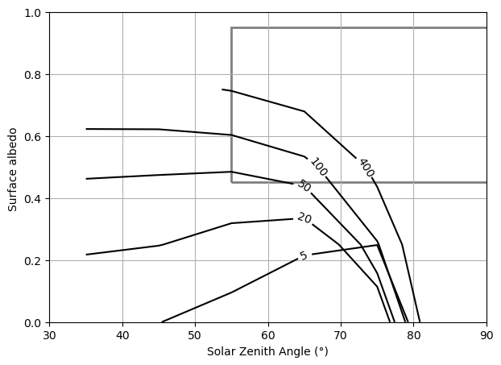

Advanced: Reproducing Shupe & Intrieri (2004)#
In this notebook, we’ll attempt to reproduce a key figure from Shupe & Intrieri (2004) — a seminal paper on the Arctic cloud radiative effect. This involves running hundreds of simulations across a grid of cloud parameters to map the relationship between cloud properties and radiative forcing.
Overview#
We assume a standard Arctic winter atmosphere from the libRadtran data directory (
/opt/libRadtran-2.0.6/data/atmmod).This notebook executes hundreds of libRadtran simulations, so it may take a while to run. You can speed it up by reducing the number of parameter steps.
The plot visualizes whether a cloud will cool or warm the surface, and how this depends primarily on the liquid water path (LWP), solar zenith angle, and surface albedo.
import pyradtran
import matplotlib.pyplot as plt
import numpy as np
import xarray as xr
from pathlib import Path
import pandas as pd
import logging
logging.getLogger('pyradtran').setLevel(logging.CRITICAL)
solar_config_path = Path('config/arctic_cloud_experiment_solar.yaml')
thermal_config_path = Path('config/arctic_cloud_experiment_thermal.yaml')
Cloud Radiative Effect Calculation#
This is an advanced example showing how to perform sensitivity studies on cloud parameters, calculating the cloud radiative effect (CRE) in a libRadtran setup. We calculate the net irradiance for the solar (300–3000 nm) and thermal (3000–100000 nm) bands, under both cloud-free and cloudy conditions.
Surface type |
Shortwave albedo α (broadband) |
Longwave emissivity ε (8–13 µm) |
Notes / typical use |
|---|---|---|---|
Open water |
0.05 – 0.10 |
0.985 – 0.990 |
Low SW reflectance; near-blackbody in TIR |
Thin ice (nilas / young ice) |
0.15 – 0.40 |
0.970 – 0.985 |
Strong thickness dependence; key for leads |
Snow-covered sea ice |
0.75 – 0.90 |
0.980 – 0.995 |
Very high SW albedo; excellent LW emitter |
albedos_sw = np.arange(0, 1, 0.25)
albedos_lw = np.arange(0, 1, 0.25) * 0 # set to zero (reasonable approximation for high-emissivity surfaces)
# libRadtran handles emissivity as 1 - albedo
# Arctic stratus parameter space (libRadtran units)
cbh = [0.3] # km
cth = [1.0] # km
lwps = np.array([5, 20, 50, 100, 400])
lwcs = lwps / 700 # convert to kg m^-3 to fill the 700 m layer uniformly
reffs = [15]
surface_temperatures = np.linspace(273.15, 273.15 - 30, len(albedos_sw))
cbh = [0.3] * len(lwcs)
cth = [1] * len(lwcs)
times = pd.date_range("2024-03-01 12:00", periods=20, freq="7d")
lats = np.arange(80, 60, -1)
print(lats)
lon = [0] * len(times)
altitudes = [0, 1, 10, 100]
ds = xr.Dataset(
coords={
"time": times,
"latitude": (("time",), lats),
"longitude": (("time",), lon),
"altitude": (("altitude",), altitudes)
},
data_vars={
"lwc": (("lwc",), lwcs),
"reff": (("reff",), reffs),
"cth": (("lwc",), cth),
"cbh": (("lwc",), cbh),
"surface_temperature": (("albedo",), surface_temperatures),
"albedo_sw": (("albedo",), albedos_sw),
"albedo_lw": (("albedo",), albedos_lw),
}
)
ds_sim_no_cloud_solar = ds.pyradtran.run(
config_path='config/arctic_cloud_experiment_solar.yaml',
surface_temperature_var='surface_temperature',
albedo_var='albedo_sw',
save_to_file=True,
return_dataset=True,
show_progress=False,
)
ds_sim_no_cloud_thermal = ds.pyradtran.run(
config_path='config/arctic_cloud_experiment_thermal.yaml',
surface_temperature_var='surface_temperature',
albedo_var='albedo_lw',
save_to_file=True,
return_dataset=True,
show_progress=False,
)
ds_sim_cloudy_solar = ds.pyradtran.run(
config_path='config/arctic_cloud_experiment_solar.yaml',
cloud_wc_var='lwc',
cloud_reff_var='reff',
cloud_top_var='cth',
cloud_bottom_var='cbh',
surface_temperature_var='surface_temperature',
albedo_var='albedo_sw',
save_to_file=True,
return_dataset=True,
show_progress=False,
)
ds_sim_cloudy_thermal = ds.pyradtran.run(
config_path='config/arctic_cloud_experiment_thermal.yaml',
cloud_wc_var='lwc',
cloud_reff_var='reff',
cloud_top_var='cth',
cloud_bottom_var='cbh',
surface_temperature_var='surface_temperature',
albedo_var='albedo_lw',
save_to_file=True,
return_dataset=True,
show_progress=False,
)
[80 79 78 77 76 75 74 73 72 71 70 69 68 67 66 65 64 63 62 61]
Running simulations: 0%| | 0/400 [00:00<?, ?sim/s]
Running simulations: 0%| | 1/400 [00:05<35:45, 5.38s/sim]
Running simulations: 0%| | 1/400 [00:05<35:45, 5.38s/sim, Success=1, Total=400]
Running simulations: 0%| | 2/400 [00:06<18:13, 2.75s/sim, Success=1, Total=400]
Running simulations: 0%| | 2/400 [00:06<18:13, 2.75s/sim, Success=2, Total=400]
Running simulations: 1%| | 3/400 [00:06<10:52, 1.64s/sim, Success=2, Total=400]
Running simulations: 1%| | 3/400 [00:06<10:52, 1.64s/sim, Success=3, Total=400]
Running simulations: 1%| | 4/400 [00:06<06:59, 1.06s/sim, Success=3, Total=400]
Running simulations: 1%| | 4/400 [00:06<06:59, 1.06s/sim, Success=4, Total=400]
Running simulations: 1%|▏ | 5/400 [00:06<06:58, 1.06s/sim, Success=5, Total=400]
Running simulations: 2%|▏ | 6/400 [00:06<03:38, 1.80sim/s, Success=5, Total=400]
Running simulations: 2%|▏ | 6/400 [00:06<03:38, 1.80sim/s, Success=6, Total=400]
Running simulations: 2%|▏ | 7/400 [00:07<03:37, 1.80sim/s, Success=7, Total=400]
Running simulations: 2%|▏ | 8/400 [00:07<02:24, 2.72sim/s, Success=7, Total=400]
Running simulations: 2%|▏ | 8/400 [00:07<02:24, 2.72sim/s, Success=8, Total=400]
Running simulations: 2%|▏ | 9/400 [00:07<02:23, 2.72sim/s, Success=9, Total=400]
Running simulations: 2%|▎ | 10/400 [00:07<02:23, 2.72sim/s, Success=10, Total=400]
Running simulations: 3%|▎ | 11/400 [00:07<01:21, 4.75sim/s, Success=10, Total=400]
Running simulations: 3%|▎ | 11/400 [00:07<01:21, 4.75sim/s, Success=11, Total=400]
Running simulations: 3%|▎ | 12/400 [00:07<01:21, 4.75sim/s, Success=12, Total=400]
Running simulations: 3%|▎ | 13/400 [00:07<01:21, 4.75sim/s, Success=13, Total=400]
Running simulations: 4%|▎ | 14/400 [00:07<01:21, 4.75sim/s, Success=14, Total=400]
Running simulations: 4%|▍ | 15/400 [00:07<01:21, 4.75sim/s, Success=15, Total=400]
Running simulations: 4%|▍ | 16/400 [00:07<00:41, 9.15sim/s, Success=15, Total=400]
Running simulations: 4%|▍ | 16/400 [00:07<00:41, 9.15sim/s, Success=16, Total=400]
Running simulations: 4%|▍ | 17/400 [00:07<00:41, 9.15sim/s, Success=17, Total=400]
Running simulations: 4%|▍ | 18/400 [00:07<00:41, 9.15sim/s, Success=18, Total=400]
Running simulations: 5%|▍ | 19/400 [00:07<00:41, 9.15sim/s, Success=19, Total=400]
Running simulations: 5%|▌ | 20/400 [00:07<00:41, 9.15sim/s, Success=20, Total=400]
Running simulations: 5%|▌ | 21/400 [00:07<00:41, 9.15sim/s, Success=21, Total=400]
Running simulations: 6%|▌ | 22/400 [00:07<00:41, 9.15sim/s, Success=22, Total=400]
Running simulations: 6%|▌ | 23/400 [00:07<00:41, 9.15sim/s, Success=23, Total=400]
Running simulations: 6%|▌ | 24/400 [00:07<00:41, 9.15sim/s, Success=24, Total=400]
Running simulations: 6%|▋ | 25/400 [00:07<00:40, 9.15sim/s, Success=25, Total=400]
Running simulations: 6%|▋ | 26/400 [00:07<00:40, 9.15sim/s, Success=26, Total=400]
Running simulations: 7%|▋ | 27/400 [00:07<00:18, 19.67sim/s, Success=26, Total=400]
Running simulations: 7%|▋ | 27/400 [00:07<00:18, 19.67sim/s, Success=27, Total=400]
Running simulations: 7%|▋ | 28/400 [00:07<00:18, 19.67sim/s, Success=28, Total=400]
Running simulations: 7%|▋ | 29/400 [00:07<00:18, 19.67sim/s, Success=29, Total=400]
Running simulations: 8%|▊ | 30/400 [00:07<00:18, 19.67sim/s, Success=30, Total=400]
Running simulations: 8%|▊ | 31/400 [00:11<01:48, 3.40sim/s, Success=30, Total=400]
Running simulations: 8%|▊ | 31/400 [00:11<01:48, 3.40sim/s, Success=31, Total=400]
Running simulations: 8%|▊ | 32/400 [00:12<01:48, 3.40sim/s, Success=32, Total=400]
Running simulations: 8%|▊ | 33/400 [00:13<01:48, 3.40sim/s, Success=33, Total=400]
Running simulations: 8%|▊ | 34/400 [00:13<02:06, 2.89sim/s, Success=33, Total=400]
Running simulations: 8%|▊ | 34/400 [00:13<02:06, 2.89sim/s, Success=34, Total=400]
Running simulations: 9%|▉ | 35/400 [00:13<02:06, 2.89sim/s, Success=35, Total=400]
Running simulations: 9%|▉ | 36/400 [00:13<01:59, 3.05sim/s, Success=35, Total=400]
Running simulations: 9%|▉ | 36/400 [00:13<01:59, 3.05sim/s, Success=36, Total=400]
Running simulations: 9%|▉ | 37/400 [00:13<01:59, 3.05sim/s, Success=37, Total=400]
Running simulations: 10%|▉ | 38/400 [00:14<01:44, 3.46sim/s, Success=37, Total=400]
Running simulations: 10%|▉ | 38/400 [00:14<01:44, 3.46sim/s, Success=38, Total=400]
Running simulations: 10%|▉ | 39/400 [00:14<01:44, 3.46sim/s, Success=39, Total=400]
Running simulations: 10%|█ | 40/400 [00:14<01:28, 4.05sim/s, Success=39, Total=400]
Running simulations: 10%|█ | 40/400 [00:14<01:28, 4.05sim/s, Success=40, Total=400]
Running simulations: 10%|█ | 41/400 [00:14<01:28, 4.05sim/s, Success=41, Total=400]
Running simulations: 10%|█ | 42/400 [00:14<01:15, 4.74sim/s, Success=41, Total=400]
Running simulations: 10%|█ | 42/400 [00:14<01:15, 4.74sim/s, Success=42, Total=400]
Running simulations: 11%|█ | 43/400 [00:14<01:15, 4.74sim/s, Success=43, Total=400]
Running simulations: 11%|█ | 44/400 [00:14<01:15, 4.74sim/s, Success=44, Total=400]
Running simulations: 11%|█▏ | 45/400 [00:14<01:14, 4.74sim/s, Success=45, Total=400]
Running simulations: 12%|█▏ | 46/400 [00:14<01:14, 4.74sim/s, Success=46, Total=400]
Running simulations: 12%|█▏ | 47/400 [00:14<01:14, 4.74sim/s, Success=47, Total=400]
Running simulations: 12%|█▏ | 48/400 [00:14<01:14, 4.74sim/s, Success=48, Total=400]
Running simulations: 12%|█▏ | 49/400 [00:14<00:37, 9.25sim/s, Success=48, Total=400]
Running simulations: 12%|█▏ | 49/400 [00:14<00:37, 9.25sim/s, Success=49, Total=400]
Running simulations: 12%|█▎ | 50/400 [00:14<00:37, 9.25sim/s, Success=50, Total=400]
Running simulations: 13%|█▎ | 51/400 [00:14<00:37, 9.25sim/s, Success=51, Total=400]
Running simulations: 13%|█▎ | 52/400 [00:14<00:37, 9.25sim/s, Success=52, Total=400]
Running simulations: 13%|█▎ | 53/400 [00:14<00:30, 11.51sim/s, Success=52, Total=400]
Running simulations: 13%|█▎ | 53/400 [00:14<00:30, 11.51sim/s, Success=53, Total=400]
Running simulations: 14%|█▎ | 54/400 [00:14<00:30, 11.51sim/s, Success=54, Total=400]
Running simulations: 14%|█▍ | 55/400 [00:14<00:29, 11.51sim/s, Success=55, Total=400]
Running simulations: 14%|█▍ | 56/400 [00:15<00:27, 12.49sim/s, Success=55, Total=400]
Running simulations: 14%|█▍ | 56/400 [00:15<00:27, 12.49sim/s, Success=56, Total=400]
Running simulations: 14%|█▍ | 57/400 [00:15<00:27, 12.49sim/s, Success=57, Total=400]
Running simulations: 14%|█▍ | 58/400 [00:15<00:27, 12.49sim/s, Success=58, Total=400]
Running simulations: 15%|█▍ | 59/400 [00:15<00:27, 12.49sim/s, Success=59, Total=400]
Running simulations: 15%|█▌ | 60/400 [00:15<00:23, 14.30sim/s, Success=59, Total=400]
Running simulations: 15%|█▌ | 60/400 [00:15<00:23, 14.30sim/s, Success=60, Total=400]
Running simulations: 15%|█▌ | 61/400 [00:18<00:23, 14.30sim/s, Success=61, Total=400]
Running simulations: 16%|█▌ | 62/400 [00:19<00:23, 14.30sim/s, Success=62, Total=400]
Running simulations: 16%|█▌ | 63/400 [00:19<02:33, 2.20sim/s, Success=62, Total=400]
Running simulations: 16%|█▌ | 63/400 [00:19<02:33, 2.20sim/s, Success=63, Total=400]
Running simulations: 16%|█▌ | 64/400 [00:20<02:33, 2.20sim/s, Success=64, Total=400]
Running simulations: 16%|█▋ | 65/400 [00:20<02:24, 2.32sim/s, Success=64, Total=400]
Running simulations: 16%|█▋ | 65/400 [00:20<02:24, 2.32sim/s, Success=65, Total=400]
Running simulations: 16%|█▋ | 66/400 [00:20<02:24, 2.32sim/s, Success=66, Total=400]
Running simulations: 17%|█▋ | 67/400 [00:20<01:56, 2.87sim/s, Success=66, Total=400]
Running simulations: 17%|█▋ | 67/400 [00:20<01:56, 2.87sim/s, Success=67, Total=400]
Running simulations: 17%|█▋ | 68/400 [00:21<01:55, 2.87sim/s, Success=68, Total=400]
Running simulations: 17%|█▋ | 69/400 [00:21<01:52, 2.94sim/s, Success=68, Total=400]
Running simulations: 17%|█▋ | 69/400 [00:21<01:52, 2.94sim/s, Success=69, Total=400]
Running simulations: 18%|█▊ | 70/400 [00:21<01:52, 2.94sim/s, Success=70, Total=400]
Running simulations: 18%|█▊ | 71/400 [00:21<01:29, 3.68sim/s, Success=70, Total=400]
Running simulations: 18%|█▊ | 71/400 [00:21<01:29, 3.68sim/s, Success=71, Total=400]
Running simulations: 18%|█▊ | 72/400 [00:21<01:29, 3.68sim/s, Success=72, Total=400]
Running simulations: 18%|█▊ | 73/400 [00:21<01:14, 4.36sim/s, Success=72, Total=400]
Running simulations: 18%|█▊ | 73/400 [00:21<01:14, 4.36sim/s, Success=73, Total=400]
Running simulations: 18%|█▊ | 74/400 [00:21<01:14, 4.36sim/s, Success=74, Total=400]
Running simulations: 19%|█▉ | 75/400 [00:21<01:14, 4.36sim/s, Success=75, Total=400]
Running simulations: 19%|█▉ | 76/400 [00:21<01:14, 4.36sim/s, Success=76, Total=400]
Running simulations: 19%|█▉ | 77/400 [00:21<00:46, 6.93sim/s, Success=76, Total=400]
Running simulations: 19%|█▉ | 77/400 [00:21<00:46, 6.93sim/s, Success=77, Total=400]
Running simulations: 20%|█▉ | 78/400 [00:21<00:46, 6.93sim/s, Success=78, Total=400]
Running simulations: 20%|█▉ | 79/400 [00:21<00:46, 6.93sim/s, Success=79, Total=400]
Running simulations: 20%|██ | 80/400 [00:21<00:46, 6.93sim/s, Success=80, Total=400]
Running simulations: 20%|██ | 81/400 [00:21<00:32, 9.70sim/s, Success=80, Total=400]
Running simulations: 20%|██ | 81/400 [00:21<00:32, 9.70sim/s, Success=81, Total=400]
Running simulations: 20%|██ | 82/400 [00:22<00:32, 9.70sim/s, Success=82, Total=400]
Running simulations: 21%|██ | 83/400 [00:22<00:32, 9.70sim/s, Success=83, Total=400]
Running simulations: 21%|██ | 84/400 [00:22<00:31, 10.17sim/s, Success=83, Total=400]
Running simulations: 21%|██ | 84/400 [00:22<00:31, 10.17sim/s, Success=84, Total=400]
Running simulations: 21%|██▏ | 85/400 [00:22<00:30, 10.17sim/s, Success=85, Total=400]
Running simulations: 22%|██▏ | 86/400 [00:22<00:30, 10.17sim/s, Success=86, Total=400]
Running simulations: 22%|██▏ | 87/400 [00:22<00:26, 11.93sim/s, Success=86, Total=400]
Running simulations: 22%|██▏ | 87/400 [00:22<00:26, 11.93sim/s, Success=87, Total=400]
Running simulations: 22%|██▏ | 88/400 [00:22<00:26, 11.93sim/s, Success=88, Total=400]
Running simulations: 22%|██▏ | 89/400 [00:22<00:25, 12.27sim/s, Success=88, Total=400]
Running simulations: 22%|██▏ | 89/400 [00:22<00:25, 12.27sim/s, Success=89, Total=400]
Running simulations: 22%|██▎ | 90/400 [00:22<00:25, 12.27sim/s, Success=90, Total=400]
Running simulations: 23%|██▎ | 91/400 [00:25<02:20, 2.19sim/s, Success=90, Total=400]
Running simulations: 23%|██▎ | 91/400 [00:25<02:20, 2.19sim/s, Success=91, Total=400]
Running simulations: 23%|██▎ | 92/400 [00:26<02:20, 2.19sim/s, Success=92, Total=400]
Running simulations: 23%|██▎ | 93/400 [00:27<02:31, 2.03sim/s, Success=92, Total=400]
Running simulations: 23%|██▎ | 93/400 [00:27<02:31, 2.03sim/s, Success=93, Total=400]
Running simulations: 24%|██▎ | 94/400 [00:27<02:20, 2.18sim/s, Success=93, Total=400]
Running simulations: 24%|██▎ | 94/400 [00:27<02:20, 2.18sim/s, Success=94, Total=400]
Running simulations: 24%|██▍ | 95/400 [00:27<02:20, 2.17sim/s, Success=94, Total=400]
Running simulations: 24%|██▍ | 95/400 [00:27<02:20, 2.17sim/s, Success=95, Total=400]
Running simulations: 24%|██▍ | 96/400 [00:27<02:20, 2.17sim/s, Success=96, Total=400]
Running simulations: 24%|██▍ | 97/400 [00:27<01:38, 3.07sim/s, Success=96, Total=400]
Running simulations: 24%|██▍ | 97/400 [00:27<01:38, 3.07sim/s, Success=97, Total=400]
Running simulations: 24%|██▍ | 98/400 [00:28<01:27, 3.45sim/s, Success=97, Total=400]
Running simulations: 24%|██▍ | 98/400 [00:28<01:27, 3.45sim/s, Success=98, Total=400]
Running simulations: 25%|██▍ | 99/400 [00:28<01:19, 3.79sim/s, Success=98, Total=400]
Running simulations: 25%|██▍ | 99/400 [00:28<01:19, 3.79sim/s, Success=99, Total=400]
Running simulations: 25%|██▌ | 100/400 [00:28<01:19, 3.79sim/s, Success=100, Total=400]
Running simulations: 25%|██▌ | 101/400 [00:28<01:18, 3.79sim/s, Success=101, Total=400]
Running simulations: 26%|██▌ | 102/400 [00:28<00:50, 5.85sim/s, Success=101, Total=400]
Running simulations: 26%|██▌ | 102/400 [00:28<00:50, 5.85sim/s, Success=102, Total=400]
Running simulations: 26%|██▌ | 103/400 [00:28<00:47, 6.23sim/s, Success=102, Total=400]
Running simulations: 26%|██▌ | 103/400 [00:28<00:47, 6.23sim/s, Success=103, Total=400]
Running simulations: 26%|██▌ | 104/400 [00:28<00:47, 6.23sim/s, Success=104, Total=400]
Running simulations: 26%|██▋ | 105/400 [00:28<00:43, 6.84sim/s, Success=104, Total=400]
Running simulations: 26%|██▋ | 105/400 [00:28<00:43, 6.84sim/s, Success=105, Total=400]
Running simulations: 26%|██▋ | 106/400 [00:28<00:42, 6.84sim/s, Success=106, Total=400]
Running simulations: 27%|██▋ | 107/400 [00:28<00:34, 8.42sim/s, Success=106, Total=400]
Running simulations: 27%|██▋ | 107/400 [00:28<00:34, 8.42sim/s, Success=107, Total=400]
Running simulations: 27%|██▋ | 108/400 [00:28<00:34, 8.42sim/s, Success=108, Total=400]
Running simulations: 27%|██▋ | 109/400 [00:29<00:28, 10.19sim/s, Success=108, Total=400]
Running simulations: 27%|██▋ | 109/400 [00:29<00:28, 10.19sim/s, Success=109, Total=400]
Running simulations: 28%|██▊ | 110/400 [00:29<00:28, 10.19sim/s, Success=110, Total=400]
Running simulations: 28%|██▊ | 111/400 [00:29<00:26, 10.71sim/s, Success=110, Total=400]
Running simulations: 28%|██▊ | 111/400 [00:29<00:26, 10.71sim/s, Success=111, Total=400]
Running simulations: 28%|██▊ | 112/400 [00:29<00:26, 10.71sim/s, Success=112, Total=400]
Running simulations: 28%|██▊ | 113/400 [00:29<00:28, 10.21sim/s, Success=112, Total=400]
Running simulations: 28%|██▊ | 113/400 [00:29<00:28, 10.21sim/s, Success=113, Total=400]
Running simulations: 28%|██▊ | 114/400 [00:29<00:28, 10.21sim/s, Success=114, Total=400]
Running simulations: 29%|██▉ | 115/400 [00:29<00:27, 10.21sim/s, Success=115, Total=400]
Running simulations: 29%|██▉ | 116/400 [00:29<00:22, 12.83sim/s, Success=115, Total=400]
Running simulations: 29%|██▉ | 116/400 [00:29<00:22, 12.83sim/s, Success=116, Total=400]
Running simulations: 29%|██▉ | 117/400 [00:29<00:22, 12.83sim/s, Success=117, Total=400]
Running simulations: 30%|██▉ | 118/400 [00:29<00:20, 13.66sim/s, Success=117, Total=400]
Running simulations: 30%|██▉ | 118/400 [00:29<00:20, 13.66sim/s, Success=118, Total=400]
Running simulations: 30%|██▉ | 119/400 [00:29<00:20, 13.66sim/s, Success=119, Total=400]
Running simulations: 30%|███ | 120/400 [00:30<00:29, 9.35sim/s, Success=119, Total=400]
Running simulations: 30%|███ | 120/400 [00:30<00:29, 9.35sim/s, Success=120, Total=400]
Running simulations: 30%|███ | 121/400 [00:33<00:29, 9.35sim/s, Success=121, Total=400]
Running simulations: 30%|███ | 122/400 [00:33<02:31, 1.83sim/s, Success=121, Total=400]
Running simulations: 30%|███ | 122/400 [00:33<02:31, 1.83sim/s, Success=122, Total=400]
Running simulations: 31%|███ | 123/400 [00:34<02:46, 1.67sim/s, Success=122, Total=400]
Running simulations: 31%|███ | 123/400 [00:34<02:46, 1.67sim/s, Success=123, Total=400]
Running simulations: 31%|███ | 124/400 [00:34<02:21, 1.95sim/s, Success=123, Total=400]
Running simulations: 31%|███ | 124/400 [00:34<02:21, 1.95sim/s, Success=124, Total=400]
Running simulations: 31%|███▏ | 125/400 [00:34<02:02, 2.24sim/s, Success=124, Total=400]
Running simulations: 31%|███▏ | 125/400 [00:34<02:02, 2.24sim/s, Success=125, Total=400]
Running simulations: 32%|███▏ | 126/400 [00:34<01:47, 2.54sim/s, Success=125, Total=400]
Running simulations: 32%|███▏ | 126/400 [00:34<01:47, 2.54sim/s, Success=126, Total=400]
Running simulations: 32%|███▏ | 127/400 [00:34<01:34, 2.89sim/s, Success=126, Total=400]
Running simulations: 32%|███▏ | 127/400 [00:34<01:34, 2.89sim/s, Success=127, Total=400]
Running simulations: 32%|███▏ | 128/400 [00:35<01:31, 2.99sim/s, Success=127, Total=400]
Running simulations: 32%|███▏ | 128/400 [00:35<01:31, 2.99sim/s, Success=128, Total=400]
Running simulations: 32%|███▏ | 129/400 [00:35<01:30, 2.99sim/s, Success=129, Total=400]
Running simulations: 32%|███▎ | 130/400 [00:35<01:30, 2.99sim/s, Success=130, Total=400]
Running simulations: 33%|███▎ | 131/400 [00:35<00:47, 5.64sim/s, Success=130, Total=400]
Running simulations: 33%|███▎ | 131/400 [00:35<00:47, 5.64sim/s, Success=131, Total=400]
Running simulations: 33%|███▎ | 132/400 [00:35<00:47, 5.64sim/s, Success=132, Total=400]
Running simulations: 33%|███▎ | 133/400 [00:35<00:47, 5.64sim/s, Success=133, Total=400]
Running simulations: 34%|███▎ | 134/400 [00:35<00:41, 6.35sim/s, Success=133, Total=400]
Running simulations: 34%|███▎ | 134/400 [00:35<00:41, 6.35sim/s, Success=134, Total=400]
Running simulations: 34%|███▍ | 135/400 [00:35<00:41, 6.35sim/s, Success=135, Total=400]
Running simulations: 34%|███▍ | 136/400 [00:35<00:34, 7.56sim/s, Success=135, Total=400]
Running simulations: 34%|███▍ | 136/400 [00:35<00:34, 7.56sim/s, Success=136, Total=400]
Running simulations: 34%|███▍ | 137/400 [00:36<00:34, 7.56sim/s, Success=137, Total=400]
Running simulations: 34%|███▍ | 138/400 [00:36<00:34, 7.67sim/s, Success=137, Total=400]
Running simulations: 34%|███▍ | 138/400 [00:36<00:34, 7.67sim/s, Success=138, Total=400]
Running simulations: 35%|███▍ | 139/400 [00:36<00:34, 7.67sim/s, Success=139, Total=400]
Running simulations: 35%|███▌ | 140/400 [00:36<00:33, 7.67sim/s, Success=140, Total=400]
Running simulations: 35%|███▌ | 141/400 [00:36<00:33, 7.67sim/s, Success=141, Total=400]
Running simulations: 36%|███▌ | 142/400 [00:36<00:23, 10.88sim/s, Success=141, Total=400]
Running simulations: 36%|███▌ | 142/400 [00:36<00:23, 10.88sim/s, Success=142, Total=400]
Running simulations: 36%|███▌ | 143/400 [00:36<00:23, 10.88sim/s, Success=143, Total=400]
Running simulations: 36%|███▌ | 144/400 [00:36<00:21, 12.12sim/s, Success=143, Total=400]
Running simulations: 36%|███▌ | 144/400 [00:36<00:21, 12.12sim/s, Success=144, Total=400]
Running simulations: 36%|███▋ | 145/400 [00:36<00:21, 12.12sim/s, Success=145, Total=400]
Running simulations: 36%|███▋ | 146/400 [00:36<00:23, 10.71sim/s, Success=145, Total=400]
Running simulations: 36%|███▋ | 146/400 [00:36<00:23, 10.71sim/s, Success=146, Total=400]
Running simulations: 37%|███▋ | 147/400 [00:36<00:23, 10.71sim/s, Success=147, Total=400]
Running simulations: 37%|███▋ | 148/400 [00:37<00:26, 9.55sim/s, Success=147, Total=400]
Running simulations: 37%|███▋ | 148/400 [00:37<00:26, 9.55sim/s, Success=148, Total=400]
Running simulations: 37%|███▋ | 149/400 [00:37<00:26, 9.55sim/s, Success=149, Total=400]
Running simulations: 38%|███▊ | 150/400 [00:37<00:26, 9.55sim/s, Success=150, Total=400]
Running simulations: 38%|███▊ | 151/400 [00:39<01:41, 2.45sim/s, Success=150, Total=400]
Running simulations: 38%|███▊ | 151/400 [00:39<01:41, 2.45sim/s, Success=151, Total=400]
Running simulations: 38%|███▊ | 152/400 [00:40<01:42, 2.43sim/s, Success=151, Total=400]
Running simulations: 38%|███▊ | 152/400 [00:40<01:42, 2.43sim/s, Success=152, Total=400]
Running simulations: 38%|███▊ | 153/400 [00:40<01:41, 2.43sim/s, Success=152, Total=400]
Running simulations: 38%|███▊ | 153/400 [00:40<01:41, 2.43sim/s, Success=153, Total=400]
Running simulations: 38%|███▊ | 154/400 [00:41<01:45, 2.34sim/s, Success=153, Total=400]
Running simulations: 38%|███▊ | 154/400 [00:41<01:45, 2.34sim/s, Success=154, Total=400]
Running simulations: 39%|███▉ | 155/400 [00:41<01:48, 2.26sim/s, Success=154, Total=400]
Running simulations: 39%|███▉ | 155/400 [00:41<01:48, 2.26sim/s, Success=155, Total=400]
Running simulations: 39%|███▉ | 156/400 [00:41<01:31, 2.65sim/s, Success=155, Total=400]
Running simulations: 39%|███▉ | 156/400 [00:41<01:31, 2.65sim/s, Success=156, Total=400]
Running simulations: 39%|███▉ | 157/400 [00:41<01:31, 2.65sim/s, Success=157, Total=400]
Running simulations: 40%|███▉ | 158/400 [00:42<01:03, 3.80sim/s, Success=157, Total=400]
Running simulations: 40%|███▉ | 158/400 [00:42<01:03, 3.80sim/s, Success=158, Total=400]
Running simulations: 40%|███▉ | 159/400 [00:42<01:09, 3.47sim/s, Success=158, Total=400]
Running simulations: 40%|███▉ | 159/400 [00:42<01:09, 3.47sim/s, Success=159, Total=400]
Running simulations: 40%|████ | 160/400 [00:42<01:09, 3.47sim/s, Success=160, Total=400]
Running simulations: 40%|████ | 161/400 [00:42<00:51, 4.66sim/s, Success=160, Total=400]
Running simulations: 40%|████ | 161/400 [00:42<00:51, 4.66sim/s, Success=161, Total=400]
Running simulations: 40%|████ | 162/400 [00:42<00:52, 4.57sim/s, Success=161, Total=400]
Running simulations: 40%|████ | 162/400 [00:42<00:52, 4.57sim/s, Success=162, Total=400]
Running simulations: 41%|████ | 163/400 [00:42<00:51, 4.57sim/s, Success=163, Total=400]
Running simulations: 41%|████ | 164/400 [00:42<00:51, 4.57sim/s, Success=164, Total=400]
Running simulations: 41%|████▏ | 165/400 [00:42<00:31, 7.56sim/s, Success=164, Total=400]
Running simulations: 41%|████▏ | 165/400 [00:42<00:31, 7.56sim/s, Success=165, Total=400]
Running simulations: 42%|████▏ | 166/400 [00:43<00:30, 7.56sim/s, Success=166, Total=400]
Running simulations: 42%|████▏ | 167/400 [00:43<00:27, 8.52sim/s, Success=166, Total=400]
Running simulations: 42%|████▏ | 167/400 [00:43<00:27, 8.52sim/s, Success=167, Total=400]
Running simulations: 42%|████▏ | 168/400 [00:43<00:27, 8.52sim/s, Success=168, Total=400]
Running simulations: 42%|████▏ | 169/400 [00:43<00:26, 8.76sim/s, Success=168, Total=400]
Running simulations: 42%|████▏ | 169/400 [00:43<00:26, 8.76sim/s, Success=169, Total=400]
Running simulations: 42%|████▎ | 170/400 [00:43<00:26, 8.76sim/s, Success=170, Total=400]
Running simulations: 43%|████▎ | 171/400 [00:43<00:22, 10.35sim/s, Success=170, Total=400]
Running simulations: 43%|████▎ | 171/400 [00:43<00:22, 10.35sim/s, Success=171, Total=400]
Running simulations: 43%|████▎ | 172/400 [00:43<00:22, 10.35sim/s, Success=172, Total=400]
Running simulations: 43%|████▎ | 173/400 [00:43<00:20, 11.18sim/s, Success=172, Total=400]
Running simulations: 43%|████▎ | 173/400 [00:43<00:20, 11.18sim/s, Success=173, Total=400]
Running simulations: 44%|████▎ | 174/400 [00:43<00:20, 11.18sim/s, Success=174, Total=400]
Running simulations: 44%|████▍ | 175/400 [00:43<00:18, 12.02sim/s, Success=174, Total=400]
Running simulations: 44%|████▍ | 175/400 [00:43<00:18, 12.02sim/s, Success=175, Total=400]
Running simulations: 44%|████▍ | 176/400 [00:43<00:18, 12.02sim/s, Success=176, Total=400]
Running simulations: 44%|████▍ | 177/400 [00:43<00:18, 12.02sim/s, Success=177, Total=400]
Running simulations: 44%|████▍ | 178/400 [00:43<00:16, 13.55sim/s, Success=177, Total=400]
Running simulations: 44%|████▍ | 178/400 [00:43<00:16, 13.55sim/s, Success=178, Total=400]
Running simulations: 45%|████▍ | 179/400 [00:43<00:16, 13.55sim/s, Success=179, Total=400]
Running simulations: 45%|████▌ | 180/400 [00:44<00:29, 7.37sim/s, Success=179, Total=400]
Running simulations: 45%|████▌ | 180/400 [00:44<00:29, 7.37sim/s, Success=180, Total=400]
Running simulations: 45%|████▌ | 181/400 [00:46<00:29, 7.37sim/s, Success=181, Total=400]
Running simulations: 46%|████▌ | 182/400 [00:47<01:45, 2.07sim/s, Success=181, Total=400]
Running simulations: 46%|████▌ | 182/400 [00:47<01:45, 2.07sim/s, Success=182, Total=400]
Running simulations: 46%|████▌ | 183/400 [00:48<01:56, 1.86sim/s, Success=182, Total=400]
Running simulations: 46%|████▌ | 183/400 [00:48<01:56, 1.86sim/s, Success=183, Total=400]
Running simulations: 46%|████▌ | 184/400 [00:48<01:55, 1.86sim/s, Success=184, Total=400]
Running simulations: 46%|████▋ | 185/400 [00:48<01:31, 2.34sim/s, Success=184, Total=400]
Running simulations: 46%|████▋ | 185/400 [00:48<01:31, 2.34sim/s, Success=185, Total=400]
Running simulations: 46%|████▋ | 186/400 [00:48<01:25, 2.51sim/s, Success=185, Total=400]
Running simulations: 46%|████▋ | 186/400 [00:48<01:25, 2.51sim/s, Success=186, Total=400]
Running simulations: 47%|████▋ | 187/400 [00:49<01:20, 2.66sim/s, Success=186, Total=400]
Running simulations: 47%|████▋ | 187/400 [00:49<01:20, 2.66sim/s, Success=187, Total=400]
Running simulations: 47%|████▋ | 188/400 [00:49<01:19, 2.66sim/s, Success=188, Total=400]
Running simulations: 47%|████▋ | 189/400 [00:49<00:54, 3.87sim/s, Success=188, Total=400]
Running simulations: 47%|████▋ | 189/400 [00:49<00:54, 3.87sim/s, Success=189, Total=400]
Running simulations: 48%|████▊ | 190/400 [00:49<00:49, 4.22sim/s, Success=189, Total=400]
Running simulations: 48%|████▊ | 190/400 [00:49<00:49, 4.22sim/s, Success=190, Total=400]
Running simulations: 48%|████▊ | 191/400 [00:49<00:49, 4.22sim/s, Success=191, Total=400]
Running simulations: 48%|████▊ | 192/400 [00:49<00:40, 5.17sim/s, Success=191, Total=400]
Running simulations: 48%|████▊ | 192/400 [00:49<00:40, 5.17sim/s, Success=192, Total=400]
Running simulations: 48%|████▊ | 193/400 [00:49<00:40, 5.17sim/s, Success=193, Total=400]
Running simulations: 48%|████▊ | 194/400 [00:49<00:34, 5.91sim/s, Success=193, Total=400]
Running simulations: 48%|████▊ | 194/400 [00:49<00:34, 5.91sim/s, Success=194, Total=400]
Running simulations: 49%|████▉ | 195/400 [00:49<00:34, 5.91sim/s, Success=195, Total=400]
Running simulations: 49%|████▉ | 196/400 [00:50<00:42, 4.80sim/s, Success=195, Total=400]
Running simulations: 49%|████▉ | 196/400 [00:50<00:42, 4.80sim/s, Success=196, Total=400]
Running simulations: 49%|████▉ | 197/400 [00:50<00:42, 4.80sim/s, Success=197, Total=400]
Running simulations: 50%|████▉ | 198/400 [00:50<00:42, 4.80sim/s, Success=198, Total=400]
Running simulations: 50%|████▉ | 199/400 [00:50<00:29, 6.84sim/s, Success=198, Total=400]
Running simulations: 50%|████▉ | 199/400 [00:50<00:29, 6.84sim/s, Success=199, Total=400]
Running simulations: 50%|█████ | 200/400 [00:50<00:29, 6.84sim/s, Success=200, Total=400]
Running simulations: 50%|█████ | 201/400 [00:50<00:29, 6.84sim/s, Success=201, Total=400]
Running simulations: 50%|█████ | 202/400 [00:50<00:21, 9.38sim/s, Success=201, Total=400]
Running simulations: 50%|█████ | 202/400 [00:50<00:21, 9.38sim/s, Success=202, Total=400]
Running simulations: 51%|█████ | 203/400 [00:50<00:21, 9.38sim/s, Success=203, Total=400]
Running simulations: 51%|█████ | 204/400 [00:50<00:19, 9.83sim/s, Success=203, Total=400]
Running simulations: 51%|█████ | 204/400 [00:50<00:19, 9.83sim/s, Success=204, Total=400]
Running simulations: 51%|█████▏ | 205/400 [00:50<00:19, 9.83sim/s, Success=205, Total=400]
Running simulations: 52%|█████▏ | 206/400 [00:50<00:17, 10.89sim/s, Success=205, Total=400]
Running simulations: 52%|█████▏ | 206/400 [00:50<00:17, 10.89sim/s, Success=206, Total=400]
Running simulations: 52%|█████▏ | 207/400 [00:51<00:17, 10.89sim/s, Success=207, Total=400]
Running simulations: 52%|█████▏ | 208/400 [00:51<00:17, 10.94sim/s, Success=207, Total=400]
Running simulations: 52%|█████▏ | 208/400 [00:51<00:17, 10.94sim/s, Success=208, Total=400]
Running simulations: 52%|█████▏ | 209/400 [00:51<00:17, 10.94sim/s, Success=209, Total=400]
Running simulations: 52%|█████▎ | 210/400 [00:51<00:17, 10.94sim/s, Success=210, Total=400]
Running simulations: 53%|█████▎ | 211/400 [00:52<00:46, 4.10sim/s, Success=210, Total=400]
Running simulations: 53%|█████▎ | 211/400 [00:52<00:46, 4.10sim/s, Success=211, Total=400]
Running simulations: 53%|█████▎ | 212/400 [00:54<01:24, 2.21sim/s, Success=211, Total=400]
Running simulations: 53%|█████▎ | 212/400 [00:54<01:24, 2.21sim/s, Success=212, Total=400]
Running simulations: 53%|█████▎ | 213/400 [00:55<01:40, 1.85sim/s, Success=212, Total=400]
Running simulations: 53%|█████▎ | 213/400 [00:55<01:40, 1.85sim/s, Success=213, Total=400]
Running simulations: 54%|█████▎ | 214/400 [00:55<01:40, 1.85sim/s, Success=214, Total=400]
Running simulations: 54%|█████▍ | 215/400 [00:55<01:11, 2.58sim/s, Success=214, Total=400]
Running simulations: 54%|█████▍ | 215/400 [00:55<01:11, 2.58sim/s, Success=215, Total=400]
Running simulations: 54%|█████▍ | 216/400 [00:55<01:03, 2.91sim/s, Success=215, Total=400]
Running simulations: 54%|█████▍ | 216/400 [00:55<01:03, 2.91sim/s, Success=216, Total=400]
Running simulations: 54%|█████▍ | 217/400 [00:55<01:07, 2.72sim/s, Success=216, Total=400]
Running simulations: 54%|█████▍ | 217/400 [00:55<01:07, 2.72sim/s, Success=217, Total=400]
Running simulations: 55%|█████▍ | 218/400 [00:56<01:06, 2.72sim/s, Success=218, Total=400]
Running simulations: 55%|█████▍ | 219/400 [00:56<00:52, 3.44sim/s, Success=218, Total=400]
Running simulations: 55%|█████▍ | 219/400 [00:56<00:52, 3.44sim/s, Success=219, Total=400]
Running simulations: 55%|█████▌ | 220/400 [00:56<00:45, 3.94sim/s, Success=219, Total=400]
Running simulations: 55%|█████▌ | 220/400 [00:56<00:45, 3.94sim/s, Success=220, Total=400]
Running simulations: 55%|█████▌ | 221/400 [00:56<00:45, 3.94sim/s, Success=221, Total=400]
Running simulations: 56%|█████▌ | 222/400 [00:56<00:32, 5.51sim/s, Success=221, Total=400]
Running simulations: 56%|█████▌ | 222/400 [00:56<00:32, 5.51sim/s, Success=222, Total=400]
Running simulations: 56%|█████▌ | 223/400 [00:56<00:32, 5.51sim/s, Success=223, Total=400]
Running simulations: 56%|█████▌ | 224/400 [00:56<00:31, 5.51sim/s, Success=224, Total=400]
Running simulations: 56%|█████▋ | 225/400 [00:56<00:31, 5.51sim/s, Success=225, Total=400]
Running simulations: 56%|█████▋ | 226/400 [00:56<00:18, 9.61sim/s, Success=225, Total=400]
Running simulations: 56%|█████▋ | 226/400 [00:56<00:18, 9.61sim/s, Success=226, Total=400]
Running simulations: 57%|█████▋ | 227/400 [00:57<00:17, 9.61sim/s, Success=227, Total=400]
Running simulations: 57%|█████▋ | 228/400 [00:57<00:34, 4.95sim/s, Success=227, Total=400]
Running simulations: 57%|█████▋ | 228/400 [00:57<00:34, 4.95sim/s, Success=228, Total=400]
Running simulations: 57%|█████▋ | 229/400 [00:57<00:34, 4.95sim/s, Success=229, Total=400]
Running simulations: 57%|█████▊ | 230/400 [00:57<00:27, 6.15sim/s, Success=229, Total=400]
Running simulations: 57%|█████▊ | 230/400 [00:57<00:27, 6.15sim/s, Success=230, Total=400]
Running simulations: 58%|█████▊ | 231/400 [00:57<00:27, 6.15sim/s, Success=231, Total=400]
Running simulations: 58%|█████▊ | 232/400 [00:57<00:27, 6.15sim/s, Success=232, Total=400]
Running simulations: 58%|█████▊ | 233/400 [00:57<00:19, 8.59sim/s, Success=232, Total=400]
Running simulations: 58%|█████▊ | 233/400 [00:57<00:19, 8.59sim/s, Success=233, Total=400]
Running simulations: 58%|█████▊ | 234/400 [00:57<00:19, 8.59sim/s, Success=234, Total=400]
Running simulations: 59%|█████▉ | 235/400 [00:57<00:19, 8.59sim/s, Success=235, Total=400]
Running simulations: 59%|█████▉ | 236/400 [00:58<00:21, 7.55sim/s, Success=235, Total=400]
Running simulations: 59%|█████▉ | 236/400 [00:58<00:21, 7.55sim/s, Success=236, Total=400]
Running simulations: 59%|█████▉ | 237/400 [00:58<00:21, 7.55sim/s, Success=237, Total=400]
Running simulations: 60%|█████▉ | 238/400 [00:58<00:19, 8.44sim/s, Success=237, Total=400]
Running simulations: 60%|█████▉ | 238/400 [00:58<00:19, 8.44sim/s, Success=238, Total=400]
Running simulations: 60%|█████▉ | 239/400 [00:58<00:19, 8.44sim/s, Success=239, Total=400]
Running simulations: 60%|██████ | 240/400 [00:58<00:18, 8.82sim/s, Success=239, Total=400]
Running simulations: 60%|██████ | 240/400 [00:58<00:18, 8.82sim/s, Success=240, Total=400]
Running simulations: 60%|██████ | 241/400 [01:00<00:18, 8.82sim/s, Success=241, Total=400]
Running simulations: 60%|██████ | 242/400 [01:00<01:00, 2.63sim/s, Success=241, Total=400]
Running simulations: 60%|██████ | 242/400 [01:00<01:00, 2.63sim/s, Success=242, Total=400]
Running simulations: 61%|██████ | 243/400 [01:01<00:56, 2.80sim/s, Success=242, Total=400]
Running simulations: 61%|██████ | 243/400 [01:01<00:56, 2.80sim/s, Success=243, Total=400]
Running simulations: 61%|██████ | 244/400 [01:02<01:17, 2.00sim/s, Success=243, Total=400]
Running simulations: 61%|██████ | 244/400 [01:02<01:17, 2.00sim/s, Success=244, Total=400]
Running simulations: 61%|██████▏ | 245/400 [01:02<01:17, 2.00sim/s, Success=245, Total=400]
Running simulations: 62%|██████▏ | 246/400 [01:02<00:59, 2.61sim/s, Success=245, Total=400]
Running simulations: 62%|██████▏ | 246/400 [01:02<00:59, 2.61sim/s, Success=246, Total=400]
Running simulations: 62%|██████▏ | 247/400 [01:02<00:56, 2.70sim/s, Success=246, Total=400]
Running simulations: 62%|██████▏ | 247/400 [01:02<00:56, 2.70sim/s, Success=247, Total=400]
Running simulations: 62%|██████▏ | 248/400 [01:02<00:56, 2.70sim/s, Success=248, Total=400]
Running simulations: 62%|██████▏ | 249/400 [01:03<00:40, 3.70sim/s, Success=248, Total=400]
Running simulations: 62%|██████▏ | 249/400 [01:03<00:40, 3.70sim/s, Success=249, Total=400]
Running simulations: 62%|██████▎ | 250/400 [01:03<00:40, 3.70sim/s, Success=249, Total=400]
Running simulations: 62%|██████▎ | 250/400 [01:03<00:40, 3.70sim/s, Success=250, Total=400]
Running simulations: 63%|██████▎ | 251/400 [01:03<00:44, 3.38sim/s, Success=250, Total=400]
Running simulations: 63%|██████▎ | 251/400 [01:03<00:44, 3.38sim/s, Success=251, Total=400]
Running simulations: 63%|██████▎ | 252/400 [01:03<00:43, 3.38sim/s, Success=252, Total=400]
Running simulations: 63%|██████▎ | 253/400 [01:03<00:29, 5.02sim/s, Success=252, Total=400]
Running simulations: 63%|██████▎ | 253/400 [01:03<00:29, 5.02sim/s, Success=253, Total=400]
Running simulations: 64%|██████▎ | 254/400 [01:03<00:29, 5.02sim/s, Success=254, Total=400]
Running simulations: 64%|██████▍ | 255/400 [01:03<00:28, 5.02sim/s, Success=255, Total=400]
Running simulations: 64%|██████▍ | 256/400 [01:04<00:20, 6.92sim/s, Success=255, Total=400]
Running simulations: 64%|██████▍ | 256/400 [01:04<00:20, 6.92sim/s, Success=256, Total=400]
Running simulations: 64%|██████▍ | 257/400 [01:04<00:20, 6.92sim/s, Success=257, Total=400]
Running simulations: 64%|██████▍ | 258/400 [01:04<00:23, 6.15sim/s, Success=257, Total=400]
Running simulations: 64%|██████▍ | 258/400 [01:04<00:23, 6.15sim/s, Success=258, Total=400]
Running simulations: 65%|██████▍ | 259/400 [01:04<00:26, 5.42sim/s, Success=258, Total=400]
Running simulations: 65%|██████▍ | 259/400 [01:04<00:26, 5.42sim/s, Success=259, Total=400]
Running simulations: 65%|██████▌ | 260/400 [01:04<00:26, 5.32sim/s, Success=259, Total=400]
Running simulations: 65%|██████▌ | 260/400 [01:04<00:26, 5.32sim/s, Success=260, Total=400]
Running simulations: 65%|██████▌ | 261/400 [01:04<00:26, 5.32sim/s, Success=261, Total=400]
Running simulations: 66%|██████▌ | 262/400 [01:05<00:23, 5.76sim/s, Success=261, Total=400]
Running simulations: 66%|██████▌ | 262/400 [01:05<00:23, 5.76sim/s, Success=262, Total=400]
Running simulations: 66%|██████▌ | 263/400 [01:05<00:23, 5.76sim/s, Success=263, Total=400]
Running simulations: 66%|██████▌ | 264/400 [01:05<00:23, 5.76sim/s, Success=264, Total=400]
Running simulations: 66%|██████▋ | 265/400 [01:05<00:23, 5.76sim/s, Success=265, Total=400]
Running simulations: 66%|██████▋ | 266/400 [01:05<00:17, 7.45sim/s, Success=265, Total=400]
Running simulations: 66%|██████▋ | 266/400 [01:05<00:17, 7.45sim/s, Success=266, Total=400]
Running simulations: 67%|██████▋ | 267/400 [01:05<00:17, 7.45sim/s, Success=267, Total=400]
Running simulations: 67%|██████▋ | 268/400 [01:05<00:16, 8.22sim/s, Success=267, Total=400]
Running simulations: 67%|██████▋ | 268/400 [01:05<00:16, 8.22sim/s, Success=268, Total=400]
Running simulations: 67%|██████▋ | 269/400 [01:05<00:15, 8.22sim/s, Success=269, Total=400]
Running simulations: 68%|██████▊ | 270/400 [01:06<00:14, 8.95sim/s, Success=269, Total=400]
Running simulations: 68%|██████▊ | 270/400 [01:06<00:14, 8.95sim/s, Success=270, Total=400]
Running simulations: 68%|██████▊ | 271/400 [01:07<00:41, 3.08sim/s, Success=270, Total=400]
Running simulations: 68%|██████▊ | 271/400 [01:07<00:41, 3.08sim/s, Success=271, Total=400]
Running simulations: 68%|██████▊ | 272/400 [01:07<00:36, 3.47sim/s, Success=271, Total=400]
Running simulations: 68%|██████▊ | 272/400 [01:07<00:36, 3.47sim/s, Success=272, Total=400]
Running simulations: 68%|██████▊ | 273/400 [01:08<00:52, 2.43sim/s, Success=272, Total=400]
Running simulations: 68%|██████▊ | 273/400 [01:08<00:52, 2.43sim/s, Success=273, Total=400]
Running simulations: 68%|██████▊ | 274/400 [01:08<00:51, 2.43sim/s, Success=274, Total=400]
Running simulations: 69%|██████▉ | 275/400 [01:08<00:44, 2.79sim/s, Success=274, Total=400]
Running simulations: 69%|██████▉ | 275/400 [01:08<00:44, 2.79sim/s, Success=275, Total=400]
Running simulations: 69%|██████▉ | 276/400 [01:09<00:40, 3.05sim/s, Success=275, Total=400]
Running simulations: 69%|██████▉ | 276/400 [01:09<00:40, 3.05sim/s, Success=276, Total=400]
Running simulations: 69%|██████▉ | 277/400 [01:09<00:40, 3.05sim/s, Success=277, Total=400]
Running simulations: 70%|██████▉ | 278/400 [01:09<00:39, 3.05sim/s, Success=278, Total=400]
Running simulations: 70%|██████▉ | 279/400 [01:10<00:44, 2.73sim/s, Success=278, Total=400]
Running simulations: 70%|██████▉ | 279/400 [01:10<00:44, 2.73sim/s, Success=279, Total=400]
Running simulations: 70%|███████ | 280/400 [01:10<00:43, 2.73sim/s, Success=280, Total=400]
Running simulations: 70%|███████ | 281/400 [01:10<00:33, 3.58sim/s, Success=280, Total=400]
Running simulations: 70%|███████ | 281/400 [01:10<00:33, 3.58sim/s, Success=281, Total=400]
Running simulations: 70%|███████ | 282/400 [01:10<00:35, 3.29sim/s, Success=281, Total=400]
Running simulations: 70%|███████ | 282/400 [01:10<00:35, 3.29sim/s, Success=282, Total=400]
Running simulations: 71%|███████ | 283/400 [01:10<00:35, 3.29sim/s, Success=283, Total=400]
Running simulations: 71%|███████ | 284/400 [01:11<00:26, 4.30sim/s, Success=283, Total=400]
Running simulations: 71%|███████ | 284/400 [01:11<00:26, 4.30sim/s, Success=284, Total=400]
Running simulations: 71%|███████▏ | 285/400 [01:11<00:26, 4.30sim/s, Success=285, Total=400]
Running simulations: 72%|███████▏ | 286/400 [01:11<00:21, 5.39sim/s, Success=285, Total=400]
Running simulations: 72%|███████▏ | 286/400 [01:11<00:21, 5.39sim/s, Success=286, Total=400]
Running simulations: 72%|███████▏ | 287/400 [01:11<00:20, 5.39sim/s, Success=287, Total=400]
Running simulations: 72%|███████▏ | 288/400 [01:11<00:18, 6.06sim/s, Success=287, Total=400]
Running simulations: 72%|███████▏ | 288/400 [01:11<00:18, 6.06sim/s, Success=288, Total=400]
Running simulations: 72%|███████▏ | 289/400 [01:11<00:17, 6.38sim/s, Success=288, Total=400]
Running simulations: 72%|███████▏ | 289/400 [01:11<00:17, 6.38sim/s, Success=289, Total=400]
Running simulations: 72%|███████▎ | 290/400 [01:11<00:17, 6.38sim/s, Success=290, Total=400]
Running simulations: 73%|███████▎ | 291/400 [01:11<00:16, 6.65sim/s, Success=290, Total=400]
Running simulations: 73%|███████▎ | 291/400 [01:11<00:16, 6.65sim/s, Success=291, Total=400]
Running simulations: 73%|███████▎ | 292/400 [01:12<00:18, 5.72sim/s, Success=291, Total=400]
Running simulations: 73%|███████▎ | 292/400 [01:12<00:18, 5.72sim/s, Success=292, Total=400]
Running simulations: 73%|███████▎ | 293/400 [01:12<00:21, 4.90sim/s, Success=292, Total=400]
Running simulations: 73%|███████▎ | 293/400 [01:12<00:21, 4.90sim/s, Success=293, Total=400]
Running simulations: 74%|███████▎ | 294/400 [01:12<00:21, 4.90sim/s, Success=294, Total=400]
Running simulations: 74%|███████▍ | 295/400 [01:12<00:21, 4.90sim/s, Success=295, Total=400]
Running simulations: 74%|███████▍ | 296/400 [01:12<00:14, 7.17sim/s, Success=295, Total=400]
Running simulations: 74%|███████▍ | 296/400 [01:12<00:14, 7.17sim/s, Success=296, Total=400]
Running simulations: 74%|███████▍ | 297/400 [01:12<00:14, 6.97sim/s, Success=296, Total=400]
Running simulations: 74%|███████▍ | 297/400 [01:12<00:14, 6.97sim/s, Success=297, Total=400]
Running simulations: 74%|███████▍ | 298/400 [01:12<00:14, 6.97sim/s, Success=298, Total=400]
Running simulations: 75%|███████▍ | 299/400 [01:13<00:11, 9.00sim/s, Success=298, Total=400]
Running simulations: 75%|███████▍ | 299/400 [01:13<00:11, 9.00sim/s, Success=299, Total=400]
Running simulations: 75%|███████▌ | 300/400 [01:13<00:11, 9.00sim/s, Success=300, Total=400]
Running simulations: 75%|███████▌ | 301/400 [01:14<00:29, 3.34sim/s, Success=300, Total=400]
Running simulations: 75%|███████▌ | 301/400 [01:14<00:29, 3.34sim/s, Success=301, Total=400]
Running simulations: 76%|███████▌ | 302/400 [01:14<00:30, 3.24sim/s, Success=301, Total=400]
Running simulations: 76%|███████▌ | 302/400 [01:14<00:30, 3.24sim/s, Success=302, Total=400]
Running simulations: 76%|███████▌ | 303/400 [01:15<00:39, 2.46sim/s, Success=302, Total=400]
Running simulations: 76%|███████▌ | 303/400 [01:15<00:39, 2.46sim/s, Success=303, Total=400]
Running simulations: 76%|███████▌ | 304/400 [01:15<00:39, 2.46sim/s, Success=304, Total=400]
Running simulations: 76%|███████▋ | 305/400 [01:16<00:33, 2.86sim/s, Success=304, Total=400]
Running simulations: 76%|███████▋ | 305/400 [01:16<00:33, 2.86sim/s, Success=305, Total=400]
Running simulations: 76%|███████▋ | 306/400 [01:16<00:28, 3.29sim/s, Success=305, Total=400]
Running simulations: 76%|███████▋ | 306/400 [01:16<00:28, 3.29sim/s, Success=306, Total=400]
Running simulations: 77%|███████▋ | 307/400 [01:16<00:28, 3.29sim/s, Success=307, Total=400]
Running simulations: 77%|███████▋ | 308/400 [01:16<00:21, 4.23sim/s, Success=307, Total=400]
Running simulations: 77%|███████▋ | 308/400 [01:16<00:21, 4.23sim/s, Success=308, Total=400]
Running simulations: 77%|███████▋ | 309/400 [01:16<00:27, 3.27sim/s, Success=308, Total=400]
Running simulations: 77%|███████▋ | 309/400 [01:16<00:27, 3.27sim/s, Success=309, Total=400]
Running simulations: 78%|███████▊ | 310/400 [01:17<00:34, 2.60sim/s, Success=309, Total=400]
Running simulations: 78%|███████▊ | 310/400 [01:17<00:34, 2.60sim/s, Success=310, Total=400]
Running simulations: 78%|███████▊ | 311/400 [01:17<00:34, 2.60sim/s, Success=311, Total=400]
Running simulations: 78%|███████▊ | 312/400 [01:17<00:27, 3.26sim/s, Success=311, Total=400]
Running simulations: 78%|███████▊ | 312/400 [01:17<00:27, 3.26sim/s, Success=312, Total=400]
Running simulations: 78%|███████▊ | 313/400 [01:18<00:26, 3.26sim/s, Success=313, Total=400]
Running simulations: 78%|███████▊ | 314/400 [01:18<00:21, 3.98sim/s, Success=313, Total=400]
Running simulations: 78%|███████▊ | 314/400 [01:18<00:21, 3.98sim/s, Success=314, Total=400]
Running simulations: 79%|███████▉ | 315/400 [01:18<00:21, 3.98sim/s, Success=315, Total=400]
Running simulations: 79%|███████▉ | 316/400 [01:18<00:21, 3.98sim/s, Success=316, Total=400]
Running simulations: 79%|███████▉ | 317/400 [01:18<00:20, 3.98sim/s, Success=317, Total=400]
Running simulations: 80%|███████▉ | 318/400 [01:18<00:13, 6.06sim/s, Success=317, Total=400]
Running simulations: 80%|███████▉ | 318/400 [01:18<00:13, 6.06sim/s, Success=318, Total=400]
Running simulations: 80%|███████▉ | 319/400 [01:18<00:13, 6.06sim/s, Success=319, Total=400]
Running simulations: 80%|████████ | 320/400 [01:18<00:11, 7.23sim/s, Success=319, Total=400]
Running simulations: 80%|████████ | 320/400 [01:18<00:11, 7.23sim/s, Success=320, Total=400]
Running simulations: 80%|████████ | 321/400 [01:18<00:10, 7.29sim/s, Success=320, Total=400]
Running simulations: 80%|████████ | 321/400 [01:18<00:10, 7.29sim/s, Success=321, Total=400]
Running simulations: 80%|████████ | 322/400 [01:18<00:10, 7.29sim/s, Success=322, Total=400]
Running simulations: 81%|████████ | 323/400 [01:19<00:08, 8.98sim/s, Success=322, Total=400]
Running simulations: 81%|████████ | 323/400 [01:19<00:08, 8.98sim/s, Success=323, Total=400]
Running simulations: 81%|████████ | 324/400 [01:19<00:08, 8.98sim/s, Success=324, Total=400]
Running simulations: 81%|████████▏ | 325/400 [01:19<00:15, 4.80sim/s, Success=324, Total=400]
Running simulations: 81%|████████▏ | 325/400 [01:19<00:15, 4.80sim/s, Success=325, Total=400]
Running simulations: 82%|████████▏ | 326/400 [01:19<00:15, 4.80sim/s, Success=326, Total=400]
Running simulations: 82%|████████▏ | 327/400 [01:19<00:12, 6.05sim/s, Success=326, Total=400]
Running simulations: 82%|████████▏ | 327/400 [01:19<00:12, 6.05sim/s, Success=327, Total=400]
Running simulations: 82%|████████▏ | 328/400 [01:20<00:11, 6.05sim/s, Success=328, Total=400]
Running simulations: 82%|████████▏ | 329/400 [01:20<00:09, 7.20sim/s, Success=328, Total=400]
Running simulations: 82%|████████▏ | 329/400 [01:20<00:09, 7.20sim/s, Success=329, Total=400]
Running simulations: 82%|████████▎ | 330/400 [01:20<00:09, 7.20sim/s, Success=330, Total=400]
Running simulations: 83%|████████▎ | 331/400 [01:21<00:22, 3.04sim/s, Success=330, Total=400]
Running simulations: 83%|████████▎ | 331/400 [01:21<00:22, 3.04sim/s, Success=331, Total=400]
Running simulations: 83%|████████▎ | 332/400 [01:21<00:21, 3.21sim/s, Success=331, Total=400]
Running simulations: 83%|████████▎ | 332/400 [01:21<00:21, 3.21sim/s, Success=332, Total=400]
Running simulations: 83%|████████▎ | 333/400 [01:22<00:25, 2.63sim/s, Success=332, Total=400]
Running simulations: 83%|████████▎ | 333/400 [01:22<00:25, 2.63sim/s, Success=333, Total=400]
Running simulations: 84%|████████▎ | 334/400 [01:22<00:23, 2.81sim/s, Success=333, Total=400]
Running simulations: 84%|████████▎ | 334/400 [01:22<00:23, 2.81sim/s, Success=334, Total=400]
Running simulations: 84%|████████▍ | 335/400 [01:22<00:23, 2.81sim/s, Success=335, Total=400]
Running simulations: 84%|████████▍ | 336/400 [01:23<00:16, 3.97sim/s, Success=335, Total=400]
Running simulations: 84%|████████▍ | 336/400 [01:23<00:16, 3.97sim/s, Success=336, Total=400]
Running simulations: 84%|████████▍ | 337/400 [01:23<00:14, 4.31sim/s, Success=336, Total=400]
Running simulations: 84%|████████▍ | 337/400 [01:23<00:14, 4.31sim/s, Success=337, Total=400]
Running simulations: 84%|████████▍ | 338/400 [01:23<00:14, 4.31sim/s, Success=338, Total=400]
Running simulations: 85%|████████▍ | 339/400 [01:23<00:15, 3.87sim/s, Success=338, Total=400]
Running simulations: 85%|████████▍ | 339/400 [01:23<00:15, 3.87sim/s, Success=339, Total=400]
Running simulations: 85%|████████▌ | 340/400 [01:23<00:15, 3.87sim/s, Success=340, Total=400]
Running simulations: 85%|████████▌ | 341/400 [01:23<00:15, 3.87sim/s, Success=341, Total=400]
Running simulations: 86%|████████▌ | 342/400 [01:24<00:14, 4.00sim/s, Success=341, Total=400]
Running simulations: 86%|████████▌ | 342/400 [01:24<00:14, 4.00sim/s, Success=342, Total=400]
Running simulations: 86%|████████▌ | 343/400 [01:24<00:14, 4.00sim/s, Success=343, Total=400]
Running simulations: 86%|████████▌ | 344/400 [01:24<00:13, 4.26sim/s, Success=343, Total=400]
Running simulations: 86%|████████▌ | 344/400 [01:24<00:13, 4.26sim/s, Success=344, Total=400]
Running simulations: 86%|████████▋ | 345/400 [01:24<00:12, 4.26sim/s, Success=345, Total=400]
Running simulations: 86%|████████▋ | 346/400 [01:25<00:13, 4.15sim/s, Success=345, Total=400]
Running simulations: 86%|████████▋ | 346/400 [01:25<00:13, 4.15sim/s, Success=346, Total=400]
Running simulations: 87%|████████▋ | 347/400 [01:25<00:12, 4.15sim/s, Success=347, Total=400]
Running simulations: 87%|████████▋ | 348/400 [01:25<00:12, 4.23sim/s, Success=347, Total=400]
Running simulations: 87%|████████▋ | 348/400 [01:25<00:12, 4.23sim/s, Success=348, Total=400]
Running simulations: 87%|████████▋ | 349/400 [01:25<00:10, 4.69sim/s, Success=348, Total=400]
Running simulations: 87%|████████▋ | 349/400 [01:25<00:10, 4.69sim/s, Success=349, Total=400]
Running simulations: 88%|████████▊ | 350/400 [01:25<00:10, 4.69sim/s, Success=350, Total=400]
Running simulations: 88%|████████▊ | 351/400 [01:26<00:08, 5.60sim/s, Success=350, Total=400]
Running simulations: 88%|████████▊ | 351/400 [01:26<00:08, 5.60sim/s, Success=351, Total=400]
Running simulations: 88%|████████▊ | 352/400 [01:26<00:08, 5.64sim/s, Success=351, Total=400]
Running simulations: 88%|████████▊ | 352/400 [01:26<00:08, 5.64sim/s, Success=352, Total=400]
Running simulations: 88%|████████▊ | 353/400 [01:26<00:07, 6.22sim/s, Success=352, Total=400]
Running simulations: 88%|████████▊ | 353/400 [01:26<00:07, 6.22sim/s, Success=353, Total=400]
Running simulations: 88%|████████▊ | 354/400 [01:26<00:07, 6.22sim/s, Success=354, Total=400]
Running simulations: 89%|████████▉ | 355/400 [01:27<00:09, 4.86sim/s, Success=354, Total=400]
Running simulations: 89%|████████▉ | 355/400 [01:27<00:09, 4.86sim/s, Success=355, Total=400]
Running simulations: 89%|████████▉ | 356/400 [01:27<00:09, 4.51sim/s, Success=355, Total=400]
Running simulations: 89%|████████▉ | 356/400 [01:27<00:09, 4.51sim/s, Success=356, Total=400]
Running simulations: 89%|████████▉ | 357/400 [01:27<00:08, 5.12sim/s, Success=356, Total=400]
Running simulations: 89%|████████▉ | 357/400 [01:27<00:08, 5.12sim/s, Success=357, Total=400]
Running simulations: 90%|████████▉ | 358/400 [01:27<00:07, 5.48sim/s, Success=357, Total=400]
Running simulations: 90%|████████▉ | 358/400 [01:27<00:07, 5.48sim/s, Success=358, Total=400]
Running simulations: 90%|████████▉ | 359/400 [01:27<00:07, 5.48sim/s, Success=359, Total=400]
Running simulations: 90%|█████████ | 360/400 [01:27<00:07, 5.54sim/s, Success=359, Total=400]
Running simulations: 90%|█████████ | 360/400 [01:27<00:07, 5.54sim/s, Success=360, Total=400]
Running simulations: 90%|█████████ | 361/400 [01:28<00:14, 2.78sim/s, Success=360, Total=400]
Running simulations: 90%|█████████ | 361/400 [01:28<00:14, 2.78sim/s, Success=361, Total=400]
Running simulations: 90%|█████████ | 362/400 [01:29<00:14, 2.71sim/s, Success=361, Total=400]
Running simulations: 90%|█████████ | 362/400 [01:29<00:14, 2.71sim/s, Success=362, Total=400]
Running simulations: 91%|█████████ | 363/400 [01:29<00:13, 2.71sim/s, Success=363, Total=400]
Running simulations: 91%|█████████ | 364/400 [01:29<00:10, 3.43sim/s, Success=363, Total=400]
Running simulations: 91%|█████████ | 364/400 [01:29<00:10, 3.43sim/s, Success=364, Total=400]
Running simulations: 91%|█████████▏| 365/400 [01:30<00:10, 3.20sim/s, Success=364, Total=400]
Running simulations: 91%|█████████▏| 365/400 [01:30<00:10, 3.20sim/s, Success=365, Total=400]
Running simulations: 92%|█████████▏| 366/400 [01:30<00:10, 3.20sim/s, Success=366, Total=400]
Running simulations: 92%|█████████▏| 367/400 [01:30<00:07, 4.16sim/s, Success=366, Total=400]
Running simulations: 92%|█████████▏| 367/400 [01:30<00:07, 4.16sim/s, Success=367, Total=400]
Running simulations: 92%|█████████▏| 368/400 [01:30<00:07, 4.16sim/s, Success=368, Total=400]
Running simulations: 92%|█████████▏| 369/400 [01:30<00:07, 4.31sim/s, Success=368, Total=400]
Running simulations: 92%|█████████▏| 369/400 [01:30<00:07, 4.31sim/s, Success=369, Total=400]
Running simulations: 92%|█████████▎| 370/400 [01:30<00:06, 4.31sim/s, Success=370, Total=400]
Running simulations: 93%|█████████▎| 371/400 [01:30<00:06, 4.31sim/s, Success=371, Total=400]
Running simulations: 93%|█████████▎| 372/400 [01:31<00:05, 4.95sim/s, Success=371, Total=400]
Running simulations: 93%|█████████▎| 372/400 [01:31<00:05, 4.95sim/s, Success=372, Total=400]
Running simulations: 93%|█████████▎| 373/400 [01:31<00:07, 3.81sim/s, Success=372, Total=400]
Running simulations: 93%|█████████▎| 373/400 [01:31<00:07, 3.81sim/s, Success=373, Total=400]
Running simulations: 94%|█████████▎| 374/400 [01:31<00:06, 3.95sim/s, Success=373, Total=400]
Running simulations: 94%|█████████▎| 374/400 [01:31<00:06, 3.95sim/s, Success=374, Total=400]
Running simulations: 94%|█████████▍| 375/400 [01:31<00:06, 3.95sim/s, Success=375, Total=400]
Running simulations: 94%|█████████▍| 376/400 [01:32<00:04, 4.99sim/s, Success=375, Total=400]
Running simulations: 94%|█████████▍| 376/400 [01:32<00:04, 4.99sim/s, Success=376, Total=400]
Running simulations: 94%|█████████▍| 377/400 [01:32<00:04, 4.88sim/s, Success=376, Total=400]
Running simulations: 94%|█████████▍| 377/400 [01:32<00:04, 4.88sim/s, Success=377, Total=400]
Running simulations: 94%|█████████▍| 378/400 [01:32<00:04, 4.88sim/s, Success=378, Total=400]
Running simulations: 95%|█████████▍| 379/400 [01:32<00:03, 6.34sim/s, Success=378, Total=400]
Running simulations: 95%|█████████▍| 379/400 [01:32<00:03, 6.34sim/s, Success=379, Total=400]
Running simulations: 95%|█████████▌| 380/400 [01:32<00:03, 6.34sim/s, Success=380, Total=400]
Running simulations: 95%|█████████▌| 381/400 [01:32<00:02, 6.34sim/s, Success=381, Total=400]
Running simulations: 96%|█████████▌| 382/400 [01:32<00:02, 6.89sim/s, Success=381, Total=400]
Running simulations: 96%|█████████▌| 382/400 [01:32<00:02, 6.89sim/s, Success=382, Total=400]
Running simulations: 96%|█████████▌| 383/400 [01:33<00:02, 7.19sim/s, Success=382, Total=400]
Running simulations: 96%|█████████▌| 383/400 [01:33<00:02, 7.19sim/s, Success=383, Total=400]
Running simulations: 96%|█████████▌| 384/400 [01:33<00:02, 7.19sim/s, Success=384, Total=400]
Running simulations: 96%|█████████▋| 385/400 [01:33<00:02, 5.56sim/s, Success=384, Total=400]
Running simulations: 96%|█████████▋| 385/400 [01:33<00:02, 5.56sim/s, Success=385, Total=400]
Running simulations: 96%|█████████▋| 386/400 [01:33<00:02, 5.56sim/s, Success=386, Total=400]
Running simulations: 97%|█████████▋| 387/400 [01:33<00:02, 5.85sim/s, Success=386, Total=400]
Running simulations: 97%|█████████▋| 387/400 [01:33<00:02, 5.85sim/s, Success=387, Total=400]
Running simulations: 97%|█████████▋| 388/400 [01:34<00:02, 5.96sim/s, Success=387, Total=400]
Running simulations: 97%|█████████▋| 388/400 [01:34<00:02, 5.96sim/s, Success=388, Total=400]
Running simulations: 97%|█████████▋| 389/400 [01:34<00:02, 4.82sim/s, Success=388, Total=400]
Running simulations: 97%|█████████▋| 389/400 [01:34<00:02, 4.82sim/s, Success=389, Total=400]
Running simulations: 98%|█████████▊| 390/400 [01:34<00:01, 5.35sim/s, Success=389, Total=400]
Running simulations: 98%|█████████▊| 390/400 [01:34<00:01, 5.35sim/s, Success=390, Total=400]
Running simulations: 98%|█████████▊| 391/400 [01:34<00:01, 5.35sim/s, Success=391, Total=400]
Running simulations: 98%|█████████▊| 392/400 [01:34<00:01, 5.99sim/s, Success=391, Total=400]
Running simulations: 98%|█████████▊| 392/400 [01:34<00:01, 5.99sim/s, Success=392, Total=400]
Running simulations: 98%|█████████▊| 393/400 [01:34<00:01, 5.99sim/s, Success=393, Total=400]
Running simulations: 98%|█████████▊| 394/400 [01:34<00:01, 5.99sim/s, Success=394, Total=400]
Running simulations: 99%|█████████▉| 395/400 [01:34<00:00, 9.09sim/s, Success=394, Total=400]
Running simulations: 99%|█████████▉| 395/400 [01:34<00:00, 9.09sim/s, Success=395, Total=400]
Running simulations: 99%|█████████▉| 396/400 [01:35<00:00, 9.09sim/s, Success=396, Total=400]
Running simulations: 99%|█████████▉| 397/400 [01:35<00:00, 10.58sim/s, Success=396, Total=400]
Running simulations: 99%|█████████▉| 397/400 [01:35<00:00, 10.58sim/s, Success=397, Total=400]
Running simulations: 100%|█████████▉| 398/400 [01:35<00:00, 10.58sim/s, Success=398, Total=400]
Running simulations: 100%|█████████▉| 399/400 [01:35<00:00, 5.63sim/s, Success=398, Total=400]
Running simulations: 100%|█████████▉| 399/400 [01:35<00:00, 5.63sim/s, Success=399, Total=400]
Running simulations: 100%|██████████| 400/400 [01:35<00:00, 5.63sim/s, Success=400, Total=400]
Running simulations: 100%|██████████| 400/400 [01:35<00:00, 4.17sim/s, Success=400, Total=400]
Running simulations: 0%| | 0/400 [00:00<?, ?sim/s]
Running simulations: 0%| | 1/400 [00:01<07:52, 1.18s/sim]
Running simulations: 0%| | 1/400 [00:01<07:52, 1.18s/sim, Success=1, Total=400]
Running simulations: 0%| | 2/400 [00:01<03:41, 1.79sim/s, Success=1, Total=400]
Running simulations: 0%| | 2/400 [00:01<03:41, 1.79sim/s, Success=2, Total=400]
Running simulations: 1%| | 3/400 [00:01<03:41, 1.79sim/s, Success=3, Total=400]
Running simulations: 1%| | 4/400 [00:01<03:40, 1.79sim/s, Success=4, Total=400]
Running simulations: 1%|▏ | 5/400 [00:01<01:13, 5.34sim/s, Success=4, Total=400]
Running simulations: 1%|▏ | 5/400 [00:01<01:13, 5.34sim/s, Success=5, Total=400]
Running simulations: 2%|▏ | 6/400 [00:01<01:13, 5.34sim/s, Success=6, Total=400]
Running simulations: 2%|▏ | 7/400 [00:01<01:13, 5.34sim/s, Success=7, Total=400]
Running simulations: 2%|▏ | 8/400 [00:01<01:13, 5.34sim/s, Success=8, Total=400]
Running simulations: 2%|▏ | 9/400 [00:01<00:39, 9.96sim/s, Success=8, Total=400]
Running simulations: 2%|▏ | 9/400 [00:01<00:39, 9.96sim/s, Success=9, Total=400]
Running simulations: 2%|▎ | 10/400 [00:01<00:39, 9.96sim/s, Success=10, Total=400]
Running simulations: 3%|▎ | 11/400 [00:01<00:39, 9.96sim/s, Success=11, Total=400]
Running simulations: 3%|▎ | 12/400 [00:01<00:38, 9.96sim/s, Success=12, Total=400]
Running simulations: 3%|▎ | 13/400 [00:01<00:38, 9.96sim/s, Success=13, Total=400]
Running simulations: 4%|▎ | 14/400 [00:01<00:38, 9.96sim/s, Success=14, Total=400]
Running simulations: 4%|▍ | 15/400 [00:01<00:38, 9.96sim/s, Success=15, Total=400]
Running simulations: 4%|▍ | 16/400 [00:01<00:38, 9.96sim/s, Success=16, Total=400]
Running simulations: 4%|▍ | 17/400 [00:01<00:38, 9.96sim/s, Success=17, Total=400]
Running simulations: 4%|▍ | 18/400 [00:01<00:38, 9.96sim/s, Success=18, Total=400]
Running simulations: 5%|▍ | 19/400 [00:01<00:38, 9.96sim/s, Success=19, Total=400]
Running simulations: 5%|▌ | 20/400 [00:01<00:38, 9.96sim/s, Success=20, Total=400]
Running simulations: 5%|▌ | 21/400 [00:01<00:38, 9.96sim/s, Success=21, Total=400]
Running simulations: 6%|▌ | 22/400 [00:01<00:37, 9.96sim/s, Success=22, Total=400]
Running simulations: 6%|▌ | 23/400 [00:01<00:37, 9.96sim/s, Success=23, Total=400]
Running simulations: 6%|▌ | 24/400 [00:01<00:37, 9.96sim/s, Success=24, Total=400]
Running simulations: 6%|▋ | 25/400 [00:01<00:37, 9.96sim/s, Success=25, Total=400]
Running simulations: 6%|▋ | 26/400 [00:01<00:10, 36.12sim/s, Success=25, Total=400]
Running simulations: 6%|▋ | 26/400 [00:01<00:10, 36.12sim/s, Success=26, Total=400]
Running simulations: 7%|▋ | 27/400 [00:01<00:10, 36.12sim/s, Success=27, Total=400]
Running simulations: 7%|▋ | 28/400 [00:01<00:10, 36.12sim/s, Success=28, Total=400]
Running simulations: 7%|▋ | 29/400 [00:01<00:10, 36.12sim/s, Success=29, Total=400]
Running simulations: 8%|▊ | 30/400 [00:01<00:10, 36.12sim/s, Success=30, Total=400]
Running simulations: 8%|▊ | 31/400 [00:02<00:10, 36.12sim/s, Success=31, Total=400]
Running simulations: 8%|▊ | 32/400 [00:02<00:10, 36.12sim/s, Success=32, Total=400]
Running simulations: 8%|▊ | 33/400 [00:02<00:23, 15.74sim/s, Success=32, Total=400]
Running simulations: 8%|▊ | 33/400 [00:02<00:23, 15.74sim/s, Success=33, Total=400]
Running simulations: 8%|▊ | 34/400 [00:02<00:23, 15.74sim/s, Success=34, Total=400]
Running simulations: 9%|▉ | 35/400 [00:02<00:23, 15.74sim/s, Success=35, Total=400]
Running simulations: 9%|▉ | 36/400 [00:02<00:23, 15.74sim/s, Success=36, Total=400]
Running simulations: 9%|▉ | 37/400 [00:02<00:23, 15.74sim/s, Success=37, Total=400]
Running simulations: 10%|▉ | 38/400 [00:03<00:23, 15.47sim/s, Success=37, Total=400]
Running simulations: 10%|▉ | 38/400 [00:03<00:23, 15.47sim/s, Success=38, Total=400]
Running simulations: 10%|▉ | 39/400 [00:03<00:23, 15.47sim/s, Success=39, Total=400]
Running simulations: 10%|█ | 40/400 [00:03<00:23, 15.47sim/s, Success=40, Total=400]
Running simulations: 10%|█ | 41/400 [00:03<00:23, 15.47sim/s, Success=41, Total=400]
Running simulations: 10%|█ | 42/400 [00:03<00:23, 15.47sim/s, Success=42, Total=400]
Running simulations: 11%|█ | 43/400 [00:03<00:23, 15.47sim/s, Success=43, Total=400]
Running simulations: 11%|█ | 44/400 [00:03<00:18, 19.28sim/s, Success=43, Total=400]
Running simulations: 11%|█ | 44/400 [00:03<00:18, 19.28sim/s, Success=44, Total=400]
Running simulations: 11%|█▏ | 45/400 [00:03<00:18, 19.28sim/s, Success=45, Total=400]
Running simulations: 12%|█▏ | 46/400 [00:03<00:18, 19.28sim/s, Success=46, Total=400]
Running simulations: 12%|█▏ | 47/400 [00:03<00:18, 19.28sim/s, Success=47, Total=400]
Running simulations: 12%|█▏ | 48/400 [00:03<00:18, 19.28sim/s, Success=48, Total=400]
Running simulations: 12%|█▏ | 49/400 [00:03<00:18, 19.28sim/s, Success=49, Total=400]
Running simulations: 12%|█▎ | 50/400 [00:03<00:18, 19.28sim/s, Success=50, Total=400]
Running simulations: 13%|█▎ | 51/400 [00:03<00:18, 19.28sim/s, Success=51, Total=400]
Running simulations: 13%|█▎ | 52/400 [00:03<00:18, 19.28sim/s, Success=52, Total=400]
Running simulations: 13%|█▎ | 53/400 [00:03<00:18, 19.28sim/s, Success=53, Total=400]
Running simulations: 14%|█▎ | 54/400 [00:03<00:17, 19.28sim/s, Success=54, Total=400]
Running simulations: 14%|█▍ | 55/400 [00:03<00:17, 19.28sim/s, Success=55, Total=400]
Running simulations: 14%|█▍ | 56/400 [00:03<00:17, 19.28sim/s, Success=56, Total=400]
Running simulations: 14%|█▍ | 57/400 [00:03<00:17, 19.28sim/s, Success=57, Total=400]
Running simulations: 14%|█▍ | 58/400 [00:03<00:10, 33.26sim/s, Success=57, Total=400]
Running simulations: 14%|█▍ | 58/400 [00:03<00:10, 33.26sim/s, Success=58, Total=400]
Running simulations: 15%|█▍ | 59/400 [00:03<00:10, 33.26sim/s, Success=59, Total=400]
Running simulations: 15%|█▌ | 60/400 [00:03<00:10, 33.26sim/s, Success=60, Total=400]
Running simulations: 15%|█▌ | 61/400 [00:03<00:10, 33.26sim/s, Success=61, Total=400]
Running simulations: 16%|█▌ | 62/400 [00:03<00:10, 33.26sim/s, Success=62, Total=400]
Running simulations: 16%|█▌ | 63/400 [00:04<00:10, 33.26sim/s, Success=63, Total=400]
Running simulations: 16%|█▌ | 64/400 [00:04<00:10, 33.26sim/s, Success=64, Total=400]
Running simulations: 16%|█▋ | 65/400 [00:04<00:20, 16.23sim/s, Success=64, Total=400]
Running simulations: 16%|█▋ | 65/400 [00:04<00:20, 16.23sim/s, Success=65, Total=400]
Running simulations: 16%|█▋ | 66/400 [00:04<00:20, 16.23sim/s, Success=66, Total=400]
Running simulations: 17%|█▋ | 67/400 [00:04<00:20, 16.23sim/s, Success=67, Total=400]
Running simulations: 17%|█▋ | 68/400 [00:04<00:20, 16.23sim/s, Success=68, Total=400]
Running simulations: 17%|█▋ | 69/400 [00:04<00:20, 16.23sim/s, Success=69, Total=400]
Running simulations: 18%|█▊ | 70/400 [00:04<00:19, 16.56sim/s, Success=69, Total=400]
Running simulations: 18%|█▊ | 70/400 [00:04<00:19, 16.56sim/s, Success=70, Total=400]
Running simulations: 18%|█▊ | 71/400 [00:04<00:19, 16.56sim/s, Success=71, Total=400]
Running simulations: 18%|█▊ | 72/400 [00:04<00:19, 16.56sim/s, Success=72, Total=400]
Running simulations: 18%|█▊ | 73/400 [00:04<00:19, 16.56sim/s, Success=73, Total=400]
Running simulations: 18%|█▊ | 74/400 [00:04<00:19, 16.56sim/s, Success=74, Total=400]
Running simulations: 19%|█▉ | 75/400 [00:04<00:19, 16.56sim/s, Success=75, Total=400]
Running simulations: 19%|█▉ | 76/400 [00:04<00:19, 16.56sim/s, Success=76, Total=400]
Running simulations: 19%|█▉ | 77/400 [00:04<00:15, 21.04sim/s, Success=76, Total=400]
Running simulations: 19%|█▉ | 77/400 [00:04<00:15, 21.04sim/s, Success=77, Total=400]
Running simulations: 20%|█▉ | 78/400 [00:04<00:15, 21.04sim/s, Success=78, Total=400]
Running simulations: 20%|█▉ | 79/400 [00:04<00:15, 21.04sim/s, Success=79, Total=400]
Running simulations: 20%|██ | 80/400 [00:04<00:15, 21.04sim/s, Success=80, Total=400]
Running simulations: 20%|██ | 81/400 [00:04<00:15, 21.04sim/s, Success=81, Total=400]
Running simulations: 20%|██ | 82/400 [00:04<00:15, 21.04sim/s, Success=82, Total=400]
Running simulations: 21%|██ | 83/400 [00:04<00:15, 21.04sim/s, Success=83, Total=400]
Running simulations: 21%|██ | 84/400 [00:04<00:15, 21.04sim/s, Success=84, Total=400]
Running simulations: 21%|██▏ | 85/400 [00:04<00:14, 21.04sim/s, Success=85, Total=400]
Running simulations: 22%|██▏ | 86/400 [00:04<00:14, 21.04sim/s, Success=86, Total=400]
Running simulations: 22%|██▏ | 87/400 [00:04<00:14, 21.04sim/s, Success=87, Total=400]
Running simulations: 22%|██▏ | 88/400 [00:04<00:14, 21.04sim/s, Success=88, Total=400]
Running simulations: 22%|██▏ | 89/400 [00:04<00:14, 21.04sim/s, Success=89, Total=400]
Running simulations: 22%|██▎ | 90/400 [00:04<00:10, 28.66sim/s, Success=89, Total=400]
Running simulations: 22%|██▎ | 90/400 [00:04<00:10, 28.66sim/s, Success=90, Total=400]
Running simulations: 23%|██▎ | 91/400 [00:04<00:10, 28.66sim/s, Success=91, Total=400]
Running simulations: 23%|██▎ | 92/400 [00:05<00:10, 28.66sim/s, Success=92, Total=400]
Running simulations: 23%|██▎ | 93/400 [00:05<00:10, 28.66sim/s, Success=93, Total=400]
Running simulations: 24%|██▎ | 94/400 [00:05<00:10, 28.66sim/s, Success=94, Total=400]
Running simulations: 24%|██▍ | 95/400 [00:05<00:19, 15.91sim/s, Success=94, Total=400]
Running simulations: 24%|██▍ | 95/400 [00:05<00:19, 15.91sim/s, Success=95, Total=400]
Running simulations: 24%|██▍ | 96/400 [00:05<00:19, 15.91sim/s, Success=96, Total=400]
Running simulations: 24%|██▍ | 97/400 [00:06<00:19, 15.91sim/s, Success=97, Total=400]
Running simulations: 24%|██▍ | 98/400 [00:06<00:18, 15.91sim/s, Success=98, Total=400]
Running simulations: 25%|██▍ | 99/400 [00:06<00:21, 14.25sim/s, Success=98, Total=400]
Running simulations: 25%|██▍ | 99/400 [00:06<00:21, 14.25sim/s, Success=99, Total=400]
Running simulations: 25%|██▌ | 100/400 [00:06<00:21, 14.25sim/s, Success=100, Total=400]
Running simulations: 25%|██▌ | 101/400 [00:06<00:20, 14.25sim/s, Success=101, Total=400]
Running simulations: 26%|██▌ | 102/400 [00:06<00:20, 14.25sim/s, Success=102, Total=400]
Running simulations: 26%|██▌ | 103/400 [00:06<00:20, 14.25sim/s, Success=103, Total=400]
Running simulations: 26%|██▌ | 104/400 [00:06<00:20, 14.25sim/s, Success=104, Total=400]
Running simulations: 26%|██▋ | 105/400 [00:06<00:20, 14.25sim/s, Success=105, Total=400]
Running simulations: 26%|██▋ | 106/400 [00:06<00:20, 14.25sim/s, Success=106, Total=400]
Running simulations: 27%|██▋ | 107/400 [00:06<00:20, 14.25sim/s, Success=107, Total=400]
Running simulations: 27%|██▋ | 108/400 [00:06<00:14, 20.32sim/s, Success=107, Total=400]
Running simulations: 27%|██▋ | 108/400 [00:06<00:14, 20.32sim/s, Success=108, Total=400]
Running simulations: 27%|██▋ | 109/400 [00:06<00:14, 20.32sim/s, Success=109, Total=400]
Running simulations: 28%|██▊ | 110/400 [00:06<00:14, 20.32sim/s, Success=110, Total=400]
Running simulations: 28%|██▊ | 111/400 [00:06<00:14, 20.32sim/s, Success=111, Total=400]
Running simulations: 28%|██▊ | 112/400 [00:06<00:14, 20.32sim/s, Success=112, Total=400]
Running simulations: 28%|██▊ | 113/400 [00:06<00:12, 23.45sim/s, Success=112, Total=400]
Running simulations: 28%|██▊ | 113/400 [00:06<00:12, 23.45sim/s, Success=113, Total=400]
Running simulations: 28%|██▊ | 114/400 [00:06<00:12, 23.45sim/s, Success=114, Total=400]
Running simulations: 29%|██▉ | 115/400 [00:06<00:12, 23.45sim/s, Success=115, Total=400]
Running simulations: 29%|██▉ | 116/400 [00:06<00:12, 23.45sim/s, Success=116, Total=400]
Running simulations: 29%|██▉ | 117/400 [00:06<00:12, 23.45sim/s, Success=117, Total=400]
Running simulations: 30%|██▉ | 118/400 [00:06<00:10, 26.69sim/s, Success=117, Total=400]
Running simulations: 30%|██▉ | 118/400 [00:06<00:10, 26.69sim/s, Success=118, Total=400]
Running simulations: 30%|██▉ | 119/400 [00:06<00:10, 26.69sim/s, Success=119, Total=400]
Running simulations: 30%|███ | 120/400 [00:06<00:10, 26.69sim/s, Success=120, Total=400]
Running simulations: 30%|███ | 121/400 [00:06<00:10, 26.69sim/s, Success=121, Total=400]
Running simulations: 30%|███ | 122/400 [00:06<00:10, 26.69sim/s, Success=122, Total=400]
Running simulations: 31%|███ | 123/400 [00:07<00:17, 15.90sim/s, Success=122, Total=400]
Running simulations: 31%|███ | 123/400 [00:07<00:17, 15.90sim/s, Success=123, Total=400]
Running simulations: 31%|███ | 124/400 [00:07<00:17, 15.90sim/s, Success=124, Total=400]
Running simulations: 31%|███▏ | 125/400 [00:07<00:17, 15.90sim/s, Success=125, Total=400]
Running simulations: 32%|███▏ | 126/400 [00:07<00:17, 15.90sim/s, Success=126, Total=400]
Running simulations: 32%|███▏ | 127/400 [00:07<00:20, 13.08sim/s, Success=126, Total=400]
Running simulations: 32%|███▏ | 127/400 [00:07<00:20, 13.08sim/s, Success=127, Total=400]
Running simulations: 32%|███▏ | 128/400 [00:07<00:20, 13.08sim/s, Success=128, Total=400]
Running simulations: 32%|███▏ | 129/400 [00:07<00:20, 13.08sim/s, Success=129, Total=400]
Running simulations: 32%|███▎ | 130/400 [00:07<00:20, 13.08sim/s, Success=130, Total=400]
Running simulations: 33%|███▎ | 131/400 [00:07<00:20, 13.08sim/s, Success=131, Total=400]
Running simulations: 33%|███▎ | 132/400 [00:07<00:20, 13.08sim/s, Success=132, Total=400]
Running simulations: 33%|███▎ | 133/400 [00:07<00:15, 16.80sim/s, Success=132, Total=400]
Running simulations: 33%|███▎ | 133/400 [00:07<00:15, 16.80sim/s, Success=133, Total=400]
Running simulations: 34%|███▎ | 134/400 [00:07<00:15, 16.80sim/s, Success=134, Total=400]
Running simulations: 34%|███▍ | 135/400 [00:07<00:15, 16.80sim/s, Success=135, Total=400]
Running simulations: 34%|███▍ | 136/400 [00:07<00:15, 16.80sim/s, Success=136, Total=400]
Running simulations: 34%|███▍ | 137/400 [00:07<00:15, 16.80sim/s, Success=137, Total=400]
Running simulations: 34%|███▍ | 138/400 [00:07<00:15, 16.80sim/s, Success=138, Total=400]
Running simulations: 35%|███▍ | 139/400 [00:07<00:15, 16.80sim/s, Success=139, Total=400]
Running simulations: 35%|███▌ | 140/400 [00:08<00:11, 22.80sim/s, Success=139, Total=400]
Running simulations: 35%|███▌ | 140/400 [00:08<00:11, 22.80sim/s, Success=140, Total=400]
Running simulations: 35%|███▌ | 141/400 [00:08<00:11, 22.80sim/s, Success=141, Total=400]
Running simulations: 36%|███▌ | 142/400 [00:08<00:11, 22.80sim/s, Success=142, Total=400]
Running simulations: 36%|███▌ | 143/400 [00:08<00:11, 22.80sim/s, Success=143, Total=400]
Running simulations: 36%|███▌ | 144/400 [00:08<00:11, 22.80sim/s, Success=144, Total=400]
Running simulations: 36%|███▋ | 145/400 [00:08<00:10, 25.40sim/s, Success=144, Total=400]
Running simulations: 36%|███▋ | 145/400 [00:08<00:10, 25.40sim/s, Success=145, Total=400]
Running simulations: 36%|███▋ | 146/400 [00:08<00:10, 25.40sim/s, Success=146, Total=400]
Running simulations: 37%|███▋ | 147/400 [00:08<00:09, 25.40sim/s, Success=147, Total=400]
Running simulations: 37%|███▋ | 148/400 [00:08<00:09, 25.40sim/s, Success=148, Total=400]
Running simulations: 37%|███▋ | 149/400 [00:08<00:09, 27.72sim/s, Success=148, Total=400]
Running simulations: 37%|███▋ | 149/400 [00:08<00:09, 27.72sim/s, Success=149, Total=400]
Running simulations: 38%|███▊ | 150/400 [00:08<00:09, 27.72sim/s, Success=150, Total=400]
Running simulations: 38%|███▊ | 151/400 [00:08<00:08, 27.72sim/s, Success=151, Total=400]
Running simulations: 38%|███▊ | 152/400 [00:08<00:08, 27.72sim/s, Success=152, Total=400]
Running simulations: 38%|███▊ | 153/400 [00:08<00:15, 16.46sim/s, Success=152, Total=400]
Running simulations: 38%|███▊ | 153/400 [00:08<00:15, 16.46sim/s, Success=153, Total=400]
Running simulations: 38%|███▊ | 154/400 [00:09<00:14, 16.46sim/s, Success=154, Total=400]
Running simulations: 39%|███▉ | 155/400 [00:09<00:14, 16.46sim/s, Success=155, Total=400]
Running simulations: 39%|███▉ | 156/400 [00:09<00:14, 16.46sim/s, Success=156, Total=400]
Running simulations: 39%|███▉ | 157/400 [00:09<00:15, 15.34sim/s, Success=156, Total=400]
Running simulations: 39%|███▉ | 157/400 [00:09<00:15, 15.34sim/s, Success=157, Total=400]
Running simulations: 40%|███▉ | 158/400 [00:09<00:15, 15.34sim/s, Success=158, Total=400]
Running simulations: 40%|███▉ | 159/400 [00:09<00:15, 15.34sim/s, Success=159, Total=400]
Running simulations: 40%|████ | 160/400 [00:09<00:17, 14.07sim/s, Success=159, Total=400]
Running simulations: 40%|████ | 160/400 [00:09<00:17, 14.07sim/s, Success=160, Total=400]
Running simulations: 40%|████ | 161/400 [00:09<00:16, 14.07sim/s, Success=161, Total=400]
Running simulations: 40%|████ | 162/400 [00:09<00:16, 14.07sim/s, Success=162, Total=400]
Running simulations: 41%|████ | 163/400 [00:09<00:16, 14.07sim/s, Success=163, Total=400]
Running simulations: 41%|████ | 164/400 [00:09<00:16, 14.07sim/s, Success=164, Total=400]
Running simulations: 41%|████▏ | 165/400 [00:09<00:16, 14.07sim/s, Success=165, Total=400]
Running simulations: 42%|████▏ | 166/400 [00:09<00:12, 18.97sim/s, Success=165, Total=400]
Running simulations: 42%|████▏ | 166/400 [00:09<00:12, 18.97sim/s, Success=166, Total=400]
Running simulations: 42%|████▏ | 167/400 [00:09<00:12, 18.97sim/s, Success=167, Total=400]
Running simulations: 42%|████▏ | 168/400 [00:09<00:12, 18.97sim/s, Success=168, Total=400]
Running simulations: 42%|████▏ | 169/400 [00:09<00:12, 18.97sim/s, Success=169, Total=400]
Running simulations: 42%|████▎ | 170/400 [00:09<00:12, 18.97sim/s, Success=170, Total=400]
Running simulations: 43%|████▎ | 171/400 [00:09<00:12, 18.97sim/s, Success=171, Total=400]
Running simulations: 43%|████▎ | 172/400 [00:09<00:12, 18.97sim/s, Success=172, Total=400]
Running simulations: 43%|████▎ | 173/400 [00:09<00:11, 18.97sim/s, Success=173, Total=400]
Running simulations: 44%|████▎ | 174/400 [00:09<00:08, 27.94sim/s, Success=173, Total=400]
Running simulations: 44%|████▎ | 174/400 [00:09<00:08, 27.94sim/s, Success=174, Total=400]
Running simulations: 44%|████▍ | 175/400 [00:09<00:08, 27.94sim/s, Success=175, Total=400]
Running simulations: 44%|████▍ | 176/400 [00:09<00:08, 27.94sim/s, Success=176, Total=400]
Running simulations: 44%|████▍ | 177/400 [00:09<00:07, 27.94sim/s, Success=177, Total=400]
Running simulations: 44%|████▍ | 178/400 [00:09<00:07, 27.94sim/s, Success=178, Total=400]
Running simulations: 45%|████▍ | 179/400 [00:09<00:08, 25.50sim/s, Success=178, Total=400]
Running simulations: 45%|████▍ | 179/400 [00:09<00:08, 25.50sim/s, Success=179, Total=400]
Running simulations: 45%|████▌ | 180/400 [00:09<00:08, 25.50sim/s, Success=180, Total=400]
Running simulations: 45%|████▌ | 181/400 [00:10<00:08, 25.50sim/s, Success=181, Total=400]
Running simulations: 46%|████▌ | 182/400 [00:10<00:08, 25.50sim/s, Success=182, Total=400]
Running simulations: 46%|████▌ | 183/400 [00:10<00:10, 20.37sim/s, Success=182, Total=400]
Running simulations: 46%|████▌ | 183/400 [00:10<00:10, 20.37sim/s, Success=183, Total=400]
Running simulations: 46%|████▌ | 184/400 [00:10<00:10, 20.37sim/s, Success=184, Total=400]
Running simulations: 46%|████▋ | 185/400 [00:10<00:10, 20.37sim/s, Success=185, Total=400]
Running simulations: 46%|████▋ | 186/400 [00:10<00:14, 14.43sim/s, Success=185, Total=400]
Running simulations: 46%|████▋ | 186/400 [00:10<00:14, 14.43sim/s, Success=186, Total=400]
Running simulations: 47%|████▋ | 187/400 [00:10<00:14, 14.43sim/s, Success=187, Total=400]
Running simulations: 47%|████▋ | 188/400 [00:10<00:14, 14.43sim/s, Success=188, Total=400]
Running simulations: 47%|████▋ | 189/400 [00:10<00:13, 15.15sim/s, Success=188, Total=400]
Running simulations: 47%|████▋ | 189/400 [00:10<00:13, 15.15sim/s, Success=189, Total=400]
Running simulations: 48%|████▊ | 190/400 [00:10<00:13, 15.15sim/s, Success=190, Total=400]
Running simulations: 48%|████▊ | 191/400 [00:10<00:13, 15.15sim/s, Success=191, Total=400]
Running simulations: 48%|████▊ | 192/400 [00:10<00:12, 16.37sim/s, Success=191, Total=400]
Running simulations: 48%|████▊ | 192/400 [00:10<00:12, 16.37sim/s, Success=192, Total=400]
Running simulations: 48%|████▊ | 193/400 [00:11<00:12, 16.37sim/s, Success=193, Total=400]
Running simulations: 48%|████▊ | 194/400 [00:11<00:12, 16.37sim/s, Success=194, Total=400]
Running simulations: 49%|████▉ | 195/400 [00:11<00:11, 17.74sim/s, Success=194, Total=400]
Running simulations: 49%|████▉ | 195/400 [00:11<00:11, 17.74sim/s, Success=195, Total=400]
Running simulations: 49%|████▉ | 196/400 [00:11<00:11, 17.74sim/s, Success=196, Total=400]
Running simulations: 49%|████▉ | 197/400 [00:11<00:11, 17.74sim/s, Success=197, Total=400]
Running simulations: 50%|████▉ | 198/400 [00:11<00:11, 17.74sim/s, Success=198, Total=400]
Running simulations: 50%|████▉ | 199/400 [00:11<00:11, 17.74sim/s, Success=199, Total=400]
Running simulations: 50%|█████ | 200/400 [00:11<00:11, 17.74sim/s, Success=200, Total=400]
Running simulations: 50%|█████ | 201/400 [00:11<00:07, 25.30sim/s, Success=200, Total=400]
Running simulations: 50%|█████ | 201/400 [00:11<00:07, 25.30sim/s, Success=201, Total=400]
Running simulations: 50%|█████ | 202/400 [00:11<00:07, 25.30sim/s, Success=202, Total=400]
Running simulations: 51%|█████ | 203/400 [00:11<00:07, 25.30sim/s, Success=203, Total=400]
Running simulations: 51%|█████ | 204/400 [00:11<00:07, 25.30sim/s, Success=204, Total=400]
Running simulations: 51%|█████▏ | 205/400 [00:11<00:07, 26.86sim/s, Success=204, Total=400]
Running simulations: 51%|█████▏ | 205/400 [00:11<00:07, 26.86sim/s, Success=205, Total=400]
Running simulations: 52%|█████▏ | 206/400 [00:11<00:07, 26.86sim/s, Success=206, Total=400]
Running simulations: 52%|█████▏ | 207/400 [00:11<00:07, 26.86sim/s, Success=207, Total=400]
Running simulations: 52%|█████▏ | 208/400 [00:11<00:07, 26.86sim/s, Success=208, Total=400]
Running simulations: 52%|█████▏ | 209/400 [00:11<00:07, 25.67sim/s, Success=208, Total=400]
Running simulations: 52%|█████▏ | 209/400 [00:11<00:07, 25.67sim/s, Success=209, Total=400]
Running simulations: 52%|█████▎ | 210/400 [00:11<00:07, 25.67sim/s, Success=210, Total=400]
Running simulations: 53%|█████▎ | 211/400 [00:11<00:07, 25.67sim/s, Success=211, Total=400]
Running simulations: 53%|█████▎ | 212/400 [00:11<00:09, 19.88sim/s, Success=211, Total=400]
Running simulations: 53%|█████▎ | 212/400 [00:11<00:09, 19.88sim/s, Success=212, Total=400]
Running simulations: 53%|█████▎ | 213/400 [00:11<00:09, 19.88sim/s, Success=213, Total=400]
Running simulations: 54%|█████▎ | 214/400 [00:11<00:09, 19.88sim/s, Success=214, Total=400]
Running simulations: 54%|█████▍ | 215/400 [00:11<00:11, 16.35sim/s, Success=214, Total=400]
Running simulations: 54%|█████▍ | 215/400 [00:11<00:11, 16.35sim/s, Success=215, Total=400]
Running simulations: 54%|█████▍ | 216/400 [00:12<00:11, 16.35sim/s, Success=216, Total=400]
Running simulations: 54%|█████▍ | 217/400 [00:12<00:11, 16.35sim/s, Success=217, Total=400]
Running simulations: 55%|█████▍ | 218/400 [00:12<00:12, 14.93sim/s, Success=217, Total=400]
Running simulations: 55%|█████▍ | 218/400 [00:12<00:12, 14.93sim/s, Success=218, Total=400]
Running simulations: 55%|█████▍ | 219/400 [00:12<00:12, 14.93sim/s, Success=219, Total=400]
Running simulations: 55%|█████▌ | 220/400 [00:12<00:12, 14.93sim/s, Success=220, Total=400]
Running simulations: 55%|█████▌ | 221/400 [00:12<00:10, 16.61sim/s, Success=220, Total=400]
Running simulations: 55%|█████▌ | 221/400 [00:12<00:10, 16.61sim/s, Success=221, Total=400]
Running simulations: 56%|█████▌ | 222/400 [00:12<00:10, 16.61sim/s, Success=222, Total=400]
Running simulations: 56%|█████▌ | 223/400 [00:12<00:10, 16.52sim/s, Success=222, Total=400]
Running simulations: 56%|█████▌ | 223/400 [00:12<00:10, 16.52sim/s, Success=223, Total=400]
Running simulations: 56%|█████▌ | 224/400 [00:12<00:10, 16.52sim/s, Success=224, Total=400]
Running simulations: 56%|█████▋ | 225/400 [00:12<00:10, 15.95sim/s, Success=224, Total=400]
Running simulations: 56%|█████▋ | 225/400 [00:12<00:10, 15.95sim/s, Success=225, Total=400]
Running simulations: 56%|█████▋ | 226/400 [00:12<00:10, 15.95sim/s, Success=226, Total=400]
Running simulations: 57%|█████▋ | 227/400 [00:12<00:10, 15.95sim/s, Success=227, Total=400]
Running simulations: 57%|█████▋ | 228/400 [00:12<00:10, 15.95sim/s, Success=228, Total=400]
Running simulations: 57%|█████▋ | 229/400 [00:12<00:10, 15.95sim/s, Success=229, Total=400]
Running simulations: 57%|█████▊ | 230/400 [00:12<00:07, 22.67sim/s, Success=229, Total=400]
Running simulations: 57%|█████▊ | 230/400 [00:12<00:07, 22.67sim/s, Success=230, Total=400]
Running simulations: 58%|█████▊ | 231/400 [00:12<00:07, 22.67sim/s, Success=231, Total=400]
Running simulations: 58%|█████▊ | 232/400 [00:12<00:07, 22.67sim/s, Success=232, Total=400]
Running simulations: 58%|█████▊ | 233/400 [00:12<00:07, 22.67sim/s, Success=233, Total=400]
Running simulations: 58%|█████▊ | 234/400 [00:12<00:07, 22.67sim/s, Success=234, Total=400]
Running simulations: 59%|█████▉ | 235/400 [00:12<00:05, 27.67sim/s, Success=234, Total=400]
Running simulations: 59%|█████▉ | 235/400 [00:12<00:05, 27.67sim/s, Success=235, Total=400]
Running simulations: 59%|█████▉ | 236/400 [00:12<00:05, 27.67sim/s, Success=236, Total=400]
Running simulations: 59%|█████▉ | 237/400 [00:12<00:05, 27.67sim/s, Success=237, Total=400]
Running simulations: 60%|█████▉ | 238/400 [00:12<00:05, 27.67sim/s, Success=238, Total=400]
Running simulations: 60%|█████▉ | 239/400 [00:13<00:06, 23.96sim/s, Success=238, Total=400]
Running simulations: 60%|█████▉ | 239/400 [00:13<00:06, 23.96sim/s, Success=239, Total=400]
Running simulations: 60%|██████ | 240/400 [00:13<00:06, 23.96sim/s, Success=240, Total=400]
Running simulations: 60%|██████ | 241/400 [00:13<00:06, 23.96sim/s, Success=241, Total=400]
Running simulations: 60%|██████ | 242/400 [00:13<00:07, 21.63sim/s, Success=241, Total=400]
Running simulations: 60%|██████ | 242/400 [00:13<00:07, 21.63sim/s, Success=242, Total=400]
Running simulations: 61%|██████ | 243/400 [00:13<00:07, 21.63sim/s, Success=243, Total=400]
Running simulations: 61%|██████ | 244/400 [00:13<00:07, 21.63sim/s, Success=244, Total=400]
Running simulations: 61%|██████▏ | 245/400 [00:13<00:08, 17.90sim/s, Success=244, Total=400]
Running simulations: 61%|██████▏ | 245/400 [00:13<00:08, 17.90sim/s, Success=245, Total=400]
Running simulations: 62%|██████▏ | 246/400 [00:13<00:08, 17.90sim/s, Success=246, Total=400]
Running simulations: 62%|██████▏ | 247/400 [00:13<00:08, 17.90sim/s, Success=247, Total=400]
Running simulations: 62%|██████▏ | 248/400 [00:13<00:08, 16.99sim/s, Success=247, Total=400]
Running simulations: 62%|██████▏ | 248/400 [00:13<00:08, 16.99sim/s, Success=248, Total=400]
Running simulations: 62%|██████▏ | 249/400 [00:13<00:08, 16.99sim/s, Success=249, Total=400]
Running simulations: 62%|██████▎ | 250/400 [00:13<00:10, 14.91sim/s, Success=249, Total=400]
Running simulations: 62%|██████▎ | 250/400 [00:13<00:10, 14.91sim/s, Success=250, Total=400]
Running simulations: 63%|██████▎ | 251/400 [00:13<00:09, 14.91sim/s, Success=251, Total=400]
Running simulations: 63%|██████▎ | 252/400 [00:13<00:09, 14.91sim/s, Success=252, Total=400]
Running simulations: 63%|██████▎ | 253/400 [00:14<00:08, 17.37sim/s, Success=252, Total=400]
Running simulations: 63%|██████▎ | 253/400 [00:14<00:08, 17.37sim/s, Success=253, Total=400]
Running simulations: 64%|██████▎ | 254/400 [00:14<00:08, 17.37sim/s, Success=254, Total=400]
Running simulations: 64%|██████▍ | 255/400 [00:14<00:08, 17.37sim/s, Success=255, Total=400]
Running simulations: 64%|██████▍ | 256/400 [00:14<00:07, 19.71sim/s, Success=255, Total=400]
Running simulations: 64%|██████▍ | 256/400 [00:14<00:07, 19.71sim/s, Success=256, Total=400]
Running simulations: 64%|██████▍ | 257/400 [00:14<00:07, 19.71sim/s, Success=257, Total=400]
Running simulations: 64%|██████▍ | 258/400 [00:14<00:07, 19.71sim/s, Success=258, Total=400]
Running simulations: 65%|██████▍ | 259/400 [00:14<00:07, 18.28sim/s, Success=258, Total=400]
Running simulations: 65%|██████▍ | 259/400 [00:14<00:07, 18.28sim/s, Success=259, Total=400]
Running simulations: 65%|██████▌ | 260/400 [00:14<00:07, 18.28sim/s, Success=260, Total=400]
Running simulations: 65%|██████▌ | 261/400 [00:14<00:07, 18.28sim/s, Success=261, Total=400]
Running simulations: 66%|██████▌ | 262/400 [00:14<00:07, 18.28sim/s, Success=262, Total=400]
Running simulations: 66%|██████▌ | 263/400 [00:14<00:07, 18.28sim/s, Success=263, Total=400]
Running simulations: 66%|██████▌ | 264/400 [00:14<00:05, 23.63sim/s, Success=263, Total=400]
Running simulations: 66%|██████▌ | 264/400 [00:14<00:05, 23.63sim/s, Success=264, Total=400]
Running simulations: 66%|██████▋ | 265/400 [00:14<00:05, 23.63sim/s, Success=265, Total=400]
Running simulations: 66%|██████▋ | 266/400 [00:14<00:05, 23.63sim/s, Success=266, Total=400]
Running simulations: 67%|██████▋ | 267/400 [00:14<00:05, 23.63sim/s, Success=267, Total=400]
Running simulations: 67%|██████▋ | 268/400 [00:14<00:05, 23.19sim/s, Success=267, Total=400]
Running simulations: 67%|██████▋ | 268/400 [00:14<00:05, 23.19sim/s, Success=268, Total=400]
Running simulations: 67%|██████▋ | 269/400 [00:14<00:05, 23.19sim/s, Success=269, Total=400]
Running simulations: 68%|██████▊ | 270/400 [00:14<00:05, 23.19sim/s, Success=270, Total=400]
Running simulations: 68%|██████▊ | 271/400 [00:14<00:06, 20.83sim/s, Success=270, Total=400]
Running simulations: 68%|██████▊ | 271/400 [00:14<00:06, 20.83sim/s, Success=271, Total=400]
Running simulations: 68%|██████▊ | 272/400 [00:14<00:06, 20.83sim/s, Success=272, Total=400]
Running simulations: 68%|██████▊ | 273/400 [00:14<00:06, 20.83sim/s, Success=273, Total=400]
Running simulations: 68%|██████▊ | 274/400 [00:15<00:06, 18.28sim/s, Success=273, Total=400]
Running simulations: 68%|██████▊ | 274/400 [00:15<00:06, 18.28sim/s, Success=274, Total=400]
Running simulations: 69%|██████▉ | 275/400 [00:15<00:06, 18.28sim/s, Success=275, Total=400]
Running simulations: 69%|██████▉ | 276/400 [00:15<00:06, 18.28sim/s, Success=276, Total=400]
Running simulations: 69%|██████▉ | 277/400 [00:15<00:06, 18.28sim/s, Success=277, Total=400]
Running simulations: 70%|██████▉ | 278/400 [00:15<00:06, 20.16sim/s, Success=277, Total=400]
Running simulations: 70%|██████▉ | 278/400 [00:15<00:06, 20.16sim/s, Success=278, Total=400]
Running simulations: 70%|██████▉ | 279/400 [00:15<00:06, 20.16sim/s, Success=279, Total=400]
Running simulations: 70%|███████ | 280/400 [00:15<00:05, 20.16sim/s, Success=280, Total=400]
Running simulations: 70%|███████ | 281/400 [00:15<00:08, 14.03sim/s, Success=280, Total=400]
Running simulations: 70%|███████ | 281/400 [00:15<00:08, 14.03sim/s, Success=281, Total=400]
Running simulations: 70%|███████ | 282/400 [00:15<00:08, 14.03sim/s, Success=282, Total=400]
Running simulations: 71%|███████ | 283/400 [00:15<00:08, 14.03sim/s, Success=283, Total=400]
Running simulations: 71%|███████ | 284/400 [00:15<00:08, 14.03sim/s, Success=284, Total=400]
Running simulations: 71%|███████▏ | 285/400 [00:15<00:08, 14.03sim/s, Success=285, Total=400]
Running simulations: 72%|███████▏ | 286/400 [00:15<00:06, 18.86sim/s, Success=285, Total=400]
Running simulations: 72%|███████▏ | 286/400 [00:15<00:06, 18.86sim/s, Success=286, Total=400]
Running simulations: 72%|███████▏ | 287/400 [00:15<00:05, 18.86sim/s, Success=287, Total=400]
Running simulations: 72%|███████▏ | 288/400 [00:15<00:05, 18.86sim/s, Success=288, Total=400]
Running simulations: 72%|███████▏ | 289/400 [00:15<00:06, 17.71sim/s, Success=288, Total=400]
Running simulations: 72%|███████▏ | 289/400 [00:15<00:06, 17.71sim/s, Success=289, Total=400]
Running simulations: 72%|███████▎ | 290/400 [00:15<00:06, 17.71sim/s, Success=290, Total=400]
Running simulations: 73%|███████▎ | 291/400 [00:15<00:06, 17.71sim/s, Success=291, Total=400]
Running simulations: 73%|███████▎ | 292/400 [00:15<00:06, 17.71sim/s, Success=292, Total=400]
Running simulations: 73%|███████▎ | 293/400 [00:15<00:06, 17.71sim/s, Success=293, Total=400]
Running simulations: 74%|███████▎ | 294/400 [00:15<00:04, 23.26sim/s, Success=293, Total=400]
Running simulations: 74%|███████▎ | 294/400 [00:15<00:04, 23.26sim/s, Success=294, Total=400]
Running simulations: 74%|███████▍ | 295/400 [00:16<00:04, 23.26sim/s, Success=295, Total=400]
Running simulations: 74%|███████▍ | 296/400 [00:16<00:04, 23.26sim/s, Success=296, Total=400]
Running simulations: 74%|███████▍ | 297/400 [00:16<00:04, 23.86sim/s, Success=296, Total=400]
Running simulations: 74%|███████▍ | 297/400 [00:16<00:04, 23.86sim/s, Success=297, Total=400]
Running simulations: 74%|███████▍ | 298/400 [00:16<00:04, 23.86sim/s, Success=298, Total=400]
Running simulations: 75%|███████▍ | 299/400 [00:16<00:04, 23.86sim/s, Success=299, Total=400]
Running simulations: 75%|███████▌ | 300/400 [00:16<00:04, 24.91sim/s, Success=299, Total=400]
Running simulations: 75%|███████▌ | 300/400 [00:16<00:04, 24.91sim/s, Success=300, Total=400]
Running simulations: 75%|███████▌ | 301/400 [00:16<00:03, 24.91sim/s, Success=301, Total=400]
Running simulations: 76%|███████▌ | 302/400 [00:16<00:03, 24.91sim/s, Success=302, Total=400]
Running simulations: 76%|███████▌ | 303/400 [00:16<00:05, 18.13sim/s, Success=302, Total=400]
Running simulations: 76%|███████▌ | 303/400 [00:16<00:05, 18.13sim/s, Success=303, Total=400]
Running simulations: 76%|███████▌ | 304/400 [00:16<00:05, 18.13sim/s, Success=304, Total=400]
Running simulations: 76%|███████▋ | 305/400 [00:16<00:05, 18.13sim/s, Success=305, Total=400]
Running simulations: 76%|███████▋ | 306/400 [00:16<00:05, 18.13sim/s, Success=306, Total=400]
Running simulations: 77%|███████▋ | 307/400 [00:16<00:04, 20.55sim/s, Success=306, Total=400]
Running simulations: 77%|███████▋ | 307/400 [00:16<00:04, 20.55sim/s, Success=307, Total=400]
Running simulations: 77%|███████▋ | 308/400 [00:16<00:04, 20.55sim/s, Success=308, Total=400]
Running simulations: 77%|███████▋ | 309/400 [00:16<00:04, 20.55sim/s, Success=309, Total=400]
Running simulations: 78%|███████▊ | 310/400 [00:16<00:04, 19.93sim/s, Success=309, Total=400]
Running simulations: 78%|███████▊ | 310/400 [00:16<00:04, 19.93sim/s, Success=310, Total=400]
Running simulations: 78%|███████▊ | 311/400 [00:17<00:04, 19.93sim/s, Success=311, Total=400]
Running simulations: 78%|███████▊ | 312/400 [00:17<00:04, 19.93sim/s, Success=312, Total=400]
Running simulations: 78%|███████▊ | 313/400 [00:17<00:06, 12.94sim/s, Success=312, Total=400]
Running simulations: 78%|███████▊ | 313/400 [00:17<00:06, 12.94sim/s, Success=313, Total=400]
Running simulations: 78%|███████▊ | 314/400 [00:17<00:06, 12.94sim/s, Success=314, Total=400]
Running simulations: 79%|███████▉ | 315/400 [00:17<00:06, 12.94sim/s, Success=315, Total=400]
Running simulations: 79%|███████▉ | 316/400 [00:17<00:06, 12.94sim/s, Success=316, Total=400]
Running simulations: 79%|███████▉ | 317/400 [00:17<00:05, 16.04sim/s, Success=316, Total=400]
Running simulations: 79%|███████▉ | 317/400 [00:17<00:05, 16.04sim/s, Success=317, Total=400]
Running simulations: 80%|███████▉ | 318/400 [00:17<00:05, 16.04sim/s, Success=318, Total=400]
Running simulations: 80%|███████▉ | 319/400 [00:17<00:05, 16.04sim/s, Success=319, Total=400]
Running simulations: 80%|████████ | 320/400 [00:17<00:04, 16.04sim/s, Success=320, Total=400]
Running simulations: 80%|████████ | 321/400 [00:17<00:03, 19.89sim/s, Success=320, Total=400]
Running simulations: 80%|████████ | 321/400 [00:17<00:03, 19.89sim/s, Success=321, Total=400]
Running simulations: 80%|████████ | 322/400 [00:17<00:03, 19.89sim/s, Success=322, Total=400]
Running simulations: 81%|████████ | 323/400 [00:17<00:03, 19.89sim/s, Success=323, Total=400]
Running simulations: 81%|████████ | 324/400 [00:17<00:03, 19.89sim/s, Success=324, Total=400]
Running simulations: 81%|████████▏ | 325/400 [00:17<00:03, 20.82sim/s, Success=324, Total=400]
Running simulations: 81%|████████▏ | 325/400 [00:17<00:03, 20.82sim/s, Success=325, Total=400]
Running simulations: 82%|████████▏ | 326/400 [00:17<00:03, 20.82sim/s, Success=326, Total=400]
Running simulations: 82%|████████▏ | 327/400 [00:17<00:03, 20.82sim/s, Success=327, Total=400]
Running simulations: 82%|████████▏ | 328/400 [00:17<00:03, 20.82sim/s, Success=328, Total=400]
Running simulations: 82%|████████▏ | 329/400 [00:17<00:03, 20.82sim/s, Success=329, Total=400]
Running simulations: 82%|████████▎ | 330/400 [00:17<00:03, 20.82sim/s, Success=330, Total=400]
Running simulations: 83%|████████▎ | 331/400 [00:17<00:02, 27.56sim/s, Success=330, Total=400]
Running simulations: 83%|████████▎ | 331/400 [00:17<00:02, 27.56sim/s, Success=331, Total=400]
Running simulations: 83%|████████▎ | 332/400 [00:17<00:02, 27.56sim/s, Success=332, Total=400]
Running simulations: 83%|████████▎ | 333/400 [00:17<00:02, 27.56sim/s, Success=333, Total=400]
Running simulations: 84%|████████▎ | 334/400 [00:17<00:02, 27.56sim/s, Success=334, Total=400]
Running simulations: 84%|████████▍ | 335/400 [00:18<00:02, 23.95sim/s, Success=334, Total=400]
Running simulations: 84%|████████▍ | 335/400 [00:18<00:02, 23.95sim/s, Success=335, Total=400]
Running simulations: 84%|████████▍ | 336/400 [00:18<00:02, 23.95sim/s, Success=336, Total=400]
Running simulations: 84%|████████▍ | 337/400 [00:18<00:02, 23.95sim/s, Success=337, Total=400]
Running simulations: 84%|████████▍ | 338/400 [00:18<00:03, 19.09sim/s, Success=337, Total=400]
Running simulations: 84%|████████▍ | 338/400 [00:18<00:03, 19.09sim/s, Success=338, Total=400]
Running simulations: 85%|████████▍ | 339/400 [00:18<00:03, 19.09sim/s, Success=339, Total=400]
Running simulations: 85%|████████▌ | 340/400 [00:18<00:03, 19.09sim/s, Success=340, Total=400]
Running simulations: 85%|████████▌ | 341/400 [00:18<00:03, 15.52sim/s, Success=340, Total=400]
Running simulations: 85%|████████▌ | 341/400 [00:18<00:03, 15.52sim/s, Success=341, Total=400]
Running simulations: 86%|████████▌ | 342/400 [00:18<00:03, 15.52sim/s, Success=342, Total=400]
Running simulations: 86%|████████▌ | 343/400 [00:18<00:04, 12.63sim/s, Success=342, Total=400]
Running simulations: 86%|████████▌ | 343/400 [00:18<00:04, 12.63sim/s, Success=343, Total=400]
Running simulations: 86%|████████▌ | 344/400 [00:18<00:04, 12.63sim/s, Success=344, Total=400]
Running simulations: 86%|████████▋ | 345/400 [00:18<00:04, 12.63sim/s, Success=345, Total=400]
Running simulations: 86%|████████▋ | 346/400 [00:18<00:04, 12.63sim/s, Success=346, Total=400]
Running simulations: 87%|████████▋ | 347/400 [00:18<00:04, 12.63sim/s, Success=347, Total=400]
Running simulations: 87%|████████▋ | 348/400 [00:18<00:04, 12.63sim/s, Success=348, Total=400]
Running simulations: 87%|████████▋ | 349/400 [00:18<00:04, 12.63sim/s, Success=349, Total=400]
Running simulations: 88%|████████▊ | 350/400 [00:18<00:03, 12.63sim/s, Success=350, Total=400]
Running simulations: 88%|████████▊ | 351/400 [00:18<00:03, 12.63sim/s, Success=351, Total=400]
Running simulations: 88%|████████▊ | 352/400 [00:18<00:02, 23.27sim/s, Success=351, Total=400]
Running simulations: 88%|████████▊ | 352/400 [00:18<00:02, 23.27sim/s, Success=352, Total=400]
Running simulations: 88%|████████▊ | 353/400 [00:19<00:02, 23.27sim/s, Success=353, Total=400]
Running simulations: 88%|████████▊ | 354/400 [00:19<00:01, 23.27sim/s, Success=354, Total=400]
Running simulations: 89%|████████▉ | 355/400 [00:19<00:01, 23.27sim/s, Success=355, Total=400]
Running simulations: 89%|████████▉ | 356/400 [00:19<00:02, 21.51sim/s, Success=355, Total=400]
Running simulations: 89%|████████▉ | 356/400 [00:19<00:02, 21.51sim/s, Success=356, Total=400]
Running simulations: 89%|████████▉ | 357/400 [00:19<00:01, 21.51sim/s, Success=357, Total=400]
Running simulations: 90%|████████▉ | 358/400 [00:19<00:01, 21.51sim/s, Success=358, Total=400]
Running simulations: 90%|████████▉ | 359/400 [00:19<00:01, 22.79sim/s, Success=358, Total=400]
Running simulations: 90%|████████▉ | 359/400 [00:19<00:01, 22.79sim/s, Success=359, Total=400]
Running simulations: 90%|█████████ | 360/400 [00:19<00:01, 22.79sim/s, Success=360, Total=400]
Running simulations: 90%|█████████ | 361/400 [00:19<00:01, 22.79sim/s, Success=361, Total=400]
Running simulations: 90%|█████████ | 362/400 [00:19<00:01, 23.45sim/s, Success=361, Total=400]
Running simulations: 90%|█████████ | 362/400 [00:19<00:01, 23.45sim/s, Success=362, Total=400]
Running simulations: 91%|█████████ | 363/400 [00:19<00:01, 23.45sim/s, Success=363, Total=400]
Running simulations: 91%|█████████ | 364/400 [00:19<00:01, 23.45sim/s, Success=364, Total=400]
Running simulations: 91%|█████████▏| 365/400 [00:19<00:01, 22.65sim/s, Success=364, Total=400]
Running simulations: 91%|█████████▏| 365/400 [00:19<00:01, 22.65sim/s, Success=365, Total=400]
Running simulations: 92%|█████████▏| 366/400 [00:19<00:01, 22.65sim/s, Success=366, Total=400]
Running simulations: 92%|█████████▏| 367/400 [00:19<00:01, 22.65sim/s, Success=367, Total=400]
Running simulations: 92%|█████████▏| 368/400 [00:19<00:01, 17.24sim/s, Success=367, Total=400]
Running simulations: 92%|█████████▏| 368/400 [00:19<00:01, 17.24sim/s, Success=368, Total=400]
Running simulations: 92%|█████████▏| 369/400 [00:19<00:01, 17.24sim/s, Success=369, Total=400]
Running simulations: 92%|█████████▎| 370/400 [00:19<00:01, 17.24sim/s, Success=370, Total=400]
Running simulations: 93%|█████████▎| 371/400 [00:19<00:01, 18.88sim/s, Success=370, Total=400]
Running simulations: 93%|█████████▎| 371/400 [00:19<00:01, 18.88sim/s, Success=371, Total=400]
Running simulations: 93%|█████████▎| 372/400 [00:20<00:01, 18.88sim/s, Success=372, Total=400]
Running simulations: 93%|█████████▎| 373/400 [00:20<00:01, 18.88sim/s, Success=373, Total=400]
Running simulations: 94%|█████████▎| 374/400 [00:20<00:02, 12.77sim/s, Success=373, Total=400]
Running simulations: 94%|█████████▎| 374/400 [00:20<00:02, 12.77sim/s, Success=374, Total=400]
Running simulations: 94%|█████████▍| 375/400 [00:20<00:01, 12.77sim/s, Success=375, Total=400]
Running simulations: 94%|█████████▍| 376/400 [00:20<00:01, 12.77sim/s, Success=376, Total=400]
Running simulations: 94%|█████████▍| 377/400 [00:20<00:01, 12.77sim/s, Success=377, Total=400]
Running simulations: 94%|█████████▍| 378/400 [00:20<00:01, 12.77sim/s, Success=378, Total=400]
Running simulations: 95%|█████████▍| 379/400 [00:20<00:01, 12.77sim/s, Success=379, Total=400]
Running simulations: 95%|█████████▌| 380/400 [00:20<00:01, 12.77sim/s, Success=380, Total=400]
Running simulations: 95%|█████████▌| 381/400 [00:20<00:00, 20.22sim/s, Success=380, Total=400]
Running simulations: 95%|█████████▌| 381/400 [00:20<00:00, 20.22sim/s, Success=381, Total=400]
Running simulations: 96%|█████████▌| 382/400 [00:20<00:00, 20.22sim/s, Success=382, Total=400]
Running simulations: 96%|█████████▌| 383/400 [00:20<00:00, 20.22sim/s, Success=383, Total=400]
Running simulations: 96%|█████████▌| 384/400 [00:20<00:00, 20.22sim/s, Success=384, Total=400]
Running simulations: 96%|█████████▋| 385/400 [00:20<00:00, 20.22sim/s, Success=385, Total=400]
Running simulations: 96%|█████████▋| 386/400 [00:20<00:00, 24.50sim/s, Success=385, Total=400]
Running simulations: 96%|█████████▋| 386/400 [00:20<00:00, 24.50sim/s, Success=386, Total=400]
Running simulations: 97%|█████████▋| 387/400 [00:20<00:00, 24.50sim/s, Success=387, Total=400]
Running simulations: 97%|█████████▋| 388/400 [00:20<00:00, 24.50sim/s, Success=388, Total=400]
Running simulations: 97%|█████████▋| 389/400 [00:20<00:00, 24.50sim/s, Success=389, Total=400]
Running simulations: 98%|█████████▊| 390/400 [00:20<00:00, 27.11sim/s, Success=389, Total=400]
Running simulations: 98%|█████████▊| 390/400 [00:20<00:00, 27.11sim/s, Success=390, Total=400]
Running simulations: 98%|█████████▊| 391/400 [00:20<00:00, 27.11sim/s, Success=391, Total=400]
Running simulations: 98%|█████████▊| 392/400 [00:20<00:00, 27.11sim/s, Success=392, Total=400]
Running simulations: 98%|█████████▊| 393/400 [00:20<00:00, 27.11sim/s, Success=393, Total=400]
Running simulations: 98%|█████████▊| 394/400 [00:20<00:00, 27.11sim/s, Success=394, Total=400]
Running simulations: 99%|█████████▉| 395/400 [00:20<00:00, 31.76sim/s, Success=394, Total=400]
Running simulations: 99%|█████████▉| 395/400 [00:20<00:00, 31.76sim/s, Success=395, Total=400]
Running simulations: 99%|█████████▉| 396/400 [00:20<00:00, 31.76sim/s, Success=396, Total=400]
Running simulations: 99%|█████████▉| 397/400 [00:20<00:00, 31.76sim/s, Success=397, Total=400]
Running simulations: 100%|█████████▉| 398/400 [00:20<00:00, 31.76sim/s, Success=398, Total=400]
Running simulations: 100%|█████████▉| 399/400 [00:20<00:00, 31.07sim/s, Success=398, Total=400]
Running simulations: 100%|█████████▉| 399/400 [00:20<00:00, 31.07sim/s, Success=399, Total=400]
Running simulations: 100%|██████████| 400/400 [00:21<00:00, 31.07sim/s, Success=400, Total=400]
Running simulations: 100%|██████████| 400/400 [00:21<00:00, 18.92sim/s, Success=400, Total=400]
Running simulations: 0%| | 0/400 [00:00<?, ?sim/s]
Running simulations: 0%| | 1/400 [00:06<44:43, 6.72s/sim]
Running simulations: 0%| | 1/400 [00:06<44:43, 6.72s/sim, Success=1, Total=400]
Running simulations: 0%| | 2/400 [00:07<21:04, 3.18s/sim, Success=1, Total=400]
Running simulations: 0%| | 2/400 [00:07<21:04, 3.18s/sim, Success=2, Total=400]
Running simulations: 1%| | 3/400 [00:08<13:47, 2.08s/sim, Success=2, Total=400]
Running simulations: 1%| | 3/400 [00:08<13:47, 2.08s/sim, Success=3, Total=400]
Running simulations: 1%| | 4/400 [00:08<10:22, 1.57s/sim, Success=3, Total=400]
Running simulations: 1%| | 4/400 [00:08<10:22, 1.57s/sim, Success=4, Total=400]
Running simulations: 1%|▏ | 5/400 [00:09<10:20, 1.57s/sim, Success=5, Total=400]
Running simulations: 2%|▏ | 6/400 [00:09<05:02, 1.30sim/s, Success=5, Total=400]
Running simulations: 2%|▏ | 6/400 [00:09<05:02, 1.30sim/s, Success=6, Total=400]
Running simulations: 2%|▏ | 7/400 [00:09<03:55, 1.67sim/s, Success=6, Total=400]
Running simulations: 2%|▏ | 7/400 [00:09<03:55, 1.67sim/s, Success=7, Total=400]
Running simulations: 2%|▏ | 8/400 [00:09<03:54, 1.67sim/s, Success=8, Total=400]
Running simulations: 2%|▏ | 9/400 [00:09<03:53, 1.67sim/s, Success=9, Total=400]
Running simulations: 2%|▎ | 10/400 [00:09<01:54, 3.40sim/s, Success=9, Total=400]
Running simulations: 2%|▎ | 10/400 [00:09<01:54, 3.40sim/s, Success=10, Total=400]
Running simulations: 3%|▎ | 11/400 [00:09<01:54, 3.40sim/s, Success=11, Total=400]
Running simulations: 3%|▎ | 12/400 [00:09<01:54, 3.40sim/s, Success=12, Total=400]
Running simulations: 3%|▎ | 13/400 [00:09<01:53, 3.40sim/s, Success=13, Total=400]
Running simulations: 4%|▎ | 14/400 [00:09<01:53, 3.40sim/s, Success=14, Total=400]
Running simulations: 4%|▍ | 15/400 [00:09<01:53, 3.40sim/s, Success=15, Total=400]
Running simulations: 4%|▍ | 16/400 [00:09<01:52, 3.40sim/s, Success=16, Total=400]
Running simulations: 4%|▍ | 17/400 [00:09<00:47, 8.00sim/s, Success=16, Total=400]
Running simulations: 4%|▍ | 17/400 [00:09<00:47, 8.00sim/s, Success=17, Total=400]
Running simulations: 4%|▍ | 18/400 [00:09<00:47, 8.00sim/s, Success=18, Total=400]
Running simulations: 5%|▍ | 19/400 [00:09<00:47, 8.00sim/s, Success=19, Total=400]
Running simulations: 5%|▌ | 20/400 [00:09<00:37, 10.07sim/s, Success=19, Total=400]
Running simulations: 5%|▌ | 20/400 [00:09<00:37, 10.07sim/s, Success=20, Total=400]
Running simulations: 5%|▌ | 21/400 [00:09<00:37, 10.07sim/s, Success=21, Total=400]
Running simulations: 6%|▌ | 22/400 [00:09<00:37, 10.07sim/s, Success=22, Total=400]
Running simulations: 6%|▌ | 23/400 [00:09<00:37, 10.07sim/s, Success=23, Total=400]
Running simulations: 6%|▌ | 24/400 [00:09<00:37, 10.07sim/s, Success=24, Total=400]
Running simulations: 6%|▋ | 25/400 [00:09<00:37, 10.07sim/s, Success=25, Total=400]
Running simulations: 6%|▋ | 26/400 [00:09<00:37, 10.07sim/s, Success=26, Total=400]
Running simulations: 7%|▋ | 27/400 [00:09<00:37, 10.07sim/s, Success=27, Total=400]
Running simulations: 7%|▋ | 28/400 [00:09<00:36, 10.07sim/s, Success=28, Total=400]
Running simulations: 7%|▋ | 29/400 [00:09<00:36, 10.07sim/s, Success=29, Total=400]
Running simulations: 8%|▊ | 30/400 [00:09<00:17, 20.74sim/s, Success=29, Total=400]
Running simulations: 8%|▊ | 30/400 [00:09<00:17, 20.74sim/s, Success=30, Total=400]
Running simulations: 8%|▊ | 31/400 [00:15<00:17, 20.74sim/s, Success=31, Total=400]
Running simulations: 8%|▊ | 32/400 [00:15<00:17, 20.74sim/s, Success=32, Total=400]
Running simulations: 8%|▊ | 33/400 [00:16<00:17, 20.74sim/s, Success=33, Total=400]
Running simulations: 8%|▊ | 34/400 [00:16<00:17, 20.74sim/s, Success=34, Total=400]
Running simulations: 9%|▉ | 35/400 [00:16<02:43, 2.23sim/s, Success=34, Total=400]
Running simulations: 9%|▉ | 35/400 [00:16<02:43, 2.23sim/s, Success=35, Total=400]
Running simulations: 9%|▉ | 36/400 [00:17<02:43, 2.23sim/s, Success=36, Total=400]
Running simulations: 9%|▉ | 37/400 [00:17<02:42, 2.23sim/s, Success=37, Total=400]
Running simulations: 10%|▉ | 38/400 [00:17<02:42, 2.23sim/s, Success=38, Total=400]
Running simulations: 10%|▉ | 39/400 [00:18<02:29, 2.41sim/s, Success=38, Total=400]
Running simulations: 10%|▉ | 39/400 [00:18<02:29, 2.41sim/s, Success=39, Total=400]
Running simulations: 10%|█ | 40/400 [00:18<02:29, 2.41sim/s, Success=40, Total=400]
Running simulations: 10%|█ | 41/400 [00:18<02:29, 2.41sim/s, Success=41, Total=400]
Running simulations: 10%|█ | 42/400 [00:18<02:00, 2.98sim/s, Success=41, Total=400]
Running simulations: 10%|█ | 42/400 [00:18<02:00, 2.98sim/s, Success=42, Total=400]
Running simulations: 11%|█ | 43/400 [00:18<01:59, 2.98sim/s, Success=43, Total=400]
Running simulations: 11%|█ | 44/400 [00:18<01:59, 2.98sim/s, Success=44, Total=400]
Running simulations: 11%|█▏ | 45/400 [00:18<01:34, 3.76sim/s, Success=44, Total=400]
Running simulations: 11%|█▏ | 45/400 [00:18<01:34, 3.76sim/s, Success=45, Total=400]
Running simulations: 12%|█▏ | 46/400 [00:18<01:34, 3.76sim/s, Success=46, Total=400]
Running simulations: 12%|█▏ | 47/400 [00:18<01:33, 3.76sim/s, Success=47, Total=400]
Running simulations: 12%|█▏ | 48/400 [00:18<01:33, 3.76sim/s, Success=48, Total=400]
Running simulations: 12%|█▏ | 49/400 [00:18<01:09, 5.05sim/s, Success=48, Total=400]
Running simulations: 12%|█▏ | 49/400 [00:18<01:09, 5.05sim/s, Success=49, Total=400]
Running simulations: 12%|█▎ | 50/400 [00:18<01:09, 5.05sim/s, Success=50, Total=400]
Running simulations: 13%|█▎ | 51/400 [00:18<01:09, 5.05sim/s, Success=51, Total=400]
Running simulations: 13%|█▎ | 52/400 [00:18<01:01, 5.66sim/s, Success=51, Total=400]
Running simulations: 13%|█▎ | 52/400 [00:18<01:01, 5.66sim/s, Success=52, Total=400]
Running simulations: 13%|█▎ | 53/400 [00:18<01:01, 5.66sim/s, Success=53, Total=400]
Running simulations: 14%|█▎ | 54/400 [00:18<01:01, 5.66sim/s, Success=54, Total=400]
Running simulations: 14%|█▍ | 55/400 [00:18<01:00, 5.66sim/s, Success=55, Total=400]
Running simulations: 14%|█▍ | 56/400 [00:18<01:00, 5.66sim/s, Success=56, Total=400]
Running simulations: 14%|█▍ | 57/400 [00:18<01:00, 5.66sim/s, Success=57, Total=400]
Running simulations: 14%|█▍ | 58/400 [00:18<00:37, 9.02sim/s, Success=57, Total=400]
Running simulations: 14%|█▍ | 58/400 [00:18<00:37, 9.02sim/s, Success=58, Total=400]
Running simulations: 15%|█▍ | 59/400 [00:19<00:37, 9.02sim/s, Success=59, Total=400]
Running simulations: 15%|█▌ | 60/400 [00:19<00:37, 9.02sim/s, Success=60, Total=400]
Running simulations: 15%|█▌ | 61/400 [00:23<00:37, 9.02sim/s, Success=61, Total=400]
Running simulations: 16%|█▌ | 62/400 [00:23<02:23, 2.35sim/s, Success=61, Total=400]
Running simulations: 16%|█▌ | 62/400 [00:23<02:23, 2.35sim/s, Success=62, Total=400]
Running simulations: 16%|█▌ | 63/400 [00:24<02:23, 2.35sim/s, Success=63, Total=400]
Running simulations: 16%|█▌ | 64/400 [00:24<02:22, 2.35sim/s, Success=64, Total=400]
Running simulations: 16%|█▋ | 65/400 [00:25<02:41, 2.08sim/s, Success=64, Total=400]
Running simulations: 16%|█▋ | 65/400 [00:25<02:41, 2.08sim/s, Success=65, Total=400]
Running simulations: 16%|█▋ | 66/400 [00:26<02:40, 2.08sim/s, Success=66, Total=400]
Running simulations: 17%|█▋ | 67/400 [00:26<02:24, 2.30sim/s, Success=66, Total=400]
Running simulations: 17%|█▋ | 67/400 [00:26<02:24, 2.30sim/s, Success=67, Total=400]
Running simulations: 17%|█▋ | 68/400 [00:26<02:24, 2.30sim/s, Success=68, Total=400]
Running simulations: 17%|█▋ | 69/400 [00:26<02:06, 2.62sim/s, Success=68, Total=400]
Running simulations: 17%|█▋ | 69/400 [00:26<02:06, 2.62sim/s, Success=69, Total=400]
Running simulations: 18%|█▊ | 70/400 [00:26<02:05, 2.62sim/s, Success=70, Total=400]
Running simulations: 18%|█▊ | 71/400 [00:26<01:46, 3.10sim/s, Success=70, Total=400]
Running simulations: 18%|█▊ | 71/400 [00:26<01:46, 3.10sim/s, Success=71, Total=400]
Running simulations: 18%|█▊ | 72/400 [00:27<01:45, 3.10sim/s, Success=72, Total=400]
Running simulations: 18%|█▊ | 73/400 [00:27<01:26, 3.76sim/s, Success=72, Total=400]
Running simulations: 18%|█▊ | 73/400 [00:27<01:26, 3.76sim/s, Success=73, Total=400]
Running simulations: 18%|█▊ | 74/400 [00:27<01:26, 3.76sim/s, Success=74, Total=400]
Running simulations: 19%|█▉ | 75/400 [00:27<01:12, 4.48sim/s, Success=74, Total=400]
Running simulations: 19%|█▉ | 75/400 [00:27<01:12, 4.48sim/s, Success=75, Total=400]
Running simulations: 19%|█▉ | 76/400 [00:27<01:12, 4.48sim/s, Success=76, Total=400]
Running simulations: 19%|█▉ | 77/400 [00:27<01:00, 5.35sim/s, Success=76, Total=400]
Running simulations: 19%|█▉ | 77/400 [00:27<01:00, 5.35sim/s, Success=77, Total=400]
Running simulations: 20%|█▉ | 78/400 [00:27<01:00, 5.35sim/s, Success=78, Total=400]
Running simulations: 20%|█▉ | 79/400 [00:27<00:59, 5.35sim/s, Success=79, Total=400]
Running simulations: 20%|██ | 80/400 [00:27<00:44, 7.19sim/s, Success=79, Total=400]
Running simulations: 20%|██ | 80/400 [00:27<00:44, 7.19sim/s, Success=80, Total=400]
Running simulations: 20%|██ | 81/400 [00:27<00:44, 7.19sim/s, Success=81, Total=400]
Running simulations: 20%|██ | 82/400 [00:27<00:43, 7.39sim/s, Success=81, Total=400]
Running simulations: 20%|██ | 82/400 [00:27<00:43, 7.39sim/s, Success=82, Total=400]
Running simulations: 21%|██ | 83/400 [00:27<00:42, 7.39sim/s, Success=83, Total=400]
Running simulations: 21%|██ | 84/400 [00:28<00:38, 8.29sim/s, Success=83, Total=400]
Running simulations: 21%|██ | 84/400 [00:28<00:38, 8.29sim/s, Success=84, Total=400]
Running simulations: 21%|██▏ | 85/400 [00:28<00:38, 8.29sim/s, Success=85, Total=400]
Running simulations: 22%|██▏ | 86/400 [00:28<00:35, 8.92sim/s, Success=85, Total=400]
Running simulations: 22%|██▏ | 86/400 [00:28<00:35, 8.92sim/s, Success=86, Total=400]
Running simulations: 22%|██▏ | 87/400 [00:28<00:35, 8.92sim/s, Success=87, Total=400]
Running simulations: 22%|██▏ | 88/400 [00:28<00:34, 8.92sim/s, Success=88, Total=400]
Running simulations: 22%|██▏ | 89/400 [00:28<00:34, 8.92sim/s, Success=89, Total=400]
Running simulations: 22%|██▎ | 90/400 [00:28<00:29, 10.63sim/s, Success=89, Total=400]
Running simulations: 22%|██▎ | 90/400 [00:28<00:29, 10.63sim/s, Success=90, Total=400]
Running simulations: 23%|██▎ | 91/400 [00:32<00:29, 10.63sim/s, Success=91, Total=400]
Running simulations: 23%|██▎ | 92/400 [00:32<02:56, 1.74sim/s, Success=91, Total=400]
Running simulations: 23%|██▎ | 92/400 [00:32<02:56, 1.74sim/s, Success=92, Total=400]
Running simulations: 23%|██▎ | 93/400 [00:33<02:57, 1.73sim/s, Success=92, Total=400]
Running simulations: 23%|██▎ | 93/400 [00:33<02:57, 1.73sim/s, Success=93, Total=400]
Running simulations: 24%|██▎ | 94/400 [00:33<02:32, 2.00sim/s, Success=93, Total=400]
Running simulations: 24%|██▎ | 94/400 [00:33<02:32, 2.00sim/s, Success=94, Total=400]
Running simulations: 24%|██▍ | 95/400 [00:33<02:14, 2.26sim/s, Success=94, Total=400]
Running simulations: 24%|██▍ | 95/400 [00:33<02:14, 2.26sim/s, Success=95, Total=400]
Running simulations: 24%|██▍ | 96/400 [00:34<02:52, 1.76sim/s, Success=95, Total=400]
Running simulations: 24%|██▍ | 96/400 [00:34<02:52, 1.76sim/s, Success=96, Total=400]
Running simulations: 24%|██▍ | 97/400 [00:34<02:18, 2.19sim/s, Success=96, Total=400]
Running simulations: 24%|██▍ | 97/400 [00:34<02:18, 2.19sim/s, Success=97, Total=400]
Running simulations: 24%|██▍ | 98/400 [00:34<02:17, 2.19sim/s, Success=98, Total=400]
Running simulations: 25%|██▍ | 99/400 [00:35<01:53, 2.65sim/s, Success=98, Total=400]
Running simulations: 25%|██▍ | 99/400 [00:35<01:53, 2.65sim/s, Success=99, Total=400]
Running simulations: 25%|██▌ | 100/400 [00:35<01:53, 2.65sim/s, Success=100, Total=400]
Running simulations: 25%|██▌ | 101/400 [00:35<01:20, 3.71sim/s, Success=100, Total=400]
Running simulations: 25%|██▌ | 101/400 [00:35<01:20, 3.71sim/s, Success=101, Total=400]
Running simulations: 26%|██▌ | 102/400 [00:35<01:28, 3.35sim/s, Success=101, Total=400]
Running simulations: 26%|██▌ | 102/400 [00:35<01:28, 3.35sim/s, Success=102, Total=400]
Running simulations: 26%|██▌ | 103/400 [00:35<01:28, 3.35sim/s, Success=103, Total=400]
Running simulations: 26%|██▌ | 104/400 [00:36<01:04, 4.58sim/s, Success=103, Total=400]
Running simulations: 26%|██▌ | 104/400 [00:36<01:04, 4.58sim/s, Success=104, Total=400]
Running simulations: 26%|██▋ | 105/400 [00:36<01:03, 4.64sim/s, Success=104, Total=400]
Running simulations: 26%|██▋ | 105/400 [00:36<01:03, 4.64sim/s, Success=105, Total=400]
Running simulations: 26%|██▋ | 106/400 [00:36<01:03, 4.64sim/s, Success=106, Total=400]
Running simulations: 27%|██▋ | 107/400 [00:36<01:03, 4.64sim/s, Success=107, Total=400]
Running simulations: 27%|██▋ | 108/400 [00:36<00:39, 7.38sim/s, Success=107, Total=400]
Running simulations: 27%|██▋ | 108/400 [00:36<00:39, 7.38sim/s, Success=108, Total=400]
Running simulations: 27%|██▋ | 109/400 [00:36<00:39, 7.38sim/s, Success=109, Total=400]
Running simulations: 28%|██▊ | 110/400 [00:36<00:39, 7.38sim/s, Success=110, Total=400]
Running simulations: 28%|██▊ | 111/400 [00:36<00:41, 7.02sim/s, Success=110, Total=400]
Running simulations: 28%|██▊ | 111/400 [00:36<00:41, 7.02sim/s, Success=111, Total=400]
Running simulations: 28%|██▊ | 112/400 [00:37<00:46, 6.15sim/s, Success=111, Total=400]
Running simulations: 28%|██▊ | 112/400 [00:37<00:46, 6.15sim/s, Success=112, Total=400]
Running simulations: 28%|██▊ | 113/400 [00:37<00:46, 6.15sim/s, Success=113, Total=400]
Running simulations: 28%|██▊ | 114/400 [00:37<00:40, 7.01sim/s, Success=113, Total=400]
Running simulations: 28%|██▊ | 114/400 [00:37<00:40, 7.01sim/s, Success=114, Total=400]
Running simulations: 29%|██▉ | 115/400 [00:37<00:40, 7.01sim/s, Success=115, Total=400]
Running simulations: 29%|██▉ | 116/400 [00:37<00:33, 8.42sim/s, Success=115, Total=400]
Running simulations: 29%|██▉ | 116/400 [00:37<00:33, 8.42sim/s, Success=116, Total=400]
Running simulations: 29%|██▉ | 117/400 [00:37<00:33, 8.42sim/s, Success=117, Total=400]
Running simulations: 30%|██▉ | 118/400 [00:37<00:33, 8.42sim/s, Success=118, Total=400]
Running simulations: 30%|██▉ | 119/400 [00:37<00:27, 10.18sim/s, Success=118, Total=400]
Running simulations: 30%|██▉ | 119/400 [00:37<00:27, 10.18sim/s, Success=119, Total=400]
Running simulations: 30%|███ | 120/400 [00:37<00:27, 10.18sim/s, Success=120, Total=400]
Running simulations: 30%|███ | 121/400 [00:40<02:11, 2.12sim/s, Success=120, Total=400]
Running simulations: 30%|███ | 121/400 [00:40<02:11, 2.12sim/s, Success=121, Total=400]
Running simulations: 30%|███ | 122/400 [00:41<02:46, 1.67sim/s, Success=121, Total=400]
Running simulations: 30%|███ | 122/400 [00:41<02:46, 1.67sim/s, Success=122, Total=400]
Running simulations: 31%|███ | 123/400 [00:41<02:46, 1.67sim/s, Success=123, Total=400]
Running simulations: 31%|███ | 124/400 [00:41<02:45, 1.67sim/s, Success=124, Total=400]
Running simulations: 31%|███▏ | 125/400 [00:42<01:49, 2.51sim/s, Success=124, Total=400]
Running simulations: 31%|███▏ | 125/400 [00:42<01:49, 2.51sim/s, Success=125, Total=400]
Running simulations: 32%|███▏ | 126/400 [00:43<02:38, 1.73sim/s, Success=125, Total=400]
Running simulations: 32%|███▏ | 126/400 [00:43<02:38, 1.73sim/s, Success=126, Total=400]
Running simulations: 32%|███▏ | 127/400 [00:43<02:37, 1.73sim/s, Success=127, Total=400]
Running simulations: 32%|███▏ | 128/400 [00:43<01:55, 2.35sim/s, Success=127, Total=400]
Running simulations: 32%|███▏ | 128/400 [00:43<01:55, 2.35sim/s, Success=128, Total=400]
Running simulations: 32%|███▏ | 129/400 [00:43<01:40, 2.69sim/s, Success=128, Total=400]
Running simulations: 32%|███▏ | 129/400 [00:43<01:40, 2.69sim/s, Success=129, Total=400]
Running simulations: 32%|███▎ | 130/400 [00:43<01:40, 2.69sim/s, Success=130, Total=400]
Running simulations: 33%|███▎ | 131/400 [00:44<01:16, 3.53sim/s, Success=130, Total=400]
Running simulations: 33%|███▎ | 131/400 [00:44<01:16, 3.53sim/s, Success=131, Total=400]
Running simulations: 33%|███▎ | 132/400 [00:44<01:19, 3.36sim/s, Success=131, Total=400]
Running simulations: 33%|███▎ | 132/400 [00:44<01:19, 3.36sim/s, Success=132, Total=400]
Running simulations: 33%|███▎ | 133/400 [00:44<01:09, 3.83sim/s, Success=132, Total=400]
Running simulations: 33%|███▎ | 133/400 [00:44<01:09, 3.83sim/s, Success=133, Total=400]
Running simulations: 34%|███▎ | 134/400 [00:44<01:09, 3.83sim/s, Success=134, Total=400]
Running simulations: 34%|███▍ | 135/400 [00:44<00:58, 4.52sim/s, Success=134, Total=400]
Running simulations: 34%|███▍ | 135/400 [00:45<00:58, 4.52sim/s, Success=135, Total=400]
Running simulations: 34%|███▍ | 136/400 [00:45<00:53, 4.96sim/s, Success=135, Total=400]
Running simulations: 34%|███▍ | 136/400 [00:45<00:53, 4.96sim/s, Success=136, Total=400]
Running simulations: 34%|███▍ | 137/400 [00:45<00:46, 5.63sim/s, Success=136, Total=400]
Running simulations: 34%|███▍ | 137/400 [00:45<00:46, 5.63sim/s, Success=137, Total=400]
Running simulations: 34%|███▍ | 138/400 [00:45<00:47, 5.56sim/s, Success=137, Total=400]
Running simulations: 34%|███▍ | 138/400 [00:45<00:47, 5.56sim/s, Success=138, Total=400]
Running simulations: 35%|███▍ | 139/400 [00:45<00:46, 5.56sim/s, Success=139, Total=400]
Running simulations: 35%|███▌ | 140/400 [00:45<00:33, 7.65sim/s, Success=139, Total=400]
Running simulations: 35%|███▌ | 140/400 [00:45<00:33, 7.65sim/s, Success=140, Total=400]
Running simulations: 35%|███▌ | 141/400 [00:45<00:33, 7.65sim/s, Success=141, Total=400]
Running simulations: 36%|███▌ | 142/400 [00:45<00:33, 7.65sim/s, Success=142, Total=400]
Running simulations: 36%|███▌ | 143/400 [00:45<00:31, 8.26sim/s, Success=142, Total=400]
Running simulations: 36%|███▌ | 143/400 [00:45<00:31, 8.26sim/s, Success=143, Total=400]
Running simulations: 36%|███▌ | 144/400 [00:45<00:31, 8.26sim/s, Success=144, Total=400]
Running simulations: 36%|███▋ | 145/400 [00:46<00:31, 8.03sim/s, Success=144, Total=400]
Running simulations: 36%|███▋ | 145/400 [00:46<00:31, 8.03sim/s, Success=145, Total=400]
Running simulations: 36%|███▋ | 146/400 [00:46<00:37, 6.86sim/s, Success=145, Total=400]
Running simulations: 36%|███▋ | 146/400 [00:46<00:37, 6.86sim/s, Success=146, Total=400]
Running simulations: 37%|███▋ | 147/400 [00:46<00:35, 7.17sim/s, Success=146, Total=400]
Running simulations: 37%|███▋ | 147/400 [00:46<00:35, 7.17sim/s, Success=147, Total=400]
Running simulations: 37%|███▋ | 148/400 [00:46<00:35, 7.17sim/s, Success=148, Total=400]
Running simulations: 37%|███▋ | 149/400 [00:46<00:28, 8.84sim/s, Success=148, Total=400]
Running simulations: 37%|███▋ | 149/400 [00:46<00:28, 8.84sim/s, Success=149, Total=400]
Running simulations: 38%|███▊ | 150/400 [00:46<00:32, 7.58sim/s, Success=149, Total=400]
Running simulations: 38%|███▊ | 150/400 [00:46<00:32, 7.58sim/s, Success=150, Total=400]
Running simulations: 38%|███▊ | 151/400 [00:49<02:56, 1.41sim/s, Success=150, Total=400]
Running simulations: 38%|███▊ | 151/400 [00:49<02:56, 1.41sim/s, Success=151, Total=400]
Running simulations: 38%|███▊ | 152/400 [00:50<03:09, 1.31sim/s, Success=151, Total=400]
Running simulations: 38%|███▊ | 152/400 [00:50<03:09, 1.31sim/s, Success=152, Total=400]
Running simulations: 38%|███▊ | 153/400 [00:50<02:53, 1.42sim/s, Success=152, Total=400]
Running simulations: 38%|███▊ | 153/400 [00:50<02:53, 1.42sim/s, Success=153, Total=400]
Running simulations: 38%|███▊ | 154/400 [00:50<02:52, 1.42sim/s, Success=154, Total=400]
Running simulations: 39%|███▉ | 155/400 [00:51<01:58, 2.07sim/s, Success=154, Total=400]
Running simulations: 39%|███▉ | 155/400 [00:51<01:58, 2.07sim/s, Success=155, Total=400]
Running simulations: 39%|███▉ | 156/400 [00:52<02:23, 1.69sim/s, Success=155, Total=400]
Running simulations: 39%|███▉ | 156/400 [00:52<02:23, 1.69sim/s, Success=156, Total=400]
Running simulations: 39%|███▉ | 157/400 [00:52<02:11, 1.84sim/s, Success=156, Total=400]
Running simulations: 39%|███▉ | 157/400 [00:52<02:11, 1.84sim/s, Success=157, Total=400]
Running simulations: 40%|███▉ | 158/400 [00:52<01:47, 2.25sim/s, Success=157, Total=400]
Running simulations: 40%|███▉ | 158/400 [00:52<01:47, 2.25sim/s, Success=158, Total=400]
Running simulations: 40%|███▉ | 159/400 [00:53<01:30, 2.65sim/s, Success=158, Total=400]
Running simulations: 40%|███▉ | 159/400 [00:53<01:30, 2.65sim/s, Success=159, Total=400]
Running simulations: 40%|████ | 160/400 [00:53<01:30, 2.65sim/s, Success=160, Total=400]
Running simulations: 40%|████ | 161/400 [00:53<00:59, 4.05sim/s, Success=160, Total=400]
Running simulations: 40%|████ | 161/400 [00:53<00:59, 4.05sim/s, Success=161, Total=400]
Running simulations: 40%|████ | 162/400 [00:53<00:58, 4.05sim/s, Success=162, Total=400]
Running simulations: 41%|████ | 163/400 [00:53<00:42, 5.60sim/s, Success=162, Total=400]
Running simulations: 41%|████ | 163/400 [00:53<00:42, 5.60sim/s, Success=163, Total=400]
Running simulations: 41%|████ | 164/400 [00:53<00:42, 5.60sim/s, Success=164, Total=400]
Running simulations: 41%|████▏ | 165/400 [00:53<00:31, 7.36sim/s, Success=164, Total=400]
Running simulations: 41%|████▏ | 165/400 [00:53<00:31, 7.36sim/s, Success=165, Total=400]
Running simulations: 42%|████▏ | 166/400 [00:53<00:31, 7.36sim/s, Success=166, Total=400]
Running simulations: 42%|████▏ | 167/400 [00:53<00:35, 6.52sim/s, Success=166, Total=400]
Running simulations: 42%|████▏ | 167/400 [00:53<00:35, 6.52sim/s, Success=167, Total=400]
Running simulations: 42%|████▏ | 168/400 [00:53<00:34, 6.79sim/s, Success=167, Total=400]
Running simulations: 42%|████▏ | 168/400 [00:53<00:34, 6.79sim/s, Success=168, Total=400]
Running simulations: 42%|████▏ | 169/400 [00:53<00:34, 6.79sim/s, Success=169, Total=400]
Running simulations: 42%|████▎ | 170/400 [00:54<00:33, 6.96sim/s, Success=169, Total=400]
Running simulations: 42%|████▎ | 170/400 [00:54<00:33, 6.96sim/s, Success=170, Total=400]
Running simulations: 43%|████▎ | 171/400 [00:54<00:31, 7.18sim/s, Success=170, Total=400]
Running simulations: 43%|████▎ | 171/400 [00:54<00:31, 7.18sim/s, Success=171, Total=400]
Running simulations: 43%|████▎ | 172/400 [00:54<00:31, 7.18sim/s, Success=172, Total=400]
Running simulations: 43%|████▎ | 173/400 [00:54<00:36, 6.15sim/s, Success=172, Total=400]
Running simulations: 43%|████▎ | 173/400 [00:54<00:36, 6.15sim/s, Success=173, Total=400]
Running simulations: 44%|████▎ | 174/400 [00:54<00:38, 5.84sim/s, Success=173, Total=400]
Running simulations: 44%|████▎ | 174/400 [00:54<00:38, 5.84sim/s, Success=174, Total=400]
Running simulations: 44%|████▍ | 175/400 [00:55<00:52, 4.31sim/s, Success=174, Total=400]
Running simulations: 44%|████▍ | 175/400 [00:55<00:52, 4.31sim/s, Success=175, Total=400]
Running simulations: 44%|████▍ | 176/400 [00:55<00:49, 4.55sim/s, Success=175, Total=400]
Running simulations: 44%|████▍ | 176/400 [00:55<00:49, 4.55sim/s, Success=176, Total=400]
Running simulations: 44%|████▍ | 177/400 [00:55<00:49, 4.55sim/s, Success=177, Total=400]
Running simulations: 44%|████▍ | 178/400 [00:55<00:40, 5.54sim/s, Success=177, Total=400]
Running simulations: 44%|████▍ | 178/400 [00:55<00:40, 5.54sim/s, Success=178, Total=400]
Running simulations: 45%|████▍ | 179/400 [00:55<00:39, 5.54sim/s, Success=179, Total=400]
Running simulations: 45%|████▌ | 180/400 [00:56<00:42, 5.20sim/s, Success=179, Total=400]
Running simulations: 45%|████▌ | 180/400 [00:56<00:42, 5.20sim/s, Success=180, Total=400]
Running simulations: 45%|████▌ | 181/400 [00:58<02:24, 1.52sim/s, Success=180, Total=400]
Running simulations: 45%|████▌ | 181/400 [00:58<02:24, 1.52sim/s, Success=181, Total=400]
Running simulations: 46%|████▌ | 182/400 [00:59<02:25, 1.50sim/s, Success=181, Total=400]
Running simulations: 46%|████▌ | 182/400 [00:59<02:25, 1.50sim/s, Success=182, Total=400]
Running simulations: 46%|████▌ | 183/400 [00:59<01:54, 1.89sim/s, Success=182, Total=400]
Running simulations: 46%|████▌ | 183/400 [00:59<01:54, 1.89sim/s, Success=183, Total=400]
Running simulations: 46%|████▌ | 184/400 [00:59<01:34, 2.28sim/s, Success=183, Total=400]
Running simulations: 46%|████▌ | 184/400 [00:59<01:34, 2.28sim/s, Success=184, Total=400]
Running simulations: 46%|████▋ | 185/400 [01:00<01:52, 1.91sim/s, Success=184, Total=400]
Running simulations: 46%|████▋ | 185/400 [01:00<01:52, 1.91sim/s, Success=185, Total=400]
Running simulations: 46%|████▋ | 186/400 [01:00<01:32, 2.31sim/s, Success=185, Total=400]
Running simulations: 46%|████▋ | 186/400 [01:00<01:32, 2.31sim/s, Success=186, Total=400]
Running simulations: 47%|████▋ | 187/400 [01:01<01:39, 2.15sim/s, Success=186, Total=400]
Running simulations: 47%|████▋ | 187/400 [01:01<01:39, 2.15sim/s, Success=187, Total=400]
Running simulations: 47%|████▋ | 188/400 [01:01<01:38, 2.15sim/s, Success=188, Total=400]
Running simulations: 47%|████▋ | 189/400 [01:01<01:00, 3.50sim/s, Success=188, Total=400]
Running simulations: 47%|████▋ | 189/400 [01:01<01:00, 3.50sim/s, Success=189, Total=400]
Running simulations: 48%|████▊ | 190/400 [01:01<00:52, 3.99sim/s, Success=189, Total=400]
Running simulations: 48%|████▊ | 190/400 [01:01<00:52, 3.99sim/s, Success=190, Total=400]
Running simulations: 48%|████▊ | 191/400 [01:01<00:47, 4.40sim/s, Success=190, Total=400]
Running simulations: 48%|████▊ | 191/400 [01:01<00:47, 4.40sim/s, Success=191, Total=400]
Running simulations: 48%|████▊ | 192/400 [01:01<00:52, 3.97sim/s, Success=191, Total=400]
Running simulations: 48%|████▊ | 192/400 [01:01<00:52, 3.97sim/s, Success=192, Total=400]
Running simulations: 48%|████▊ | 193/400 [01:01<00:52, 3.97sim/s, Success=193, Total=400]
Running simulations: 48%|████▊ | 194/400 [01:02<00:44, 4.63sim/s, Success=193, Total=400]
Running simulations: 48%|████▊ | 194/400 [01:02<00:44, 4.63sim/s, Success=194, Total=400]
Running simulations: 49%|████▉ | 195/400 [01:02<00:42, 4.85sim/s, Success=194, Total=400]
Running simulations: 49%|████▉ | 195/400 [01:02<00:42, 4.85sim/s, Success=195, Total=400]
Running simulations: 49%|████▉ | 196/400 [01:02<00:42, 4.85sim/s, Success=196, Total=400]
Running simulations: 49%|████▉ | 197/400 [01:02<00:41, 4.85sim/s, Success=197, Total=400]
Running simulations: 50%|████▉ | 198/400 [01:02<00:41, 4.85sim/s, Success=198, Total=400]
Running simulations: 50%|████▉ | 199/400 [01:02<00:21, 9.14sim/s, Success=198, Total=400]
Running simulations: 50%|████▉ | 199/400 [01:02<00:21, 9.14sim/s, Success=199, Total=400]
Running simulations: 50%|█████ | 200/400 [01:03<00:21, 9.14sim/s, Success=200, Total=400]
Running simulations: 50%|█████ | 201/400 [01:03<00:35, 5.63sim/s, Success=200, Total=400]
Running simulations: 50%|█████ | 201/400 [01:03<00:35, 5.63sim/s, Success=201, Total=400]
Running simulations: 50%|█████ | 202/400 [01:03<00:40, 4.94sim/s, Success=201, Total=400]
Running simulations: 50%|█████ | 202/400 [01:03<00:40, 4.94sim/s, Success=202, Total=400]
Running simulations: 51%|█████ | 203/400 [01:03<00:36, 5.47sim/s, Success=202, Total=400]
Running simulations: 51%|█████ | 203/400 [01:03<00:36, 5.47sim/s, Success=203, Total=400]
Running simulations: 51%|█████ | 204/400 [01:03<00:35, 5.47sim/s, Success=204, Total=400]
Running simulations: 51%|█████▏ | 205/400 [01:03<00:29, 6.64sim/s, Success=204, Total=400]
Running simulations: 51%|█████▏ | 205/400 [01:03<00:29, 6.64sim/s, Success=205, Total=400]
Running simulations: 52%|█████▏ | 206/400 [01:04<00:39, 4.86sim/s, Success=205, Total=400]
Running simulations: 52%|█████▏ | 206/400 [01:04<00:39, 4.86sim/s, Success=206, Total=400]
Running simulations: 52%|█████▏ | 207/400 [01:04<00:41, 4.66sim/s, Success=206, Total=400]
Running simulations: 52%|█████▏ | 207/400 [01:04<00:41, 4.66sim/s, Success=207, Total=400]
Running simulations: 52%|█████▏ | 208/400 [01:05<00:54, 3.52sim/s, Success=207, Total=400]
Running simulations: 52%|█████▏ | 208/400 [01:05<00:54, 3.52sim/s, Success=208, Total=400]
Running simulations: 52%|█████▏ | 209/400 [01:05<00:54, 3.52sim/s, Success=209, Total=400]
Running simulations: 52%|█████▎ | 210/400 [01:05<00:53, 3.52sim/s, Success=210, Total=400]
Running simulations: 53%|█████▎ | 211/400 [01:07<01:55, 1.64sim/s, Success=210, Total=400]
Running simulations: 53%|█████▎ | 211/400 [01:07<01:55, 1.64sim/s, Success=211, Total=400]
Running simulations: 53%|█████▎ | 212/400 [01:08<01:43, 1.81sim/s, Success=211, Total=400]
Running simulations: 53%|█████▎ | 212/400 [01:08<01:43, 1.81sim/s, Success=212, Total=400]
Running simulations: 53%|█████▎ | 213/400 [01:08<01:40, 1.87sim/s, Success=212, Total=400]
Running simulations: 53%|█████▎ | 213/400 [01:08<01:40, 1.87sim/s, Success=213, Total=400]
Running simulations: 54%|█████▎ | 214/400 [01:08<01:39, 1.87sim/s, Success=214, Total=400]
Running simulations: 54%|█████▍ | 215/400 [01:08<01:39, 1.87sim/s, Success=215, Total=400]
Running simulations: 54%|█████▍ | 216/400 [01:09<01:09, 2.64sim/s, Success=215, Total=400]
Running simulations: 54%|█████▍ | 216/400 [01:09<01:09, 2.64sim/s, Success=216, Total=400]
Running simulations: 54%|█████▍ | 217/400 [01:09<01:07, 2.72sim/s, Success=216, Total=400]
Running simulations: 54%|█████▍ | 217/400 [01:09<01:07, 2.72sim/s, Success=217, Total=400]
Running simulations: 55%|█████▍ | 218/400 [01:09<01:09, 2.64sim/s, Success=217, Total=400]
Running simulations: 55%|█████▍ | 218/400 [01:09<01:09, 2.64sim/s, Success=218, Total=400]
Running simulations: 55%|█████▍ | 219/400 [01:10<01:00, 3.00sim/s, Success=218, Total=400]
Running simulations: 55%|█████▍ | 219/400 [01:10<01:00, 3.00sim/s, Success=219, Total=400]
Running simulations: 55%|█████▌ | 220/400 [01:10<00:52, 3.43sim/s, Success=219, Total=400]
Running simulations: 55%|█████▌ | 220/400 [01:10<00:52, 3.43sim/s, Success=220, Total=400]
Running simulations: 55%|█████▌ | 221/400 [01:10<00:44, 4.06sim/s, Success=220, Total=400]
Running simulations: 55%|█████▌ | 221/400 [01:10<00:44, 4.06sim/s, Success=221, Total=400]
Running simulations: 56%|█████▌ | 222/400 [01:10<00:43, 4.06sim/s, Success=222, Total=400]
Running simulations: 56%|█████▌ | 223/400 [01:10<00:37, 4.71sim/s, Success=222, Total=400]
Running simulations: 56%|█████▌ | 223/400 [01:10<00:37, 4.71sim/s, Success=223, Total=400]
Running simulations: 56%|█████▌ | 224/400 [01:11<00:39, 4.41sim/s, Success=223, Total=400]
Running simulations: 56%|█████▌ | 224/400 [01:11<00:39, 4.41sim/s, Success=224, Total=400]
Running simulations: 56%|█████▋ | 225/400 [01:11<00:52, 3.35sim/s, Success=224, Total=400]
Running simulations: 56%|█████▋ | 225/400 [01:11<00:52, 3.35sim/s, Success=225, Total=400]
Running simulations: 56%|█████▋ | 226/400 [01:11<00:51, 3.35sim/s, Success=226, Total=400]
Running simulations: 57%|█████▋ | 227/400 [01:11<00:51, 3.35sim/s, Success=227, Total=400]
Running simulations: 57%|█████▋ | 228/400 [01:11<00:51, 3.35sim/s, Success=228, Total=400]
Running simulations: 57%|█████▋ | 229/400 [01:11<00:27, 6.16sim/s, Success=228, Total=400]
Running simulations: 57%|█████▋ | 229/400 [01:11<00:27, 6.16sim/s, Success=229, Total=400]
Running simulations: 57%|█████▊ | 230/400 [01:12<00:36, 4.68sim/s, Success=229, Total=400]
Running simulations: 57%|█████▊ | 230/400 [01:12<00:36, 4.68sim/s, Success=230, Total=400]
Running simulations: 58%|█████▊ | 231/400 [01:12<00:36, 4.68sim/s, Success=231, Total=400]
Running simulations: 58%|█████▊ | 232/400 [01:12<00:35, 4.68sim/s, Success=232, Total=400]
Running simulations: 58%|█████▊ | 233/400 [01:12<00:35, 4.68sim/s, Success=233, Total=400]
Running simulations: 58%|█████▊ | 234/400 [01:12<00:23, 7.19sim/s, Success=233, Total=400]
Running simulations: 58%|█████▊ | 234/400 [01:12<00:23, 7.19sim/s, Success=234, Total=400]
Running simulations: 59%|█████▉ | 235/400 [01:12<00:22, 7.19sim/s, Success=235, Total=400]
Running simulations: 59%|█████▉ | 236/400 [01:12<00:20, 7.91sim/s, Success=235, Total=400]
Running simulations: 59%|█████▉ | 236/400 [01:12<00:20, 7.91sim/s, Success=236, Total=400]
Running simulations: 59%|█████▉ | 237/400 [01:13<00:26, 6.23sim/s, Success=236, Total=400]
Running simulations: 59%|█████▉ | 237/400 [01:13<00:26, 6.23sim/s, Success=237, Total=400]
Running simulations: 60%|█████▉ | 238/400 [01:13<00:32, 4.95sim/s, Success=237, Total=400]
Running simulations: 60%|█████▉ | 238/400 [01:13<00:32, 4.95sim/s, Success=238, Total=400]
Running simulations: 60%|█████▉ | 239/400 [01:14<01:01, 2.61sim/s, Success=238, Total=400]
Running simulations: 60%|█████▉ | 239/400 [01:14<01:01, 2.61sim/s, Success=239, Total=400]
Running simulations: 60%|██████ | 240/400 [01:14<00:54, 2.93sim/s, Success=239, Total=400]
Running simulations: 60%|██████ | 240/400 [01:14<00:54, 2.93sim/s, Success=240, Total=400]
Running simulations: 60%|██████ | 241/400 [01:15<01:22, 1.93sim/s, Success=240, Total=400]
Running simulations: 60%|██████ | 241/400 [01:15<01:22, 1.93sim/s, Success=241, Total=400]
Running simulations: 60%|██████ | 242/400 [01:16<01:45, 1.50sim/s, Success=241, Total=400]
Running simulations: 60%|██████ | 242/400 [01:16<01:45, 1.50sim/s, Success=242, Total=400]
Running simulations: 61%|██████ | 243/400 [01:17<01:26, 1.81sim/s, Success=242, Total=400]
Running simulations: 61%|██████ | 243/400 [01:17<01:26, 1.81sim/s, Success=243, Total=400]
Running simulations: 61%|██████ | 244/400 [01:17<01:27, 1.78sim/s, Success=243, Total=400]
Running simulations: 61%|██████ | 244/400 [01:17<01:27, 1.78sim/s, Success=244, Total=400]
Running simulations: 61%|██████▏ | 245/400 [01:18<01:16, 2.02sim/s, Success=244, Total=400]
Running simulations: 61%|██████▏ | 245/400 [01:18<01:16, 2.02sim/s, Success=245, Total=400]
Running simulations: 62%|██████▏ | 246/400 [01:18<01:16, 2.02sim/s, Success=246, Total=400]
Running simulations: 62%|██████▏ | 247/400 [01:18<00:47, 3.21sim/s, Success=246, Total=400]
Running simulations: 62%|██████▏ | 247/400 [01:18<00:47, 3.21sim/s, Success=247, Total=400]
Running simulations: 62%|██████▏ | 248/400 [01:18<00:41, 3.66sim/s, Success=247, Total=400]
Running simulations: 62%|██████▏ | 248/400 [01:18<00:41, 3.66sim/s, Success=248, Total=400]
Running simulations: 62%|██████▏ | 249/400 [01:18<00:50, 2.97sim/s, Success=248, Total=400]
Running simulations: 62%|██████▏ | 249/400 [01:18<00:50, 2.97sim/s, Success=249, Total=400]
Running simulations: 62%|██████▎ | 250/400 [01:19<00:54, 2.77sim/s, Success=249, Total=400]
Running simulations: 62%|██████▎ | 250/400 [01:19<00:54, 2.77sim/s, Success=250, Total=400]
Running simulations: 63%|██████▎ | 251/400 [01:19<00:53, 2.77sim/s, Success=251, Total=400]
Running simulations: 63%|██████▎ | 252/400 [01:19<00:36, 4.01sim/s, Success=251, Total=400]
Running simulations: 63%|██████▎ | 252/400 [01:19<00:36, 4.01sim/s, Success=252, Total=400]
Running simulations: 63%|██████▎ | 253/400 [01:19<00:36, 4.01sim/s, Success=253, Total=400]
Running simulations: 64%|██████▎ | 254/400 [01:19<00:36, 4.01sim/s, Success=254, Total=400]
Running simulations: 64%|██████▍ | 255/400 [01:20<00:33, 4.36sim/s, Success=254, Total=400]
Running simulations: 64%|██████▍ | 255/400 [01:20<00:33, 4.36sim/s, Success=255, Total=400]
Running simulations: 64%|██████▍ | 256/400 [01:20<00:33, 4.36sim/s, Success=256, Total=400]
Running simulations: 64%|██████▍ | 257/400 [01:20<00:26, 5.33sim/s, Success=256, Total=400]
Running simulations: 64%|██████▍ | 257/400 [01:20<00:26, 5.33sim/s, Success=257, Total=400]
Running simulations: 64%|██████▍ | 258/400 [01:20<00:28, 4.98sim/s, Success=257, Total=400]
Running simulations: 64%|██████▍ | 258/400 [01:20<00:28, 4.98sim/s, Success=258, Total=400]
Running simulations: 65%|██████▍ | 259/400 [01:20<00:26, 5.32sim/s, Success=258, Total=400]
Running simulations: 65%|██████▍ | 259/400 [01:20<00:26, 5.32sim/s, Success=259, Total=400]
Running simulations: 65%|██████▌ | 260/400 [01:20<00:26, 5.32sim/s, Success=260, Total=400]
Running simulations: 65%|██████▌ | 261/400 [01:21<00:26, 5.23sim/s, Success=260, Total=400]
Running simulations: 65%|██████▌ | 261/400 [01:21<00:26, 5.23sim/s, Success=261, Total=400]
Running simulations: 66%|██████▌ | 262/400 [01:21<00:26, 5.23sim/s, Success=262, Total=400]
Running simulations: 66%|██████▌ | 263/400 [01:21<00:26, 5.09sim/s, Success=262, Total=400]
Running simulations: 66%|██████▌ | 263/400 [01:21<00:26, 5.09sim/s, Success=263, Total=400]
Running simulations: 66%|██████▌ | 264/400 [01:21<00:24, 5.57sim/s, Success=263, Total=400]
Running simulations: 66%|██████▌ | 264/400 [01:21<00:24, 5.57sim/s, Success=264, Total=400]
Running simulations: 66%|██████▋ | 265/400 [01:21<00:24, 5.57sim/s, Success=265, Total=400]
Running simulations: 66%|██████▋ | 266/400 [01:21<00:18, 7.26sim/s, Success=265, Total=400]
Running simulations: 66%|██████▋ | 266/400 [01:21<00:18, 7.26sim/s, Success=266, Total=400]
Running simulations: 67%|██████▋ | 267/400 [01:21<00:18, 7.26sim/s, Success=267, Total=400]
Running simulations: 67%|██████▋ | 268/400 [01:22<00:23, 5.50sim/s, Success=267, Total=400]
Running simulations: 67%|██████▋ | 268/400 [01:22<00:23, 5.50sim/s, Success=268, Total=400]
Running simulations: 67%|██████▋ | 269/400 [01:22<00:36, 3.58sim/s, Success=268, Total=400]
Running simulations: 67%|██████▋ | 269/400 [01:22<00:36, 3.58sim/s, Success=269, Total=400]
Running simulations: 68%|██████▊ | 270/400 [01:23<00:36, 3.58sim/s, Success=270, Total=400]
Running simulations: 68%|██████▊ | 271/400 [01:24<01:07, 1.90sim/s, Success=270, Total=400]
Running simulations: 68%|██████▊ | 271/400 [01:24<01:07, 1.90sim/s, Success=271, Total=400]
Running simulations: 68%|██████▊ | 272/400 [01:24<01:07, 1.90sim/s, Success=272, Total=400]
Running simulations: 68%|██████▊ | 273/400 [01:25<01:06, 1.90sim/s, Success=272, Total=400]
Running simulations: 68%|██████▊ | 273/400 [01:25<01:06, 1.90sim/s, Success=273, Total=400]
Running simulations: 68%|██████▊ | 274/400 [01:26<00:58, 2.15sim/s, Success=273, Total=400]
Running simulations: 68%|██████▊ | 274/400 [01:26<00:58, 2.15sim/s, Success=274, Total=400]
Running simulations: 69%|██████▉ | 275/400 [01:26<01:02, 2.01sim/s, Success=274, Total=400]
Running simulations: 69%|██████▉ | 275/400 [01:26<01:02, 2.01sim/s, Success=275, Total=400]
Running simulations: 69%|██████▉ | 276/400 [01:27<01:00, 2.05sim/s, Success=275, Total=400]
Running simulations: 69%|██████▉ | 276/400 [01:27<01:00, 2.05sim/s, Success=276, Total=400]
Running simulations: 69%|██████▉ | 277/400 [01:27<00:59, 2.05sim/s, Success=277, Total=400]
Running simulations: 70%|██████▉ | 278/400 [01:27<00:40, 3.02sim/s, Success=277, Total=400]
Running simulations: 70%|██████▉ | 278/400 [01:27<00:40, 3.02sim/s, Success=278, Total=400]
Running simulations: 70%|██████▉ | 279/400 [01:27<00:45, 2.68sim/s, Success=278, Total=400]
Running simulations: 70%|██████▉ | 279/400 [01:27<00:45, 2.68sim/s, Success=279, Total=400]
Running simulations: 70%|███████ | 280/400 [01:28<00:44, 2.68sim/s, Success=280, Total=400]
Running simulations: 70%|███████ | 281/400 [01:28<00:30, 3.96sim/s, Success=280, Total=400]
Running simulations: 70%|███████ | 281/400 [01:28<00:30, 3.96sim/s, Success=281, Total=400]
Running simulations: 70%|███████ | 282/400 [01:28<00:29, 3.96sim/s, Success=282, Total=400]
Running simulations: 71%|███████ | 283/400 [01:28<00:25, 4.51sim/s, Success=282, Total=400]
Running simulations: 71%|███████ | 283/400 [01:28<00:25, 4.51sim/s, Success=283, Total=400]
Running simulations: 71%|███████ | 284/400 [01:28<00:23, 4.93sim/s, Success=283, Total=400]
Running simulations: 71%|███████ | 284/400 [01:28<00:23, 4.93sim/s, Success=284, Total=400]
Running simulations: 71%|███████▏ | 285/400 [01:28<00:23, 4.93sim/s, Success=285, Total=400]
Running simulations: 72%|███████▏ | 286/400 [01:29<00:28, 3.94sim/s, Success=285, Total=400]
Running simulations: 72%|███████▏ | 286/400 [01:29<00:28, 3.94sim/s, Success=286, Total=400]
Running simulations: 72%|███████▏ | 287/400 [01:29<00:28, 3.94sim/s, Success=287, Total=400]
Running simulations: 72%|███████▏ | 288/400 [01:29<00:20, 5.44sim/s, Success=287, Total=400]
Running simulations: 72%|███████▏ | 288/400 [01:29<00:20, 5.44sim/s, Success=288, Total=400]
Running simulations: 72%|███████▏ | 289/400 [01:29<00:20, 5.44sim/s, Success=289, Total=400]
Running simulations: 72%|███████▎ | 290/400 [01:29<00:18, 5.95sim/s, Success=289, Total=400]
Running simulations: 72%|███████▎ | 290/400 [01:29<00:18, 5.95sim/s, Success=290, Total=400]
Running simulations: 73%|███████▎ | 291/400 [01:29<00:18, 5.95sim/s, Success=291, Total=400]
Running simulations: 73%|███████▎ | 292/400 [01:29<00:15, 6.94sim/s, Success=291, Total=400]
Running simulations: 73%|███████▎ | 292/400 [01:29<00:15, 6.94sim/s, Success=292, Total=400]
Running simulations: 73%|███████▎ | 293/400 [01:30<00:21, 5.02sim/s, Success=292, Total=400]
Running simulations: 73%|███████▎ | 293/400 [01:30<00:21, 5.02sim/s, Success=293, Total=400]
Running simulations: 74%|███████▎ | 294/400 [01:30<00:21, 5.02sim/s, Success=294, Total=400]
Running simulations: 74%|███████▍ | 295/400 [01:30<00:20, 5.03sim/s, Success=294, Total=400]
Running simulations: 74%|███████▍ | 295/400 [01:30<00:20, 5.03sim/s, Success=295, Total=400]
Running simulations: 74%|███████▍ | 296/400 [01:30<00:20, 5.03sim/s, Success=296, Total=400]
Running simulations: 74%|███████▍ | 297/400 [01:30<00:16, 6.42sim/s, Success=296, Total=400]
Running simulations: 74%|███████▍ | 297/400 [01:30<00:16, 6.42sim/s, Success=297, Total=400]
Running simulations: 74%|███████▍ | 298/400 [01:31<00:20, 5.01sim/s, Success=297, Total=400]
Running simulations: 74%|███████▍ | 298/400 [01:31<00:20, 5.01sim/s, Success=298, Total=400]
Running simulations: 75%|███████▍ | 299/400 [01:32<00:35, 2.86sim/s, Success=298, Total=400]
Running simulations: 75%|███████▍ | 299/400 [01:32<00:35, 2.86sim/s, Success=299, Total=400]
Running simulations: 75%|███████▌ | 300/400 [01:32<00:30, 3.23sim/s, Success=299, Total=400]
Running simulations: 75%|███████▌ | 300/400 [01:32<00:30, 3.23sim/s, Success=300, Total=400]
Running simulations: 75%|███████▌ | 301/400 [01:33<00:59, 1.67sim/s, Success=300, Total=400]
Running simulations: 75%|███████▌ | 301/400 [01:33<00:59, 1.67sim/s, Success=301, Total=400]
Running simulations: 76%|███████▌ | 302/400 [01:34<00:58, 1.67sim/s, Success=301, Total=400]
Running simulations: 76%|███████▌ | 302/400 [01:34<00:58, 1.67sim/s, Success=302, Total=400]
Running simulations: 76%|███████▌ | 303/400 [01:34<00:58, 1.67sim/s, Success=302, Total=400]
Running simulations: 76%|███████▌ | 303/400 [01:34<00:58, 1.67sim/s, Success=303, Total=400]
Running simulations: 76%|███████▌ | 304/400 [01:35<00:51, 1.88sim/s, Success=303, Total=400]
Running simulations: 76%|███████▌ | 304/400 [01:35<00:51, 1.88sim/s, Success=304, Total=400]
Running simulations: 76%|███████▋ | 305/400 [01:35<00:43, 2.21sim/s, Success=304, Total=400]
Running simulations: 76%|███████▋ | 305/400 [01:35<00:43, 2.21sim/s, Success=305, Total=400]
Running simulations: 76%|███████▋ | 306/400 [01:36<00:55, 1.70sim/s, Success=305, Total=400]
Running simulations: 76%|███████▋ | 306/400 [01:36<00:55, 1.70sim/s, Success=306, Total=400]
Running simulations: 77%|███████▋ | 307/400 [01:36<00:54, 1.70sim/s, Success=307, Total=400]
Running simulations: 77%|███████▋ | 308/400 [01:36<00:54, 1.70sim/s, Success=308, Total=400]
Running simulations: 77%|███████▋ | 309/400 [01:36<00:25, 3.51sim/s, Success=308, Total=400]
Running simulations: 77%|███████▋ | 309/400 [01:36<00:25, 3.51sim/s, Success=309, Total=400]
Running simulations: 78%|███████▊ | 310/400 [01:36<00:25, 3.51sim/s, Success=310, Total=400]
Running simulations: 78%|███████▊ | 311/400 [01:36<00:25, 3.51sim/s, Success=311, Total=400]
Running simulations: 78%|███████▊ | 312/400 [01:37<00:21, 4.02sim/s, Success=311, Total=400]
Running simulations: 78%|███████▊ | 312/400 [01:37<00:21, 4.02sim/s, Success=312, Total=400]
Running simulations: 78%|███████▊ | 313/400 [01:37<00:21, 4.02sim/s, Success=313, Total=400]
Running simulations: 78%|███████▊ | 314/400 [01:37<00:21, 4.02sim/s, Success=314, Total=400]
Running simulations: 79%|███████▉ | 315/400 [01:37<00:21, 4.02sim/s, Success=315, Total=400]
Running simulations: 79%|███████▉ | 316/400 [01:37<00:13, 6.10sim/s, Success=315, Total=400]
Running simulations: 79%|███████▉ | 316/400 [01:37<00:13, 6.10sim/s, Success=316, Total=400]
Running simulations: 79%|███████▉ | 317/400 [01:38<00:13, 6.10sim/s, Success=317, Total=400]
Running simulations: 80%|███████▉ | 318/400 [01:38<00:18, 4.47sim/s, Success=317, Total=400]
Running simulations: 80%|███████▉ | 318/400 [01:38<00:18, 4.47sim/s, Success=318, Total=400]
Running simulations: 80%|███████▉ | 319/400 [01:38<00:17, 4.60sim/s, Success=318, Total=400]
Running simulations: 80%|███████▉ | 319/400 [01:38<00:17, 4.60sim/s, Success=319, Total=400]
Running simulations: 80%|████████ | 320/400 [01:38<00:17, 4.60sim/s, Success=320, Total=400]
Running simulations: 80%|████████ | 321/400 [01:38<00:17, 4.60sim/s, Success=321, Total=400]
Running simulations: 80%|████████ | 322/400 [01:38<00:11, 6.56sim/s, Success=321, Total=400]
Running simulations: 80%|████████ | 322/400 [01:38<00:11, 6.56sim/s, Success=322, Total=400]
Running simulations: 81%|████████ | 323/400 [01:38<00:11, 6.56sim/s, Success=323, Total=400]
Running simulations: 81%|████████ | 324/400 [01:38<00:11, 6.46sim/s, Success=323, Total=400]
Running simulations: 81%|████████ | 324/400 [01:38<00:11, 6.46sim/s, Success=324, Total=400]
Running simulations: 81%|████████▏ | 325/400 [01:39<00:13, 5.45sim/s, Success=324, Total=400]
Running simulations: 81%|████████▏ | 325/400 [01:39<00:13, 5.45sim/s, Success=325, Total=400]
Running simulations: 82%|████████▏ | 326/400 [01:39<00:19, 3.82sim/s, Success=325, Total=400]
Running simulations: 82%|████████▏ | 326/400 [01:39<00:19, 3.82sim/s, Success=326, Total=400]
Running simulations: 82%|████████▏ | 327/400 [01:39<00:17, 4.21sim/s, Success=326, Total=400]
Running simulations: 82%|████████▏ | 327/400 [01:39<00:17, 4.21sim/s, Success=327, Total=400]
Running simulations: 82%|████████▏ | 328/400 [01:39<00:17, 4.21sim/s, Success=328, Total=400]
Running simulations: 82%|████████▏ | 329/400 [01:40<00:12, 5.55sim/s, Success=328, Total=400]
Running simulations: 82%|████████▏ | 329/400 [01:40<00:12, 5.55sim/s, Success=329, Total=400]
Running simulations: 82%|████████▎ | 330/400 [01:40<00:20, 3.45sim/s, Success=329, Total=400]
Running simulations: 82%|████████▎ | 330/400 [01:40<00:20, 3.45sim/s, Success=330, Total=400]
Running simulations: 83%|████████▎ | 331/400 [01:42<00:48, 1.43sim/s, Success=330, Total=400]
Running simulations: 83%|████████▎ | 331/400 [01:42<00:48, 1.43sim/s, Success=331, Total=400]
Running simulations: 83%|████████▎ | 332/400 [01:43<00:45, 1.50sim/s, Success=331, Total=400]
Running simulations: 83%|████████▎ | 332/400 [01:43<00:45, 1.50sim/s, Success=332, Total=400]
Running simulations: 83%|████████▎ | 333/400 [01:43<00:42, 1.59sim/s, Success=332, Total=400]
Running simulations: 83%|████████▎ | 333/400 [01:43<00:42, 1.59sim/s, Success=333, Total=400]
Running simulations: 84%|████████▎ | 334/400 [01:43<00:41, 1.59sim/s, Success=334, Total=400]
Running simulations: 84%|████████▍ | 335/400 [01:44<00:26, 2.47sim/s, Success=334, Total=400]
Running simulations: 84%|████████▍ | 335/400 [01:44<00:26, 2.47sim/s, Success=335, Total=400]
Running simulations: 84%|████████▍ | 336/400 [01:44<00:25, 2.47sim/s, Success=335, Total=400]
Running simulations: 84%|████████▍ | 336/400 [01:44<00:25, 2.47sim/s, Success=336, Total=400]
Running simulations: 84%|████████▍ | 337/400 [01:44<00:25, 2.47sim/s, Success=337, Total=400]
Running simulations: 84%|████████▍ | 338/400 [01:44<00:17, 3.49sim/s, Success=337, Total=400]
Running simulations: 84%|████████▍ | 338/400 [01:44<00:17, 3.49sim/s, Success=338, Total=400]
Running simulations: 85%|████████▍ | 339/400 [01:45<00:19, 3.14sim/s, Success=338, Total=400]
Running simulations: 85%|████████▍ | 339/400 [01:45<00:19, 3.14sim/s, Success=339, Total=400]
Running simulations: 85%|████████▌ | 340/400 [01:45<00:19, 3.14sim/s, Success=340, Total=400]
Running simulations: 85%|████████▌ | 341/400 [01:45<00:16, 3.55sim/s, Success=340, Total=400]
Running simulations: 85%|████████▌ | 341/400 [01:45<00:16, 3.55sim/s, Success=341, Total=400]
Running simulations: 86%|████████▌ | 342/400 [01:45<00:16, 3.49sim/s, Success=341, Total=400]
Running simulations: 86%|████████▌ | 342/400 [01:45<00:16, 3.49sim/s, Success=342, Total=400]
Running simulations: 86%|████████▌ | 343/400 [01:46<00:14, 4.00sim/s, Success=342, Total=400]
Running simulations: 86%|████████▌ | 343/400 [01:46<00:14, 4.00sim/s, Success=343, Total=400]
Running simulations: 86%|████████▌ | 344/400 [01:46<00:13, 4.15sim/s, Success=343, Total=400]
Running simulations: 86%|████████▌ | 344/400 [01:46<00:13, 4.15sim/s, Success=344, Total=400]
Running simulations: 86%|████████▋ | 345/400 [01:46<00:13, 4.15sim/s, Success=345, Total=400]
Running simulations: 86%|████████▋ | 346/400 [01:46<00:13, 4.15sim/s, Success=346, Total=400]
Running simulations: 87%|████████▋ | 347/400 [01:46<00:08, 6.57sim/s, Success=346, Total=400]
Running simulations: 87%|████████▋ | 347/400 [01:46<00:08, 6.57sim/s, Success=347, Total=400]
Running simulations: 87%|████████▋ | 348/400 [01:47<00:12, 4.15sim/s, Success=347, Total=400]
Running simulations: 87%|████████▋ | 348/400 [01:47<00:12, 4.15sim/s, Success=348, Total=400]
Running simulations: 87%|████████▋ | 349/400 [01:47<00:11, 4.43sim/s, Success=348, Total=400]
Running simulations: 87%|████████▋ | 349/400 [01:47<00:11, 4.43sim/s, Success=349, Total=400]
Running simulations: 88%|████████▊ | 350/400 [01:47<00:11, 4.31sim/s, Success=349, Total=400]
Running simulations: 88%|████████▊ | 350/400 [01:47<00:11, 4.31sim/s, Success=350, Total=400]
Running simulations: 88%|████████▊ | 351/400 [01:47<00:11, 4.31sim/s, Success=351, Total=400]
Running simulations: 88%|████████▊ | 352/400 [01:47<00:11, 4.31sim/s, Success=352, Total=400]
Running simulations: 88%|████████▊ | 353/400 [01:47<00:06, 7.43sim/s, Success=352, Total=400]
Running simulations: 88%|████████▊ | 353/400 [01:47<00:06, 7.43sim/s, Success=353, Total=400]
Running simulations: 88%|████████▊ | 354/400 [01:48<00:06, 7.43sim/s, Success=354, Total=400]
Running simulations: 89%|████████▉ | 355/400 [01:48<00:07, 5.93sim/s, Success=354, Total=400]
Running simulations: 89%|████████▉ | 355/400 [01:48<00:07, 5.93sim/s, Success=355, Total=400]
Running simulations: 89%|████████▉ | 356/400 [01:48<00:06, 6.30sim/s, Success=355, Total=400]
Running simulations: 89%|████████▉ | 356/400 [01:48<00:06, 6.30sim/s, Success=356, Total=400]
Running simulations: 89%|████████▉ | 357/400 [01:48<00:06, 6.50sim/s, Success=356, Total=400]
Running simulations: 89%|████████▉ | 357/400 [01:48<00:06, 6.50sim/s, Success=357, Total=400]
Running simulations: 90%|████████▉ | 358/400 [01:48<00:09, 4.38sim/s, Success=357, Total=400]
Running simulations: 90%|████████▉ | 358/400 [01:48<00:09, 4.38sim/s, Success=358, Total=400]
Running simulations: 90%|████████▉ | 359/400 [01:49<00:11, 3.67sim/s, Success=358, Total=400]
Running simulations: 90%|████████▉ | 359/400 [01:49<00:11, 3.67sim/s, Success=359, Total=400]
Running simulations: 90%|█████████ | 360/400 [01:49<00:14, 2.85sim/s, Success=359, Total=400]
Running simulations: 90%|█████████ | 360/400 [01:49<00:14, 2.85sim/s, Success=360, Total=400]
Running simulations: 90%|█████████ | 361/400 [01:51<00:28, 1.35sim/s, Success=360, Total=400]
Running simulations: 90%|█████████ | 361/400 [01:51<00:28, 1.35sim/s, Success=361, Total=400]
Running simulations: 90%|█████████ | 362/400 [01:51<00:23, 1.62sim/s, Success=361, Total=400]
Running simulations: 90%|█████████ | 362/400 [01:51<00:23, 1.62sim/s, Success=362, Total=400]
Running simulations: 91%|█████████ | 363/400 [01:52<00:21, 1.74sim/s, Success=362, Total=400]
Running simulations: 91%|█████████ | 363/400 [01:52<00:21, 1.74sim/s, Success=363, Total=400]
Running simulations: 91%|█████████ | 364/400 [01:52<00:16, 2.15sim/s, Success=363, Total=400]
Running simulations: 91%|█████████ | 364/400 [01:52<00:16, 2.15sim/s, Success=364, Total=400]
Running simulations: 91%|█████████▏| 365/400 [01:53<00:16, 2.11sim/s, Success=364, Total=400]
Running simulations: 91%|█████████▏| 365/400 [01:53<00:16, 2.11sim/s, Success=365, Total=400]
Running simulations: 92%|█████████▏| 366/400 [01:53<00:12, 2.65sim/s, Success=365, Total=400]
Running simulations: 92%|█████████▏| 366/400 [01:53<00:12, 2.65sim/s, Success=366, Total=400]
Running simulations: 92%|█████████▏| 367/400 [01:53<00:13, 2.43sim/s, Success=366, Total=400]
Running simulations: 92%|█████████▏| 367/400 [01:53<00:13, 2.43sim/s, Success=367, Total=400]
Running simulations: 92%|█████████▏| 368/400 [01:53<00:10, 3.11sim/s, Success=367, Total=400]
Running simulations: 92%|█████████▏| 368/400 [01:53<00:10, 3.11sim/s, Success=368, Total=400]
Running simulations: 92%|█████████▏| 369/400 [01:54<00:08, 3.71sim/s, Success=368, Total=400]
Running simulations: 92%|█████████▏| 369/400 [01:54<00:08, 3.71sim/s, Success=369, Total=400]
Running simulations: 92%|█████████▎| 370/400 [01:54<00:08, 3.71sim/s, Success=370, Total=400]
Running simulations: 93%|█████████▎| 371/400 [01:54<00:08, 3.53sim/s, Success=370, Total=400]
Running simulations: 93%|█████████▎| 371/400 [01:54<00:08, 3.53sim/s, Success=371, Total=400]
Running simulations: 93%|█████████▎| 372/400 [01:54<00:07, 3.94sim/s, Success=371, Total=400]
Running simulations: 93%|█████████▎| 372/400 [01:54<00:07, 3.94sim/s, Success=372, Total=400]
Running simulations: 93%|█████████▎| 373/400 [01:54<00:06, 3.94sim/s, Success=373, Total=400]
Running simulations: 94%|█████████▎| 374/400 [01:55<00:05, 4.54sim/s, Success=373, Total=400]
Running simulations: 94%|█████████▎| 374/400 [01:55<00:05, 4.54sim/s, Success=374, Total=400]
Running simulations: 94%|█████████▍| 375/400 [01:55<00:05, 4.54sim/s, Success=375, Total=400]
Running simulations: 94%|█████████▍| 376/400 [01:55<00:04, 4.95sim/s, Success=375, Total=400]
Running simulations: 94%|█████████▍| 376/400 [01:55<00:04, 4.95sim/s, Success=376, Total=400]
Running simulations: 94%|█████████▍| 377/400 [01:55<00:04, 4.95sim/s, Success=377, Total=400]
Running simulations: 94%|█████████▍| 378/400 [01:55<00:03, 6.30sim/s, Success=377, Total=400]
Running simulations: 94%|█████████▍| 378/400 [01:55<00:03, 6.30sim/s, Success=378, Total=400]
Running simulations: 95%|█████████▍| 379/400 [01:55<00:03, 6.75sim/s, Success=378, Total=400]
Running simulations: 95%|█████████▍| 379/400 [01:55<00:03, 6.75sim/s, Success=379, Total=400]
Running simulations: 95%|█████████▌| 380/400 [01:56<00:03, 5.24sim/s, Success=379, Total=400]
Running simulations: 95%|█████████▌| 380/400 [01:56<00:03, 5.24sim/s, Success=380, Total=400]
Running simulations: 95%|█████████▌| 381/400 [01:56<00:03, 5.24sim/s, Success=381, Total=400]
Running simulations: 96%|█████████▌| 382/400 [01:56<00:02, 6.93sim/s, Success=381, Total=400]
Running simulations: 96%|█████████▌| 382/400 [01:56<00:02, 6.93sim/s, Success=382, Total=400]
Running simulations: 96%|█████████▌| 383/400 [01:56<00:02, 6.54sim/s, Success=382, Total=400]
Running simulations: 96%|█████████▌| 383/400 [01:56<00:02, 6.54sim/s, Success=383, Total=400]
Running simulations: 96%|█████████▌| 384/400 [01:56<00:02, 6.50sim/s, Success=383, Total=400]
Running simulations: 96%|█████████▌| 384/400 [01:56<00:02, 6.50sim/s, Success=384, Total=400]
Running simulations: 96%|█████████▋| 385/400 [01:56<00:02, 7.11sim/s, Success=384, Total=400]
Running simulations: 96%|█████████▋| 385/400 [01:56<00:02, 7.11sim/s, Success=385, Total=400]
Running simulations: 96%|█████████▋| 386/400 [01:56<00:01, 7.11sim/s, Success=386, Total=400]
Running simulations: 97%|█████████▋| 387/400 [01:56<00:01, 9.33sim/s, Success=386, Total=400]
Running simulations: 97%|█████████▋| 387/400 [01:56<00:01, 9.33sim/s, Success=387, Total=400]
Running simulations: 97%|█████████▋| 388/400 [01:57<00:01, 9.33sim/s, Success=388, Total=400]
Running simulations: 97%|█████████▋| 389/400 [01:57<00:02, 3.97sim/s, Success=388, Total=400]
Running simulations: 97%|█████████▋| 389/400 [01:57<00:02, 3.97sim/s, Success=389, Total=400]
Running simulations: 98%|█████████▊| 390/400 [01:57<00:02, 3.97sim/s, Success=390, Total=400]
Running simulations: 98%|█████████▊| 391/400 [01:58<00:01, 4.58sim/s, Success=390, Total=400]
Running simulations: 98%|█████████▊| 391/400 [01:58<00:01, 4.58sim/s, Success=391, Total=400]
Running simulations: 98%|█████████▊| 392/400 [01:58<00:01, 4.68sim/s, Success=391, Total=400]
Running simulations: 98%|█████████▊| 392/400 [01:58<00:01, 4.68sim/s, Success=392, Total=400]
Running simulations: 98%|█████████▊| 393/400 [01:58<00:01, 3.82sim/s, Success=392, Total=400]
Running simulations: 98%|█████████▊| 393/400 [01:58<00:01, 3.82sim/s, Success=393, Total=400]
Running simulations: 98%|█████████▊| 394/400 [01:58<00:01, 4.32sim/s, Success=393, Total=400]
Running simulations: 98%|█████████▊| 394/400 [01:58<00:01, 4.32sim/s, Success=394, Total=400]
Running simulations: 99%|█████████▉| 395/400 [01:58<00:01, 4.32sim/s, Success=395, Total=400]
Running simulations: 99%|█████████▉| 396/400 [01:58<00:00, 6.21sim/s, Success=395, Total=400]
Running simulations: 99%|█████████▉| 396/400 [01:58<00:00, 6.21sim/s, Success=396, Total=400]
Running simulations: 99%|█████████▉| 397/400 [01:58<00:00, 6.21sim/s, Success=397, Total=400]
Running simulations: 100%|█████████▉| 398/400 [01:59<00:00, 7.01sim/s, Success=397, Total=400]
Running simulations: 100%|█████████▉| 398/400 [01:59<00:00, 7.01sim/s, Success=398, Total=400]
Running simulations: 100%|█████████▉| 399/400 [01:59<00:00, 5.36sim/s, Success=398, Total=400]
Running simulations: 100%|█████████▉| 399/400 [01:59<00:00, 5.36sim/s, Success=399, Total=400]
Running simulations: 100%|██████████| 400/400 [02:00<00:00, 3.13sim/s, Success=399, Total=400]
Running simulations: 100%|██████████| 400/400 [02:00<00:00, 3.13sim/s, Success=400, Total=400]
Running simulations: 100%|██████████| 400/400 [02:00<00:00, 3.33sim/s, Success=400, Total=400]
Running simulations: 0%| | 0/400 [00:00<?, ?sim/s]
Running simulations: 0%| | 1/400 [00:01<10:11, 1.53s/sim]
Running simulations: 0%| | 1/400 [00:01<10:11, 1.53s/sim, Success=1, Total=400]
Running simulations: 0%| | 2/400 [00:01<04:48, 1.38sim/s, Success=1, Total=400]
Running simulations: 0%| | 2/400 [00:01<04:48, 1.38sim/s, Success=2, Total=400]
Running simulations: 1%| | 3/400 [00:01<03:08, 2.11sim/s, Success=2, Total=400]
Running simulations: 1%| | 3/400 [00:01<03:08, 2.11sim/s, Success=3, Total=400]
Running simulations: 1%| | 4/400 [00:01<03:07, 2.11sim/s, Success=4, Total=400]
Running simulations: 1%|▏ | 5/400 [00:02<01:39, 3.98sim/s, Success=4, Total=400]
Running simulations: 1%|▏ | 5/400 [00:02<01:39, 3.98sim/s, Success=5, Total=400]
Running simulations: 2%|▏ | 6/400 [00:02<01:38, 3.98sim/s, Success=6, Total=400]
Running simulations: 2%|▏ | 7/400 [00:02<01:07, 5.80sim/s, Success=6, Total=400]
Running simulations: 2%|▏ | 7/400 [00:02<01:07, 5.80sim/s, Success=7, Total=400]
Running simulations: 2%|▏ | 8/400 [00:02<01:07, 5.80sim/s, Success=8, Total=400]
Running simulations: 2%|▏ | 9/400 [00:02<01:07, 5.80sim/s, Success=9, Total=400]
Running simulations: 2%|▎ | 10/400 [00:02<01:07, 5.80sim/s, Success=10, Total=400]
Running simulations: 3%|▎ | 11/400 [00:02<01:07, 5.80sim/s, Success=11, Total=400]
Running simulations: 3%|▎ | 12/400 [00:02<01:06, 5.80sim/s, Success=12, Total=400]
Running simulations: 3%|▎ | 13/400 [00:02<01:06, 5.80sim/s, Success=13, Total=400]
Running simulations: 4%|▎ | 14/400 [00:02<01:06, 5.80sim/s, Success=14, Total=400]
Running simulations: 4%|▍ | 15/400 [00:02<01:06, 5.80sim/s, Success=15, Total=400]
Running simulations: 4%|▍ | 16/400 [00:02<01:06, 5.80sim/s, Success=16, Total=400]
Running simulations: 4%|▍ | 17/400 [00:02<01:05, 5.80sim/s, Success=17, Total=400]
Running simulations: 4%|▍ | 18/400 [00:02<01:05, 5.80sim/s, Success=18, Total=400]
Running simulations: 5%|▍ | 19/400 [00:02<01:05, 5.80sim/s, Success=19, Total=400]
Running simulations: 5%|▌ | 20/400 [00:02<01:05, 5.80sim/s, Success=20, Total=400]
Running simulations: 5%|▌ | 21/400 [00:02<01:05, 5.80sim/s, Success=21, Total=400]
Running simulations: 6%|▌ | 22/400 [00:02<00:13, 28.34sim/s, Success=21, Total=400]
Running simulations: 6%|▌ | 22/400 [00:02<00:13, 28.34sim/s, Success=22, Total=400]
Running simulations: 6%|▌ | 23/400 [00:02<00:13, 28.34sim/s, Success=23, Total=400]
Running simulations: 6%|▌ | 24/400 [00:02<00:13, 28.34sim/s, Success=24, Total=400]
Running simulations: 6%|▋ | 25/400 [00:02<00:13, 28.34sim/s, Success=25, Total=400]
Running simulations: 6%|▋ | 26/400 [00:02<00:13, 28.34sim/s, Success=26, Total=400]
Running simulations: 7%|▋ | 27/400 [00:02<00:13, 28.34sim/s, Success=27, Total=400]
Running simulations: 7%|▋ | 28/400 [00:02<00:13, 28.34sim/s, Success=28, Total=400]
Running simulations: 7%|▋ | 29/400 [00:02<00:10, 34.94sim/s, Success=28, Total=400]
Running simulations: 7%|▋ | 29/400 [00:02<00:10, 34.94sim/s, Success=29, Total=400]
Running simulations: 8%|▊ | 30/400 [00:02<00:10, 34.94sim/s, Success=30, Total=400]
Running simulations: 8%|▊ | 31/400 [00:03<00:10, 34.94sim/s, Success=31, Total=400]
Running simulations: 8%|▊ | 32/400 [00:03<00:10, 34.94sim/s, Success=32, Total=400]
Running simulations: 8%|▊ | 33/400 [00:03<00:10, 34.94sim/s, Success=33, Total=400]
Running simulations: 8%|▊ | 34/400 [00:03<00:10, 34.94sim/s, Success=34, Total=400]
Running simulations: 9%|▉ | 35/400 [00:03<00:34, 10.61sim/s, Success=34, Total=400]
Running simulations: 9%|▉ | 35/400 [00:03<00:34, 10.61sim/s, Success=35, Total=400]
Running simulations: 9%|▉ | 36/400 [00:03<00:34, 10.61sim/s, Success=36, Total=400]
Running simulations: 9%|▉ | 37/400 [00:03<00:34, 10.61sim/s, Success=37, Total=400]
Running simulations: 10%|▉ | 38/400 [00:03<00:34, 10.61sim/s, Success=38, Total=400]
Running simulations: 10%|▉ | 39/400 [00:04<00:34, 10.61sim/s, Success=39, Total=400]
Running simulations: 10%|█ | 40/400 [00:04<00:28, 12.77sim/s, Success=39, Total=400]
Running simulations: 10%|█ | 40/400 [00:04<00:28, 12.77sim/s, Success=40, Total=400]
Running simulations: 10%|█ | 41/400 [00:04<00:28, 12.77sim/s, Success=41, Total=400]
Running simulations: 10%|█ | 42/400 [00:04<00:28, 12.77sim/s, Success=42, Total=400]
Running simulations: 11%|█ | 43/400 [00:04<00:27, 12.77sim/s, Success=43, Total=400]
Running simulations: 11%|█ | 44/400 [00:04<00:23, 14.99sim/s, Success=43, Total=400]
Running simulations: 11%|█ | 44/400 [00:04<00:23, 14.99sim/s, Success=44, Total=400]
Running simulations: 11%|█▏ | 45/400 [00:04<00:23, 14.99sim/s, Success=45, Total=400]
Running simulations: 12%|█▏ | 46/400 [00:04<00:23, 14.99sim/s, Success=46, Total=400]
Running simulations: 12%|█▏ | 47/400 [00:04<00:23, 14.99sim/s, Success=47, Total=400]
Running simulations: 12%|█▏ | 48/400 [00:04<00:21, 16.74sim/s, Success=47, Total=400]
Running simulations: 12%|█▏ | 48/400 [00:04<00:21, 16.74sim/s, Success=48, Total=400]
Running simulations: 12%|█▏ | 49/400 [00:04<00:20, 16.74sim/s, Success=49, Total=400]
Running simulations: 12%|█▎ | 50/400 [00:04<00:20, 16.74sim/s, Success=50, Total=400]
Running simulations: 13%|█▎ | 51/400 [00:04<00:20, 16.74sim/s, Success=51, Total=400]
Running simulations: 13%|█▎ | 52/400 [00:04<00:20, 16.74sim/s, Success=52, Total=400]
Running simulations: 13%|█▎ | 53/400 [00:04<00:20, 16.74sim/s, Success=53, Total=400]
Running simulations: 14%|█▎ | 54/400 [00:04<00:20, 16.74sim/s, Success=54, Total=400]
Running simulations: 14%|█▍ | 55/400 [00:04<00:20, 16.74sim/s, Success=55, Total=400]
Running simulations: 14%|█▍ | 56/400 [00:04<00:13, 24.77sim/s, Success=55, Total=400]
Running simulations: 14%|█▍ | 56/400 [00:04<00:13, 24.77sim/s, Success=56, Total=400]
Running simulations: 14%|█▍ | 57/400 [00:04<00:13, 24.77sim/s, Success=57, Total=400]
Running simulations: 14%|█▍ | 58/400 [00:04<00:13, 24.77sim/s, Success=58, Total=400]
Running simulations: 15%|█▍ | 59/400 [00:04<00:13, 24.77sim/s, Success=59, Total=400]
Running simulations: 15%|█▌ | 60/400 [00:04<00:13, 24.77sim/s, Success=60, Total=400]
Running simulations: 15%|█▌ | 61/400 [00:05<00:22, 14.97sim/s, Success=60, Total=400]
Running simulations: 15%|█▌ | 61/400 [00:05<00:22, 14.97sim/s, Success=61, Total=400]
Running simulations: 16%|█▌ | 62/400 [00:05<00:22, 14.97sim/s, Success=62, Total=400]
Running simulations: 16%|█▌ | 63/400 [00:05<00:22, 14.97sim/s, Success=63, Total=400]
Running simulations: 16%|█▌ | 64/400 [00:05<00:22, 14.97sim/s, Success=64, Total=400]
Running simulations: 16%|█▋ | 65/400 [00:05<00:32, 10.37sim/s, Success=64, Total=400]
Running simulations: 16%|█▋ | 65/400 [00:05<00:32, 10.37sim/s, Success=65, Total=400]
Running simulations: 16%|█▋ | 66/400 [00:05<00:32, 10.37sim/s, Success=66, Total=400]
Running simulations: 17%|█▋ | 67/400 [00:05<00:32, 10.37sim/s, Success=67, Total=400]
Running simulations: 17%|█▋ | 68/400 [00:05<00:32, 10.37sim/s, Success=68, Total=400]
Running simulations: 17%|█▋ | 69/400 [00:05<00:31, 10.37sim/s, Success=69, Total=400]
Running simulations: 18%|█▊ | 70/400 [00:05<00:24, 13.26sim/s, Success=69, Total=400]
Running simulations: 18%|█▊ | 70/400 [00:05<00:24, 13.26sim/s, Success=70, Total=400]
Running simulations: 18%|█▊ | 71/400 [00:06<00:24, 13.26sim/s, Success=71, Total=400]
Running simulations: 18%|█▊ | 72/400 [00:06<00:24, 13.26sim/s, Success=72, Total=400]
Running simulations: 18%|█▊ | 73/400 [00:06<00:22, 14.61sim/s, Success=72, Total=400]
Running simulations: 18%|█▊ | 73/400 [00:06<00:22, 14.61sim/s, Success=73, Total=400]
Running simulations: 18%|█▊ | 74/400 [00:06<00:22, 14.61sim/s, Success=74, Total=400]
Running simulations: 19%|█▉ | 75/400 [00:06<00:22, 14.61sim/s, Success=75, Total=400]
Running simulations: 19%|█▉ | 76/400 [00:06<00:20, 16.00sim/s, Success=75, Total=400]
Running simulations: 19%|█▉ | 76/400 [00:06<00:20, 16.00sim/s, Success=76, Total=400]
Running simulations: 19%|█▉ | 77/400 [00:06<00:20, 16.00sim/s, Success=77, Total=400]
Running simulations: 20%|█▉ | 78/400 [00:06<00:20, 16.00sim/s, Success=78, Total=400]
Running simulations: 20%|█▉ | 79/400 [00:06<00:20, 16.00sim/s, Success=79, Total=400]
Running simulations: 20%|██ | 80/400 [00:06<00:20, 16.00sim/s, Success=80, Total=400]
Running simulations: 20%|██ | 81/400 [00:06<00:15, 20.07sim/s, Success=80, Total=400]
Running simulations: 20%|██ | 81/400 [00:06<00:15, 20.07sim/s, Success=81, Total=400]
Running simulations: 20%|██ | 82/400 [00:06<00:15, 20.07sim/s, Success=82, Total=400]
Running simulations: 21%|██ | 83/400 [00:06<00:15, 20.07sim/s, Success=83, Total=400]
Running simulations: 21%|██ | 84/400 [00:06<00:15, 20.07sim/s, Success=84, Total=400]
Running simulations: 21%|██▏ | 85/400 [00:06<00:15, 20.07sim/s, Success=85, Total=400]
Running simulations: 22%|██▏ | 86/400 [00:06<00:15, 20.07sim/s, Success=86, Total=400]
Running simulations: 22%|██▏ | 87/400 [00:06<00:15, 20.07sim/s, Success=87, Total=400]
Running simulations: 22%|██▏ | 88/400 [00:06<00:11, 28.24sim/s, Success=87, Total=400]
Running simulations: 22%|██▏ | 88/400 [00:06<00:11, 28.24sim/s, Success=88, Total=400]
Running simulations: 22%|██▏ | 89/400 [00:06<00:11, 28.24sim/s, Success=89, Total=400]
Running simulations: 22%|██▎ | 90/400 [00:06<00:10, 28.24sim/s, Success=90, Total=400]
Running simulations: 23%|██▎ | 91/400 [00:06<00:10, 28.24sim/s, Success=91, Total=400]
Running simulations: 23%|██▎ | 92/400 [00:07<00:10, 28.24sim/s, Success=92, Total=400]
Running simulations: 23%|██▎ | 93/400 [00:07<00:28, 10.79sim/s, Success=92, Total=400]
Running simulations: 23%|██▎ | 93/400 [00:07<00:28, 10.79sim/s, Success=93, Total=400]
Running simulations: 24%|██▎ | 94/400 [00:07<00:28, 10.79sim/s, Success=94, Total=400]
Running simulations: 24%|██▍ | 95/400 [00:07<00:28, 10.79sim/s, Success=95, Total=400]
Running simulations: 24%|██▍ | 96/400 [00:07<00:28, 10.79sim/s, Success=96, Total=400]
Running simulations: 24%|██▍ | 97/400 [00:07<00:24, 12.39sim/s, Success=96, Total=400]
Running simulations: 24%|██▍ | 97/400 [00:07<00:24, 12.39sim/s, Success=97, Total=400]
Running simulations: 24%|██▍ | 98/400 [00:07<00:24, 12.39sim/s, Success=98, Total=400]
Running simulations: 25%|██▍ | 99/400 [00:07<00:24, 12.39sim/s, Success=99, Total=400]
Running simulations: 25%|██▌ | 100/400 [00:07<00:21, 13.70sim/s, Success=99, Total=400]
Running simulations: 25%|██▌ | 100/400 [00:07<00:21, 13.70sim/s, Success=100, Total=400]
Running simulations: 25%|██▌ | 101/400 [00:07<00:21, 13.70sim/s, Success=101, Total=400]
Running simulations: 26%|██▌ | 102/400 [00:07<00:21, 13.70sim/s, Success=102, Total=400]
Running simulations: 26%|██▌ | 103/400 [00:08<00:21, 13.70sim/s, Success=103, Total=400]
Running simulations: 26%|██▌ | 104/400 [00:08<00:17, 16.65sim/s, Success=103, Total=400]
Running simulations: 26%|██▌ | 104/400 [00:08<00:17, 16.65sim/s, Success=104, Total=400]
Running simulations: 26%|██▋ | 105/400 [00:08<00:17, 16.65sim/s, Success=105, Total=400]
Running simulations: 26%|██▋ | 106/400 [00:08<00:17, 16.65sim/s, Success=106, Total=400]
Running simulations: 27%|██▋ | 107/400 [00:08<00:15, 18.59sim/s, Success=106, Total=400]
Running simulations: 27%|██▋ | 107/400 [00:08<00:15, 18.59sim/s, Success=107, Total=400]
Running simulations: 27%|██▋ | 108/400 [00:08<00:15, 18.59sim/s, Success=108, Total=400]
Running simulations: 27%|██▋ | 109/400 [00:08<00:15, 18.59sim/s, Success=109, Total=400]
Running simulations: 28%|██▊ | 110/400 [00:08<00:14, 19.52sim/s, Success=109, Total=400]
Running simulations: 28%|██▊ | 110/400 [00:08<00:14, 19.52sim/s, Success=110, Total=400]
Running simulations: 28%|██▊ | 111/400 [00:08<00:14, 19.52sim/s, Success=111, Total=400]
Running simulations: 28%|██▊ | 112/400 [00:08<00:14, 19.52sim/s, Success=112, Total=400]
Running simulations: 28%|██▊ | 113/400 [00:08<00:14, 20.43sim/s, Success=112, Total=400]
Running simulations: 28%|██▊ | 113/400 [00:08<00:14, 20.43sim/s, Success=113, Total=400]
Running simulations: 28%|██▊ | 114/400 [00:08<00:13, 20.43sim/s, Success=114, Total=400]
Running simulations: 29%|██▉ | 115/400 [00:08<00:13, 20.43sim/s, Success=115, Total=400]
Running simulations: 29%|██▉ | 116/400 [00:08<00:13, 20.43sim/s, Success=116, Total=400]
Running simulations: 29%|██▉ | 117/400 [00:08<00:13, 20.43sim/s, Success=117, Total=400]
Running simulations: 30%|██▉ | 118/400 [00:08<00:13, 20.43sim/s, Success=118, Total=400]
Running simulations: 30%|██▉ | 119/400 [00:08<00:13, 20.43sim/s, Success=119, Total=400]
Running simulations: 30%|███ | 120/400 [00:08<00:13, 20.43sim/s, Success=120, Total=400]
Running simulations: 30%|███ | 121/400 [00:08<00:11, 25.11sim/s, Success=120, Total=400]
Running simulations: 30%|███ | 121/400 [00:08<00:11, 25.11sim/s, Success=121, Total=400]
Running simulations: 30%|███ | 122/400 [00:09<00:11, 25.11sim/s, Success=122, Total=400]
Running simulations: 31%|███ | 123/400 [00:09<00:11, 25.11sim/s, Success=123, Total=400]
Running simulations: 31%|███ | 124/400 [00:09<00:28, 9.84sim/s, Success=123, Total=400]
Running simulations: 31%|███ | 124/400 [00:09<00:28, 9.84sim/s, Success=124, Total=400]
Running simulations: 31%|███▏ | 125/400 [00:09<00:27, 9.84sim/s, Success=125, Total=400]
Running simulations: 32%|███▏ | 126/400 [00:09<00:27, 9.84sim/s, Success=126, Total=400]
Running simulations: 32%|███▏ | 127/400 [00:09<00:27, 9.84sim/s, Success=127, Total=400]
Running simulations: 32%|███▏ | 128/400 [00:09<00:27, 9.84sim/s, Success=128, Total=400]
Running simulations: 32%|███▏ | 129/400 [00:09<00:27, 9.84sim/s, Success=129, Total=400]
Running simulations: 32%|███▎ | 130/400 [00:09<00:18, 14.29sim/s, Success=129, Total=400]
Running simulations: 32%|███▎ | 130/400 [00:09<00:18, 14.29sim/s, Success=130, Total=400]
Running simulations: 33%|███▎ | 131/400 [00:09<00:18, 14.29sim/s, Success=131, Total=400]
Running simulations: 33%|███▎ | 132/400 [00:09<00:18, 14.29sim/s, Success=132, Total=400]
Running simulations: 33%|███▎ | 133/400 [00:09<00:18, 14.29sim/s, Success=133, Total=400]
Running simulations: 34%|███▎ | 134/400 [00:09<00:17, 15.08sim/s, Success=133, Total=400]
Running simulations: 34%|███▎ | 134/400 [00:09<00:17, 15.08sim/s, Success=134, Total=400]
Running simulations: 34%|███▍ | 135/400 [00:10<00:17, 15.08sim/s, Success=135, Total=400]
Running simulations: 34%|███▍ | 136/400 [00:10<00:17, 15.08sim/s, Success=136, Total=400]
Running simulations: 34%|███▍ | 137/400 [00:10<00:15, 16.87sim/s, Success=136, Total=400]
Running simulations: 34%|███▍ | 137/400 [00:10<00:15, 16.87sim/s, Success=137, Total=400]
Running simulations: 34%|███▍ | 138/400 [00:10<00:15, 16.87sim/s, Success=138, Total=400]
Running simulations: 35%|███▍ | 139/400 [00:10<00:15, 16.87sim/s, Success=139, Total=400]
Running simulations: 35%|███▌ | 140/400 [00:10<00:14, 17.72sim/s, Success=139, Total=400]
Running simulations: 35%|███▌ | 140/400 [00:10<00:14, 17.72sim/s, Success=140, Total=400]
Running simulations: 35%|███▌ | 141/400 [00:10<00:14, 17.72sim/s, Success=141, Total=400]
Running simulations: 36%|███▌ | 142/400 [00:10<00:14, 17.72sim/s, Success=142, Total=400]
Running simulations: 36%|███▌ | 143/400 [00:10<00:13, 18.77sim/s, Success=142, Total=400]
Running simulations: 36%|███▌ | 143/400 [00:10<00:13, 18.77sim/s, Success=143, Total=400]
Running simulations: 36%|███▌ | 144/400 [00:10<00:13, 18.77sim/s, Success=144, Total=400]
Running simulations: 36%|███▋ | 145/400 [00:10<00:13, 18.77sim/s, Success=145, Total=400]
Running simulations: 36%|███▋ | 146/400 [00:10<00:13, 18.77sim/s, Success=146, Total=400]
Running simulations: 37%|███▋ | 147/400 [00:10<00:11, 21.52sim/s, Success=146, Total=400]
Running simulations: 37%|███▋ | 147/400 [00:10<00:11, 21.52sim/s, Success=147, Total=400]
Running simulations: 37%|███▋ | 148/400 [00:10<00:11, 21.52sim/s, Success=148, Total=400]
Running simulations: 37%|███▋ | 149/400 [00:10<00:11, 21.52sim/s, Success=149, Total=400]
Running simulations: 38%|███▊ | 150/400 [00:10<00:11, 21.52sim/s, Success=150, Total=400]
Running simulations: 38%|███▊ | 151/400 [00:10<00:11, 22.46sim/s, Success=150, Total=400]
Running simulations: 38%|███▊ | 151/400 [00:10<00:11, 22.46sim/s, Success=151, Total=400]
Running simulations: 38%|███▊ | 152/400 [00:11<00:11, 22.46sim/s, Success=152, Total=400]
Running simulations: 38%|███▊ | 153/400 [00:11<00:10, 22.46sim/s, Success=153, Total=400]
Running simulations: 38%|███▊ | 154/400 [00:11<00:25, 9.75sim/s, Success=153, Total=400]
Running simulations: 38%|███▊ | 154/400 [00:11<00:25, 9.75sim/s, Success=154, Total=400]
Running simulations: 39%|███▉ | 155/400 [00:11<00:25, 9.75sim/s, Success=155, Total=400]
Running simulations: 39%|███▉ | 156/400 [00:11<00:24, 10.06sim/s, Success=155, Total=400]
Running simulations: 39%|███▉ | 156/400 [00:11<00:24, 10.06sim/s, Success=156, Total=400]
Running simulations: 39%|███▉ | 157/400 [00:11<00:24, 10.06sim/s, Success=157, Total=400]
Running simulations: 40%|███▉ | 158/400 [00:11<00:24, 10.06sim/s, Success=158, Total=400]
Running simulations: 40%|███▉ | 159/400 [00:11<00:23, 10.06sim/s, Success=159, Total=400]
Running simulations: 40%|████ | 160/400 [00:11<00:17, 13.67sim/s, Success=159, Total=400]
Running simulations: 40%|████ | 160/400 [00:11<00:17, 13.67sim/s, Success=160, Total=400]
Running simulations: 40%|████ | 161/400 [00:11<00:17, 13.67sim/s, Success=161, Total=400]
Running simulations: 40%|████ | 162/400 [00:11<00:17, 13.67sim/s, Success=162, Total=400]
Running simulations: 41%|████ | 163/400 [00:11<00:15, 15.24sim/s, Success=162, Total=400]
Running simulations: 41%|████ | 163/400 [00:11<00:15, 15.24sim/s, Success=163, Total=400]
Running simulations: 41%|████ | 164/400 [00:11<00:15, 15.24sim/s, Success=164, Total=400]
Running simulations: 41%|████▏ | 165/400 [00:11<00:15, 15.24sim/s, Success=165, Total=400]
Running simulations: 42%|████▏ | 166/400 [00:11<00:13, 17.62sim/s, Success=165, Total=400]
Running simulations: 42%|████▏ | 166/400 [00:11<00:13, 17.62sim/s, Success=166, Total=400]
Running simulations: 42%|████▏ | 167/400 [00:11<00:13, 17.62sim/s, Success=167, Total=400]
Running simulations: 42%|████▏ | 168/400 [00:12<00:13, 17.62sim/s, Success=168, Total=400]
Running simulations: 42%|████▏ | 169/400 [00:12<00:13, 17.02sim/s, Success=168, Total=400]
Running simulations: 42%|████▏ | 169/400 [00:12<00:13, 17.02sim/s, Success=169, Total=400]
Running simulations: 42%|████▎ | 170/400 [00:12<00:13, 17.02sim/s, Success=170, Total=400]
Running simulations: 43%|████▎ | 171/400 [00:12<00:13, 17.02sim/s, Success=171, Total=400]
Running simulations: 43%|████▎ | 172/400 [00:12<00:13, 17.02sim/s, Success=172, Total=400]
Running simulations: 43%|████▎ | 173/400 [00:12<00:11, 19.37sim/s, Success=172, Total=400]
Running simulations: 43%|████▎ | 173/400 [00:12<00:11, 19.37sim/s, Success=173, Total=400]
Running simulations: 44%|████▎ | 174/400 [00:12<00:11, 19.37sim/s, Success=174, Total=400]
Running simulations: 44%|████▍ | 175/400 [00:12<00:11, 19.37sim/s, Success=175, Total=400]
Running simulations: 44%|████▍ | 176/400 [00:12<00:11, 19.37sim/s, Success=176, Total=400]
Running simulations: 44%|████▍ | 177/400 [00:12<00:09, 22.95sim/s, Success=176, Total=400]
Running simulations: 44%|████▍ | 177/400 [00:12<00:09, 22.95sim/s, Success=177, Total=400]
Running simulations: 44%|████▍ | 178/400 [00:12<00:09, 22.95sim/s, Success=178, Total=400]
Running simulations: 45%|████▍ | 179/400 [00:12<00:09, 22.95sim/s, Success=179, Total=400]
Running simulations: 45%|████▌ | 180/400 [00:12<00:09, 22.80sim/s, Success=179, Total=400]
Running simulations: 45%|████▌ | 180/400 [00:12<00:09, 22.80sim/s, Success=180, Total=400]
Running simulations: 45%|████▌ | 181/400 [00:12<00:09, 22.80sim/s, Success=181, Total=400]
Running simulations: 46%|████▌ | 182/400 [00:13<00:09, 22.80sim/s, Success=182, Total=400]
Running simulations: 46%|████▌ | 183/400 [00:13<00:18, 11.90sim/s, Success=182, Total=400]
Running simulations: 46%|████▌ | 183/400 [00:13<00:18, 11.90sim/s, Success=183, Total=400]
Running simulations: 46%|████▌ | 184/400 [00:13<00:18, 11.90sim/s, Success=184, Total=400]
Running simulations: 46%|████▋ | 185/400 [00:13<00:17, 12.44sim/s, Success=184, Total=400]
Running simulations: 46%|████▋ | 185/400 [00:13<00:17, 12.44sim/s, Success=185, Total=400]
Running simulations: 46%|████▋ | 186/400 [00:13<00:17, 12.44sim/s, Success=186, Total=400]
Running simulations: 47%|████▋ | 187/400 [00:13<00:23, 9.20sim/s, Success=186, Total=400]
Running simulations: 47%|████▋ | 187/400 [00:13<00:23, 9.20sim/s, Success=187, Total=400]
Running simulations: 47%|████▋ | 188/400 [00:13<00:23, 9.20sim/s, Success=188, Total=400]
Running simulations: 47%|████▋ | 189/400 [00:13<00:22, 9.20sim/s, Success=189, Total=400]
Running simulations: 48%|████▊ | 190/400 [00:13<00:22, 9.20sim/s, Success=190, Total=400]
Running simulations: 48%|████▊ | 191/400 [00:13<00:22, 9.20sim/s, Success=191, Total=400]
Running simulations: 48%|████▊ | 192/400 [00:13<00:22, 9.20sim/s, Success=192, Total=400]
Running simulations: 48%|████▊ | 193/400 [00:13<00:14, 14.74sim/s, Success=192, Total=400]
Running simulations: 48%|████▊ | 193/400 [00:13<00:14, 14.74sim/s, Success=193, Total=400]
Running simulations: 48%|████▊ | 194/400 [00:13<00:13, 14.74sim/s, Success=194, Total=400]
Running simulations: 49%|████▉ | 195/400 [00:13<00:13, 14.74sim/s, Success=195, Total=400]
Running simulations: 49%|████▉ | 196/400 [00:14<00:13, 15.61sim/s, Success=195, Total=400]
Running simulations: 49%|████▉ | 196/400 [00:14<00:13, 15.61sim/s, Success=196, Total=400]
Running simulations: 49%|████▉ | 197/400 [00:14<00:13, 15.61sim/s, Success=197, Total=400]
Running simulations: 50%|████▉ | 198/400 [00:14<00:12, 15.61sim/s, Success=198, Total=400]
Running simulations: 50%|████▉ | 199/400 [00:14<00:11, 17.80sim/s, Success=198, Total=400]
Running simulations: 50%|████▉ | 199/400 [00:14<00:11, 17.80sim/s, Success=199, Total=400]
Running simulations: 50%|█████ | 200/400 [00:14<00:11, 17.80sim/s, Success=200, Total=400]
Running simulations: 50%|█████ | 201/400 [00:14<00:11, 17.80sim/s, Success=201, Total=400]
Running simulations: 50%|█████ | 202/400 [00:14<00:10, 18.59sim/s, Success=201, Total=400]
Running simulations: 50%|█████ | 202/400 [00:14<00:10, 18.59sim/s, Success=202, Total=400]
Running simulations: 51%|█████ | 203/400 [00:14<00:10, 18.59sim/s, Success=203, Total=400]
Running simulations: 51%|█████ | 204/400 [00:14<00:10, 18.59sim/s, Success=204, Total=400]
Running simulations: 51%|█████▏ | 205/400 [00:14<00:10, 17.94sim/s, Success=204, Total=400]
Running simulations: 51%|█████▏ | 205/400 [00:14<00:10, 17.94sim/s, Success=205, Total=400]
Running simulations: 52%|█████▏ | 206/400 [00:14<00:10, 17.94sim/s, Success=206, Total=400]
Running simulations: 52%|█████▏ | 207/400 [00:14<00:10, 17.94sim/s, Success=207, Total=400]
Running simulations: 52%|█████▏ | 208/400 [00:14<00:10, 17.94sim/s, Success=208, Total=400]
Running simulations: 52%|█████▏ | 209/400 [00:14<00:08, 21.62sim/s, Success=208, Total=400]
Running simulations: 52%|█████▏ | 209/400 [00:14<00:08, 21.62sim/s, Success=209, Total=400]
Running simulations: 52%|█████▎ | 210/400 [00:14<00:08, 21.62sim/s, Success=210, Total=400]
Running simulations: 53%|█████▎ | 211/400 [00:14<00:08, 21.62sim/s, Success=211, Total=400]
Running simulations: 53%|█████▎ | 212/400 [00:14<00:08, 21.66sim/s, Success=211, Total=400]
Running simulations: 53%|█████▎ | 212/400 [00:14<00:08, 21.66sim/s, Success=212, Total=400]
Running simulations: 53%|█████▎ | 213/400 [00:14<00:08, 21.66sim/s, Success=213, Total=400]
Running simulations: 54%|█████▎ | 214/400 [00:15<00:08, 21.66sim/s, Success=214, Total=400]
Running simulations: 54%|█████▍ | 215/400 [00:15<00:16, 10.91sim/s, Success=214, Total=400]
Running simulations: 54%|█████▍ | 215/400 [00:15<00:16, 10.91sim/s, Success=215, Total=400]
Running simulations: 54%|█████▍ | 216/400 [00:15<00:16, 10.91sim/s, Success=216, Total=400]
Running simulations: 54%|█████▍ | 217/400 [00:15<00:16, 10.88sim/s, Success=216, Total=400]
Running simulations: 54%|█████▍ | 217/400 [00:15<00:16, 10.88sim/s, Success=217, Total=400]
Running simulations: 55%|█████▍ | 218/400 [00:15<00:16, 10.88sim/s, Success=218, Total=400]
Running simulations: 55%|█████▍ | 219/400 [00:15<00:16, 11.10sim/s, Success=218, Total=400]
Running simulations: 55%|█████▍ | 219/400 [00:15<00:16, 11.10sim/s, Success=219, Total=400]
Running simulations: 55%|█████▌ | 220/400 [00:15<00:16, 11.10sim/s, Success=220, Total=400]
Running simulations: 55%|█████▌ | 221/400 [00:15<00:16, 11.10sim/s, Success=221, Total=400]
Running simulations: 56%|█████▌ | 222/400 [00:15<00:12, 13.88sim/s, Success=221, Total=400]
Running simulations: 56%|█████▌ | 222/400 [00:15<00:12, 13.88sim/s, Success=222, Total=400]
Running simulations: 56%|█████▌ | 223/400 [00:15<00:12, 13.88sim/s, Success=223, Total=400]
Running simulations: 56%|█████▌ | 224/400 [00:15<00:11, 14.86sim/s, Success=223, Total=400]
Running simulations: 56%|█████▌ | 224/400 [00:15<00:11, 14.86sim/s, Success=224, Total=400]
Running simulations: 56%|█████▋ | 225/400 [00:15<00:11, 14.86sim/s, Success=225, Total=400]
Running simulations: 56%|█████▋ | 226/400 [00:15<00:11, 14.86sim/s, Success=226, Total=400]
Running simulations: 57%|█████▋ | 227/400 [00:16<00:10, 16.68sim/s, Success=226, Total=400]
Running simulations: 57%|█████▋ | 227/400 [00:16<00:10, 16.68sim/s, Success=227, Total=400]
Running simulations: 57%|█████▋ | 228/400 [00:16<00:10, 16.68sim/s, Success=228, Total=400]
Running simulations: 57%|█████▋ | 229/400 [00:16<00:10, 16.68sim/s, Success=229, Total=400]
Running simulations: 57%|█████▊ | 230/400 [00:16<00:10, 16.68sim/s, Success=230, Total=400]
Running simulations: 58%|█████▊ | 231/400 [00:16<00:10, 16.68sim/s, Success=231, Total=400]
Running simulations: 58%|█████▊ | 232/400 [00:16<00:07, 21.47sim/s, Success=231, Total=400]
Running simulations: 58%|█████▊ | 232/400 [00:16<00:07, 21.47sim/s, Success=232, Total=400]
Running simulations: 58%|█████▊ | 233/400 [00:16<00:07, 21.47sim/s, Success=233, Total=400]
Running simulations: 58%|█████▊ | 234/400 [00:16<00:07, 21.47sim/s, Success=234, Total=400]
Running simulations: 59%|█████▉ | 235/400 [00:16<00:07, 21.47sim/s, Success=235, Total=400]
Running simulations: 59%|█████▉ | 236/400 [00:16<00:09, 17.96sim/s, Success=235, Total=400]
Running simulations: 59%|█████▉ | 236/400 [00:16<00:09, 17.96sim/s, Success=236, Total=400]
Running simulations: 59%|█████▉ | 237/400 [00:16<00:09, 17.96sim/s, Success=237, Total=400]
Running simulations: 60%|█████▉ | 238/400 [00:16<00:09, 17.96sim/s, Success=238, Total=400]
Running simulations: 60%|█████▉ | 239/400 [00:16<00:08, 19.21sim/s, Success=238, Total=400]
Running simulations: 60%|█████▉ | 239/400 [00:16<00:08, 19.21sim/s, Success=239, Total=400]
Running simulations: 60%|██████ | 240/400 [00:16<00:08, 19.21sim/s, Success=240, Total=400]
Running simulations: 60%|██████ | 241/400 [00:16<00:08, 19.21sim/s, Success=241, Total=400]
Running simulations: 60%|██████ | 242/400 [00:16<00:09, 17.43sim/s, Success=241, Total=400]
Running simulations: 60%|██████ | 242/400 [00:16<00:09, 17.43sim/s, Success=242, Total=400]
Running simulations: 61%|██████ | 243/400 [00:17<00:09, 17.43sim/s, Success=243, Total=400]
Running simulations: 61%|██████ | 244/400 [00:17<00:14, 10.84sim/s, Success=243, Total=400]
Running simulations: 61%|██████ | 244/400 [00:17<00:14, 10.84sim/s, Success=244, Total=400]
Running simulations: 61%|██████▏ | 245/400 [00:17<00:14, 10.84sim/s, Success=245, Total=400]
Running simulations: 62%|██████▏ | 246/400 [00:17<00:14, 10.84sim/s, Success=246, Total=400]
Running simulations: 62%|██████▏ | 247/400 [00:17<00:12, 12.25sim/s, Success=246, Total=400]
Running simulations: 62%|██████▏ | 247/400 [00:17<00:12, 12.25sim/s, Success=247, Total=400]
Running simulations: 62%|██████▏ | 248/400 [00:17<00:12, 12.25sim/s, Success=248, Total=400]
Running simulations: 62%|██████▏ | 249/400 [00:17<00:12, 12.25sim/s, Success=249, Total=400]
Running simulations: 62%|██████▎ | 250/400 [00:17<00:12, 12.25sim/s, Success=250, Total=400]
Running simulations: 63%|██████▎ | 251/400 [00:17<00:11, 13.21sim/s, Success=250, Total=400]
Running simulations: 63%|██████▎ | 251/400 [00:17<00:11, 13.21sim/s, Success=251, Total=400]
Running simulations: 63%|██████▎ | 252/400 [00:17<00:11, 13.21sim/s, Success=252, Total=400]
Running simulations: 63%|██████▎ | 253/400 [00:17<00:11, 13.21sim/s, Success=253, Total=400]
Running simulations: 64%|██████▎ | 254/400 [00:17<00:09, 15.46sim/s, Success=253, Total=400]
Running simulations: 64%|██████▎ | 254/400 [00:17<00:09, 15.46sim/s, Success=254, Total=400]
Running simulations: 64%|██████▍ | 255/400 [00:17<00:09, 15.46sim/s, Success=255, Total=400]
Running simulations: 64%|██████▍ | 256/400 [00:17<00:09, 15.46sim/s, Success=256, Total=400]
Running simulations: 64%|██████▍ | 257/400 [00:17<00:09, 15.46sim/s, Success=257, Total=400]
Running simulations: 64%|██████▍ | 258/400 [00:17<00:07, 19.57sim/s, Success=257, Total=400]
Running simulations: 64%|██████▍ | 258/400 [00:17<00:07, 19.57sim/s, Success=258, Total=400]
Running simulations: 65%|██████▍ | 259/400 [00:17<00:07, 19.57sim/s, Success=259, Total=400]
Running simulations: 65%|██████▌ | 260/400 [00:18<00:07, 19.57sim/s, Success=260, Total=400]
Running simulations: 65%|██████▌ | 261/400 [00:18<00:07, 19.62sim/s, Success=260, Total=400]
Running simulations: 65%|██████▌ | 261/400 [00:18<00:07, 19.62sim/s, Success=261, Total=400]
Running simulations: 66%|██████▌ | 262/400 [00:18<00:07, 19.62sim/s, Success=262, Total=400]
Running simulations: 66%|██████▌ | 263/400 [00:18<00:06, 19.62sim/s, Success=263, Total=400]
Running simulations: 66%|██████▌ | 264/400 [00:18<00:07, 18.01sim/s, Success=263, Total=400]
Running simulations: 66%|██████▌ | 264/400 [00:18<00:07, 18.01sim/s, Success=264, Total=400]
Running simulations: 66%|██████▋ | 265/400 [00:18<00:07, 18.01sim/s, Success=265, Total=400]
Running simulations: 66%|██████▋ | 266/400 [00:18<00:07, 18.01sim/s, Success=266, Total=400]
Running simulations: 67%|██████▋ | 267/400 [00:18<00:08, 16.36sim/s, Success=266, Total=400]
Running simulations: 67%|██████▋ | 267/400 [00:18<00:08, 16.36sim/s, Success=267, Total=400]
Running simulations: 67%|██████▋ | 268/400 [00:18<00:08, 16.36sim/s, Success=268, Total=400]
Running simulations: 67%|██████▋ | 269/400 [00:18<00:08, 15.96sim/s, Success=268, Total=400]
Running simulations: 67%|██████▋ | 269/400 [00:18<00:08, 15.96sim/s, Success=269, Total=400]
Running simulations: 68%|██████▊ | 270/400 [00:18<00:08, 15.96sim/s, Success=270, Total=400]
Running simulations: 68%|██████▊ | 271/400 [00:18<00:08, 15.64sim/s, Success=270, Total=400]
Running simulations: 68%|██████▊ | 271/400 [00:18<00:08, 15.64sim/s, Success=271, Total=400]
Running simulations: 68%|██████▊ | 272/400 [00:18<00:08, 15.64sim/s, Success=272, Total=400]
Running simulations: 68%|██████▊ | 273/400 [00:18<00:07, 15.98sim/s, Success=272, Total=400]
Running simulations: 68%|██████▊ | 273/400 [00:18<00:07, 15.98sim/s, Success=273, Total=400]
Running simulations: 68%|██████▊ | 274/400 [00:18<00:07, 15.98sim/s, Success=274, Total=400]
Running simulations: 69%|██████▉ | 275/400 [00:18<00:07, 16.30sim/s, Success=274, Total=400]
Running simulations: 69%|██████▉ | 275/400 [00:18<00:07, 16.30sim/s, Success=275, Total=400]
Running simulations: 69%|██████▉ | 276/400 [00:19<00:07, 16.30sim/s, Success=276, Total=400]
Running simulations: 69%|██████▉ | 277/400 [00:19<00:11, 10.61sim/s, Success=276, Total=400]
Running simulations: 69%|██████▉ | 277/400 [00:19<00:11, 10.61sim/s, Success=277, Total=400]
Running simulations: 70%|██████▉ | 278/400 [00:19<00:11, 10.61sim/s, Success=278, Total=400]
Running simulations: 70%|██████▉ | 279/400 [00:19<00:10, 11.34sim/s, Success=278, Total=400]
Running simulations: 70%|██████▉ | 279/400 [00:19<00:10, 11.34sim/s, Success=279, Total=400]
Running simulations: 70%|███████ | 280/400 [00:19<00:10, 11.34sim/s, Success=280, Total=400]
Running simulations: 70%|███████ | 281/400 [00:19<00:10, 11.34sim/s, Success=281, Total=400]
Running simulations: 70%|███████ | 282/400 [00:19<00:08, 13.48sim/s, Success=281, Total=400]
Running simulations: 70%|███████ | 282/400 [00:19<00:08, 13.48sim/s, Success=282, Total=400]
Running simulations: 71%|███████ | 283/400 [00:19<00:08, 13.48sim/s, Success=283, Total=400]
Running simulations: 71%|███████ | 284/400 [00:19<00:08, 13.48sim/s, Success=284, Total=400]
Running simulations: 71%|███████▏ | 285/400 [00:19<00:07, 15.20sim/s, Success=284, Total=400]
Running simulations: 71%|███████▏ | 285/400 [00:19<00:07, 15.20sim/s, Success=285, Total=400]
Running simulations: 72%|███████▏ | 286/400 [00:19<00:07, 15.20sim/s, Success=286, Total=400]
Running simulations: 72%|███████▏ | 287/400 [00:19<00:07, 15.20sim/s, Success=287, Total=400]
Running simulations: 72%|███████▏ | 288/400 [00:19<00:07, 15.20sim/s, Success=288, Total=400]
Running simulations: 72%|███████▏ | 289/400 [00:19<00:06, 18.23sim/s, Success=288, Total=400]
Running simulations: 72%|███████▏ | 289/400 [00:19<00:06, 18.23sim/s, Success=289, Total=400]
Running simulations: 72%|███████▎ | 290/400 [00:19<00:06, 18.23sim/s, Success=290, Total=400]
Running simulations: 73%|███████▎ | 291/400 [00:19<00:05, 18.23sim/s, Success=291, Total=400]
Running simulations: 73%|███████▎ | 292/400 [00:20<00:05, 18.97sim/s, Success=291, Total=400]
Running simulations: 73%|███████▎ | 292/400 [00:20<00:05, 18.97sim/s, Success=292, Total=400]
Running simulations: 73%|███████▎ | 293/400 [00:20<00:05, 18.97sim/s, Success=293, Total=400]
Running simulations: 74%|███████▎ | 294/400 [00:20<00:06, 17.04sim/s, Success=293, Total=400]
Running simulations: 74%|███████▎ | 294/400 [00:20<00:06, 17.04sim/s, Success=294, Total=400]
Running simulations: 74%|███████▍ | 295/400 [00:20<00:06, 17.04sim/s, Success=295, Total=400]
Running simulations: 74%|███████▍ | 296/400 [00:20<00:06, 17.04sim/s, Success=296, Total=400]
Running simulations: 74%|███████▍ | 297/400 [00:20<00:07, 14.69sim/s, Success=296, Total=400]
Running simulations: 74%|███████▍ | 297/400 [00:20<00:07, 14.69sim/s, Success=297, Total=400]
Running simulations: 74%|███████▍ | 298/400 [00:20<00:06, 14.69sim/s, Success=298, Total=400]
Running simulations: 75%|███████▍ | 299/400 [00:20<00:07, 14.43sim/s, Success=298, Total=400]
Running simulations: 75%|███████▍ | 299/400 [00:20<00:07, 14.43sim/s, Success=299, Total=400]
Running simulations: 75%|███████▌ | 300/400 [00:20<00:06, 14.43sim/s, Success=300, Total=400]
Running simulations: 75%|███████▌ | 301/400 [00:20<00:06, 14.43sim/s, Success=301, Total=400]
Running simulations: 76%|███████▌ | 302/400 [00:20<00:06, 14.43sim/s, Success=302, Total=400]
Running simulations: 76%|███████▌ | 303/400 [00:20<00:05, 16.84sim/s, Success=302, Total=400]
Running simulations: 76%|███████▌ | 303/400 [00:20<00:05, 16.84sim/s, Success=303, Total=400]
Running simulations: 76%|███████▌ | 304/400 [00:20<00:05, 16.84sim/s, Success=304, Total=400]
Running simulations: 76%|███████▋ | 305/400 [00:21<00:06, 14.08sim/s, Success=304, Total=400]
Running simulations: 76%|███████▋ | 305/400 [00:21<00:06, 14.08sim/s, Success=305, Total=400]
Running simulations: 76%|███████▋ | 306/400 [00:21<00:06, 14.08sim/s, Success=306, Total=400]
Running simulations: 77%|███████▋ | 307/400 [00:21<00:06, 14.08sim/s, Success=307, Total=400]
Running simulations: 77%|███████▋ | 308/400 [00:21<00:06, 14.08sim/s, Success=308, Total=400]
Running simulations: 77%|███████▋ | 309/400 [00:21<00:07, 12.41sim/s, Success=308, Total=400]
Running simulations: 77%|███████▋ | 309/400 [00:21<00:07, 12.41sim/s, Success=309, Total=400]
Running simulations: 78%|███████▊ | 310/400 [00:21<00:07, 12.41sim/s, Success=310, Total=400]
Running simulations: 78%|███████▊ | 311/400 [00:21<00:07, 12.41sim/s, Success=311, Total=400]
Running simulations: 78%|███████▊ | 312/400 [00:21<00:05, 14.72sim/s, Success=311, Total=400]
Running simulations: 78%|███████▊ | 312/400 [00:21<00:05, 14.72sim/s, Success=312, Total=400]
Running simulations: 78%|███████▊ | 313/400 [00:21<00:05, 14.72sim/s, Success=313, Total=400]
Running simulations: 78%|███████▊ | 314/400 [00:21<00:05, 14.72sim/s, Success=314, Total=400]
Running simulations: 79%|███████▉ | 315/400 [00:21<00:05, 14.72sim/s, Success=315, Total=400]
Running simulations: 79%|███████▉ | 316/400 [00:21<00:04, 19.03sim/s, Success=315, Total=400]
Running simulations: 79%|███████▉ | 316/400 [00:21<00:04, 19.03sim/s, Success=316, Total=400]
Running simulations: 79%|███████▉ | 317/400 [00:21<00:04, 19.03sim/s, Success=317, Total=400]
Running simulations: 80%|███████▉ | 318/400 [00:21<00:04, 19.03sim/s, Success=318, Total=400]
Running simulations: 80%|███████▉ | 319/400 [00:21<00:04, 16.58sim/s, Success=318, Total=400]
Running simulations: 80%|███████▉ | 319/400 [00:21<00:04, 16.58sim/s, Success=319, Total=400]
Running simulations: 80%|████████ | 320/400 [00:21<00:04, 16.58sim/s, Success=320, Total=400]
Running simulations: 80%|████████ | 321/400 [00:21<00:04, 16.58sim/s, Success=321, Total=400]
Running simulations: 80%|████████ | 322/400 [00:21<00:04, 16.58sim/s, Success=322, Total=400]
Running simulations: 81%|████████ | 323/400 [00:22<00:03, 20.02sim/s, Success=322, Total=400]
Running simulations: 81%|████████ | 323/400 [00:22<00:03, 20.02sim/s, Success=323, Total=400]
Running simulations: 81%|████████ | 324/400 [00:22<00:03, 20.02sim/s, Success=324, Total=400]
Running simulations: 81%|████████▏ | 325/400 [00:22<00:03, 20.02sim/s, Success=325, Total=400]
Running simulations: 82%|████████▏ | 326/400 [00:22<00:04, 15.17sim/s, Success=325, Total=400]
Running simulations: 82%|████████▏ | 326/400 [00:22<00:04, 15.17sim/s, Success=326, Total=400]
Running simulations: 82%|████████▏ | 327/400 [00:22<00:04, 15.17sim/s, Success=327, Total=400]
Running simulations: 82%|████████▏ | 328/400 [00:22<00:05, 13.01sim/s, Success=327, Total=400]
Running simulations: 82%|████████▏ | 328/400 [00:22<00:05, 13.01sim/s, Success=328, Total=400]
Running simulations: 82%|████████▏ | 329/400 [00:22<00:05, 13.01sim/s, Success=329, Total=400]
Running simulations: 82%|████████▎ | 330/400 [00:22<00:05, 13.74sim/s, Success=329, Total=400]
Running simulations: 82%|████████▎ | 330/400 [00:22<00:05, 13.74sim/s, Success=330, Total=400]
Running simulations: 83%|████████▎ | 331/400 [00:22<00:05, 13.74sim/s, Success=331, Total=400]
Running simulations: 83%|████████▎ | 332/400 [00:22<00:04, 13.74sim/s, Success=332, Total=400]
Running simulations: 83%|████████▎ | 333/400 [00:22<00:04, 13.74sim/s, Success=333, Total=400]
Running simulations: 84%|████████▎ | 334/400 [00:22<00:03, 17.54sim/s, Success=333, Total=400]
Running simulations: 84%|████████▎ | 334/400 [00:22<00:03, 17.54sim/s, Success=334, Total=400]
Running simulations: 84%|████████▍ | 335/400 [00:22<00:03, 17.54sim/s, Success=335, Total=400]
Running simulations: 84%|████████▍ | 336/400 [00:22<00:03, 17.54sim/s, Success=336, Total=400]
Running simulations: 84%|████████▍ | 337/400 [00:23<00:03, 17.03sim/s, Success=336, Total=400]
Running simulations: 84%|████████▍ | 337/400 [00:23<00:03, 17.03sim/s, Success=337, Total=400]
Running simulations: 84%|████████▍ | 338/400 [00:23<00:03, 17.03sim/s, Success=338, Total=400]
Running simulations: 85%|████████▍ | 339/400 [00:23<00:03, 17.03sim/s, Success=339, Total=400]
Running simulations: 85%|████████▌ | 340/400 [00:23<00:04, 13.30sim/s, Success=339, Total=400]
Running simulations: 85%|████████▌ | 340/400 [00:23<00:04, 13.30sim/s, Success=340, Total=400]
Running simulations: 85%|████████▌ | 341/400 [00:23<00:04, 13.30sim/s, Success=341, Total=400]
Running simulations: 86%|████████▌ | 342/400 [00:23<00:04, 13.46sim/s, Success=341, Total=400]
Running simulations: 86%|████████▌ | 342/400 [00:23<00:04, 13.46sim/s, Success=342, Total=400]
Running simulations: 86%|████████▌ | 343/400 [00:23<00:04, 13.46sim/s, Success=343, Total=400]
Running simulations: 86%|████████▌ | 344/400 [00:23<00:04, 13.46sim/s, Success=344, Total=400]
Running simulations: 86%|████████▋ | 345/400 [00:23<00:04, 13.46sim/s, Success=345, Total=400]
Running simulations: 86%|████████▋ | 346/400 [00:23<00:04, 13.46sim/s, Success=346, Total=400]
Running simulations: 87%|████████▋ | 347/400 [00:23<00:02, 19.60sim/s, Success=346, Total=400]
Running simulations: 87%|████████▋ | 347/400 [00:23<00:02, 19.60sim/s, Success=347, Total=400]
Running simulations: 87%|████████▋ | 348/400 [00:23<00:02, 19.60sim/s, Success=348, Total=400]
Running simulations: 87%|████████▋ | 349/400 [00:23<00:02, 19.60sim/s, Success=349, Total=400]
Running simulations: 88%|████████▊ | 350/400 [00:23<00:03, 15.13sim/s, Success=349, Total=400]
Running simulations: 88%|████████▊ | 350/400 [00:23<00:03, 15.13sim/s, Success=350, Total=400]
Running simulations: 88%|████████▊ | 351/400 [00:23<00:03, 15.13sim/s, Success=351, Total=400]
Running simulations: 88%|████████▊ | 352/400 [00:24<00:03, 15.13sim/s, Success=352, Total=400]
Running simulations: 88%|████████▊ | 353/400 [00:24<00:02, 16.16sim/s, Success=352, Total=400]
Running simulations: 88%|████████▊ | 353/400 [00:24<00:02, 16.16sim/s, Success=353, Total=400]
Running simulations: 88%|████████▊ | 354/400 [00:24<00:02, 16.16sim/s, Success=354, Total=400]
Running simulations: 89%|████████▉ | 355/400 [00:24<00:02, 16.16sim/s, Success=355, Total=400]
Running simulations: 89%|████████▉ | 356/400 [00:24<00:02, 16.41sim/s, Success=355, Total=400]
Running simulations: 89%|████████▉ | 356/400 [00:24<00:02, 16.41sim/s, Success=356, Total=400]
Running simulations: 89%|████████▉ | 357/400 [00:24<00:02, 16.41sim/s, Success=357, Total=400]
Running simulations: 90%|████████▉ | 358/400 [00:24<00:03, 13.94sim/s, Success=357, Total=400]
Running simulations: 90%|████████▉ | 358/400 [00:24<00:03, 13.94sim/s, Success=358, Total=400]
Running simulations: 90%|████████▉ | 359/400 [00:24<00:02, 13.94sim/s, Success=359, Total=400]
Running simulations: 90%|█████████ | 360/400 [00:24<00:03, 11.80sim/s, Success=359, Total=400]
Running simulations: 90%|█████████ | 360/400 [00:24<00:03, 11.80sim/s, Success=360, Total=400]
Running simulations: 90%|█████████ | 361/400 [00:24<00:03, 11.80sim/s, Success=361, Total=400]
Running simulations: 90%|█████████ | 362/400 [00:24<00:03, 11.80sim/s, Success=362, Total=400]
Running simulations: 91%|█████████ | 363/400 [00:24<00:03, 11.80sim/s, Success=363, Total=400]
Running simulations: 91%|█████████ | 364/400 [00:24<00:03, 11.80sim/s, Success=364, Total=400]
Running simulations: 91%|█████████▏| 365/400 [00:24<00:02, 17.46sim/s, Success=364, Total=400]
Running simulations: 91%|█████████▏| 365/400 [00:24<00:02, 17.46sim/s, Success=365, Total=400]
Running simulations: 92%|█████████▏| 366/400 [00:24<00:01, 17.46sim/s, Success=366, Total=400]
Running simulations: 92%|█████████▏| 367/400 [00:24<00:01, 17.46sim/s, Success=367, Total=400]
Running simulations: 92%|█████████▏| 368/400 [00:24<00:01, 19.78sim/s, Success=367, Total=400]
Running simulations: 92%|█████████▏| 368/400 [00:24<00:01, 19.78sim/s, Success=368, Total=400]
Running simulations: 92%|█████████▏| 369/400 [00:24<00:01, 19.78sim/s, Success=369, Total=400]
Running simulations: 92%|█████████▎| 370/400 [00:25<00:01, 19.78sim/s, Success=370, Total=400]
Running simulations: 93%|█████████▎| 371/400 [00:25<00:02, 12.31sim/s, Success=370, Total=400]
Running simulations: 93%|█████████▎| 371/400 [00:25<00:02, 12.31sim/s, Success=371, Total=400]
Running simulations: 93%|█████████▎| 372/400 [00:25<00:02, 12.31sim/s, Success=372, Total=400]
Running simulations: 93%|█████████▎| 373/400 [00:25<00:02, 12.31sim/s, Success=373, Total=400]
Running simulations: 94%|█████████▎| 374/400 [00:25<00:02, 12.31sim/s, Success=374, Total=400]
Running simulations: 94%|█████████▍| 375/400 [00:25<00:01, 15.78sim/s, Success=374, Total=400]
Running simulations: 94%|█████████▍| 375/400 [00:25<00:01, 15.78sim/s, Success=375, Total=400]
Running simulations: 94%|█████████▍| 376/400 [00:25<00:01, 15.78sim/s, Success=376, Total=400]
Running simulations: 94%|█████████▍| 377/400 [00:25<00:01, 15.78sim/s, Success=377, Total=400]
Running simulations: 94%|█████████▍| 378/400 [00:25<00:01, 15.78sim/s, Success=378, Total=400]
Running simulations: 95%|█████████▍| 379/400 [00:25<00:01, 15.78sim/s, Success=379, Total=400]
Running simulations: 95%|█████████▌| 380/400 [00:25<00:00, 20.71sim/s, Success=379, Total=400]
Running simulations: 95%|█████████▌| 380/400 [00:25<00:00, 20.71sim/s, Success=380, Total=400]
Running simulations: 95%|█████████▌| 381/400 [00:25<00:00, 20.71sim/s, Success=381, Total=400]
Running simulations: 96%|█████████▌| 382/400 [00:25<00:00, 20.71sim/s, Success=382, Total=400]
Running simulations: 96%|█████████▌| 383/400 [00:25<00:00, 18.52sim/s, Success=382, Total=400]
Running simulations: 96%|█████████▌| 383/400 [00:25<00:00, 18.52sim/s, Success=383, Total=400]
Running simulations: 96%|█████████▌| 384/400 [00:25<00:00, 18.52sim/s, Success=384, Total=400]
Running simulations: 96%|█████████▋| 385/400 [00:25<00:00, 18.52sim/s, Success=385, Total=400]
Running simulations: 96%|█████████▋| 386/400 [00:26<00:00, 17.71sim/s, Success=385, Total=400]
Running simulations: 96%|█████████▋| 386/400 [00:26<00:00, 17.71sim/s, Success=386, Total=400]
Running simulations: 97%|█████████▋| 387/400 [00:26<00:00, 17.71sim/s, Success=387, Total=400]
Running simulations: 97%|█████████▋| 388/400 [00:26<00:00, 17.71sim/s, Success=388, Total=400]
Running simulations: 97%|█████████▋| 389/400 [00:26<00:00, 19.56sim/s, Success=388, Total=400]
Running simulations: 97%|█████████▋| 389/400 [00:26<00:00, 19.56sim/s, Success=389, Total=400]
Running simulations: 98%|█████████▊| 390/400 [00:26<00:00, 19.56sim/s, Success=390, Total=400]
Running simulations: 98%|█████████▊| 391/400 [00:26<00:00, 19.56sim/s, Success=391, Total=400]
Running simulations: 98%|█████████▊| 392/400 [00:26<00:00, 19.56sim/s, Success=392, Total=400]
Running simulations: 98%|█████████▊| 393/400 [00:26<00:00, 19.56sim/s, Success=393, Total=400]
Running simulations: 98%|█████████▊| 394/400 [00:26<00:00, 19.56sim/s, Success=394, Total=400]
Running simulations: 99%|█████████▉| 395/400 [00:26<00:00, 26.41sim/s, Success=394, Total=400]
Running simulations: 99%|█████████▉| 395/400 [00:26<00:00, 26.41sim/s, Success=395, Total=400]
Running simulations: 99%|█████████▉| 396/400 [00:26<00:00, 26.41sim/s, Success=396, Total=400]
Running simulations: 99%|█████████▉| 397/400 [00:26<00:00, 26.41sim/s, Success=397, Total=400]
Running simulations: 100%|█████████▉| 398/400 [00:26<00:00, 26.41sim/s, Success=398, Total=400]
Running simulations: 100%|█████████▉| 399/400 [00:26<00:00, 22.36sim/s, Success=398, Total=400]
Running simulations: 100%|█████████▉| 399/400 [00:26<00:00, 22.36sim/s, Success=399, Total=400]
Running simulations: 100%|██████████| 400/400 [00:26<00:00, 22.36sim/s, Success=400, Total=400]
Running simulations: 100%|██████████| 400/400 [00:26<00:00, 15.02sim/s, Success=400, Total=400]
Post-Processing: Cloud Radiative Effect#
Compute the cloud radiative effect (CRE) as the difference between cloudy and cloud-free net irradiance, for both the solar and thermal spectral bands.
ds_sim_no_cloud_solar_normed = ds_sim_no_cloud_solar / 1000
ds_sim_cloudy_solar_normed = ds_sim_cloudy_solar / 1000
ds_cre_solar = ds_sim_cloudy_solar_normed - ds_sim_no_cloud_solar_normed
ds_cre_thermal = ds_sim_cloudy_thermal - ds_sim_no_cloud_thermal
ds_cre_total = ds_cre_solar + ds_cre_thermal
ds_cre_total = ds_cre_total.squeeze()
ds_cre_total = ds_cre_total.assign_coords(
{'albedo' : albedos_sw}
)
ds_cre_total['enet_zero'] = (('lwc', 'albedo', 'time'), np.isclose(ds_cre_total.enet.isel(altitude=0), 0, atol=.5))
import pandas as pd
import pvlib
def calculate_solar_zenith_angle(time, latitude, longitude):
solpos = pvlib.solarposition.get_solarposition(times, latitude, longitude)
return solpos['zenith']
sza = calculate_solar_zenith_angle(ds.time.values, ds.latitude.values, ds.longitude.values)
sza
2024-03-01 12:00:00 87.308757
2024-03-08 12:00:00 83.600046
2024-03-15 12:00:00 79.841690
2024-03-22 12:00:00 76.072131
2024-03-29 12:00:00 72.326330
2024-04-05 12:00:00 68.636291
2024-04-12 12:00:00 65.035708
2024-04-19 12:00:00 61.559141
2024-04-26 12:00:00 58.238263
2024-05-03 12:00:00 55.101745
2024-05-10 12:00:00 52.179414
2024-05-17 12:00:00 49.501237
2024-05-24 12:00:00 47.093743
2024-05-31 12:00:00 44.978874
2024-06-07 12:00:00 43.176652
2024-06-14 12:00:00 41.702779
2024-06-21 12:00:00 40.565954
2024-06-28 12:00:00 39.767156
2024-07-05 12:00:00 39.302199
2024-07-12 12:00:00 39.159366
Freq: 7D, Name: zenith, dtype: float64
ds_cre_total['sza'] = ('time', sza)
ds_cre_sza = ds_cre_total.groupby_bins('sza', [30, 40, 50, 60, 70, 80, 90, 100]).mean()
ds_literature = xr.open_dataset('data/sheba_graph_exact_raster.nc')
/home/josh/micromamba/envs/mamba_josh/lib/python3.13/site-packages/pyproj/network.py:59: UserWarning: pyproj unable to set PROJ database path.
_set_context_ca_bundle_path(ca_bundle_path)
Visualization: CRE Zero-Crossing Contours#
The contour plot below shows the zero-crossing of the net cloud radiative effect as a function of solar zenith angle and surface albedo, for each liquid water path. Lines where CRE = 0 separate the warming and cooling regimes. The rectangle indicates the approximate SHEBA observational domain from Shupe & Intrieri (2004).
fig, ax = plt.subplots(figsize=(7, 5))
colors = plt.cm.inferno(np.linspace(0, 1, len(ds_cre_total.lwc)))
for i, lwc in enumerate(ds_cre_total.lwc.values):
cs = ds_cre_sza.isel(altitude=0).sel(lwc=lwc).enet.plot.contour(x='sza_bins', colors='k', levels=[0])
# add lwc to complete the label
cs.clabel(fmt=f'{lwps[i]}', colors='k')
# show SHEBA region
from matplotlib.patches import Rectangle
ax.add_patch(Rectangle((55, .45), 50, .5, alpha=0.5, edgecolor='k', linewidth=2, fill=False))
ax.set_xlim(30, 90)
ax.set_ylim(0, 1)
ax.set_title('')
ax.grid()
ax.set_xlabel('Solar Zenith Angle (°)')
ax.set_ylabel('Surface albedo ')
Text(0, 0.5, 'Surface albedo ')

Extension: Ice Cloud Simulations#
Below, we repeat the analysis using ice water content (IWC) instead of liquid water content, to explore the radiative effect of ice clouds.
# Ice cloud parameter space (libRadtran units)
cbh = [0.3] # km
cth = [1.0] # km
lwps = np.array([10, 15, 20, 30, 50, 100, 200, 400, 800])
iwcs = lwps / 700
reffs = [15] # µm
surface_temperatures = np.linspace(273.15, 273.15 - 30, len(albedos_sw))
cbh = [0.3] * len(iwcs)
cth = [1] * len(iwcs)
times = pd.date_range("2024-03-01 12:00", periods=20, freq="7d")
lats = np.arange(80, 60, -1)
print(lats)
lon = [0] * len(times)
altitudes = [0, 1, 10, 100]
ds = xr.Dataset(
coords={
"time": times,
"latitude": (("time",), lats),
"longitude": (("time",), lon),
"altitude": (("altitude",), altitudes)
},
data_vars={
"iwc": (("iwc",), lwcs),
"reff": (("reff",), reffs),
"cth": (("iwc",), cth),
"cbh": (("iwc",), cbh),
"surface_temperature": (("albedo",), surface_temperatures),
"albedo_sw": (("albedo",), albedos_sw),
"albedo_lw": (("albedo",), albedos_lw),
}
)
ds_sim_cloudy_solar = ds.pyradtran.run(
config_path='config/arctic_cloud_experiment_solar.yaml',
cloud_ic_var='iwc',
cloud_reff_var='reff',
cloud_top_var='cth',
cloud_bottom_var='cbh',
surface_temperature_var='surface_temperature',
albedo_var='albedo_sw',
save_to_file=True,
return_dataset=True,
show_progress=False,
)
[80 79 78 77 76 75 74 73 72 71 70 69 68 67 66 65 64 63 62 61]
---------------------------------------------------------------------------
ValueError Traceback (most recent call last)
Cell In[10], line 19
16 lon = [0] * len(times)
17 altitudes = [0, 1, 10, 100]
---> 19 ds = xr.Dataset(
20 coords={
21 "time": times,
22 "latitude": (("time",), lats),
23 "longitude": (("time",), lon),
24 "altitude": (("altitude",), altitudes)
25 },
26 data_vars={
27 "iwc": (("iwc",), lwcs),
28 "reff": (("reff",), reffs),
29 "cth": (("iwc",), cth),
30 "cbh": (("iwc",), cbh),
31 "surface_temperature": (("albedo",), surface_temperatures),
32 "albedo_sw": (("albedo",), albedos_sw),
33 "albedo_lw": (("albedo",), albedos_lw),
34 }
35 )
37 ds_sim_cloudy_solar = ds.pyradtran.run(
38 config_path='config/arctic_cloud_experiment_solar.yaml',
39 cloud_ic_var='iwc',
(...) 46 return_dataset=True,
47 )
File ~/micromamba/envs/mamba_josh/lib/python3.13/site-packages/xarray/core/dataset.py:389, in Dataset.__init__(self, data_vars, coords, attrs)
386 if isinstance(coords, Dataset):
387 coords = coords._variables
--> 389 variables, coord_names, dims, indexes, _ = merge_data_and_coords(
390 data_vars, coords
391 )
393 self._attrs = dict(attrs) if attrs else None
394 self._close = None
File ~/micromamba/envs/mamba_josh/lib/python3.13/site-packages/xarray/structure/merge.py:1082, in merge_data_and_coords(data_vars, coords)
1078 coords = create_coords_with_default_indexes(coords, data_vars)
1080 # exclude coords from alignment (all variables in a Coordinates object should
1081 # already be aligned together) and use coordinates' indexes to align data_vars
-> 1082 return merge_core(
1083 [data_vars, coords],
1084 compat="broadcast_equals",
1085 join="outer",
1086 explicit_coords=tuple(coords),
1087 indexes=coords.xindexes,
1088 priority_arg=1,
1089 skip_align_args=[1],
1090 )
File ~/micromamba/envs/mamba_josh/lib/python3.13/site-packages/xarray/structure/merge.py:713, in merge_core(objects, compat, join, combine_attrs, priority_arg, explicit_coords, indexes, fill_value, skip_align_args)
708 prioritized = _get_priority_vars_and_indexes(aligned, priority_arg, compat=compat)
709 variables, out_indexes = merge_collected(
710 collected, prioritized, compat=compat, combine_attrs=combine_attrs
711 )
--> 713 dims = calculate_dimensions(variables)
715 coord_names, noncoord_names = determine_coords(coerced)
716 if compat == "minimal":
717 # coordinates may be dropped in merged results
File ~/micromamba/envs/mamba_josh/lib/python3.13/site-packages/xarray/core/variable.py:3049, in calculate_dimensions(variables)
3047 last_used[dim] = k
3048 elif dims[dim] != size:
-> 3049 raise ValueError(
3050 f"conflicting sizes for dimension {dim!r}: "
3051 f"length {size} on {k!r} and length {dims[dim]} on {last_used!r}"
3052 )
3053 return dims
ValueError: conflicting sizes for dimension 'iwc': length 9 on 'cth' and length 5 on {'iwc': 'iwc', 'reff': 'reff'}
Results: Cloud Effect on Surface Net Radiation#
Here we show the effect of the cloud on the surface net radiation, depending on the surface type.